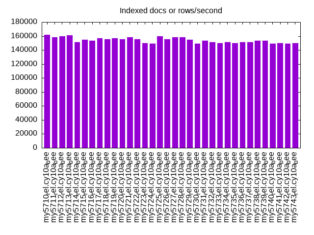
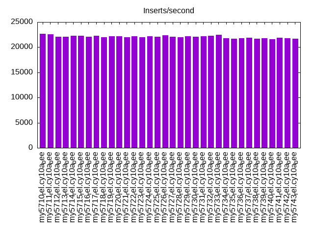
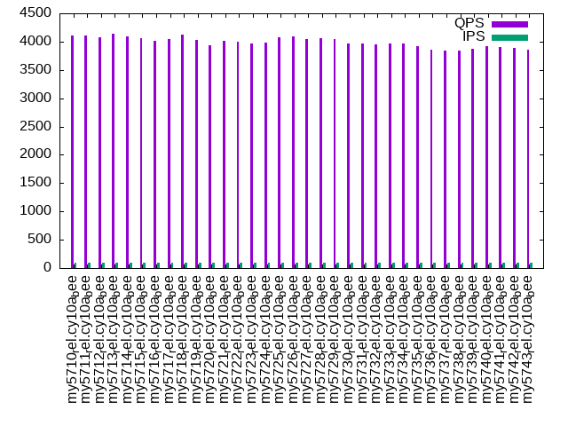
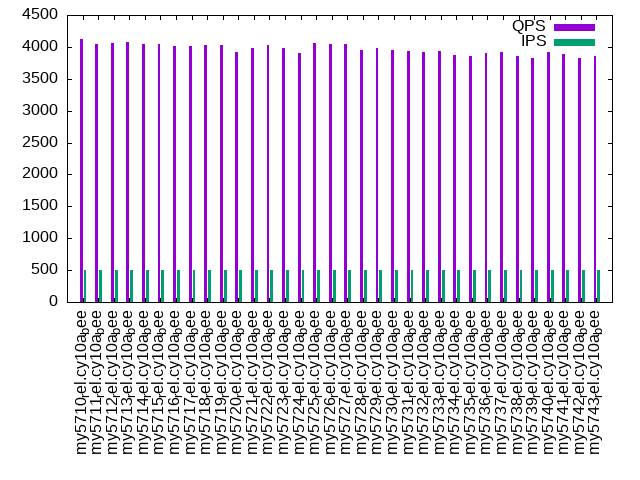
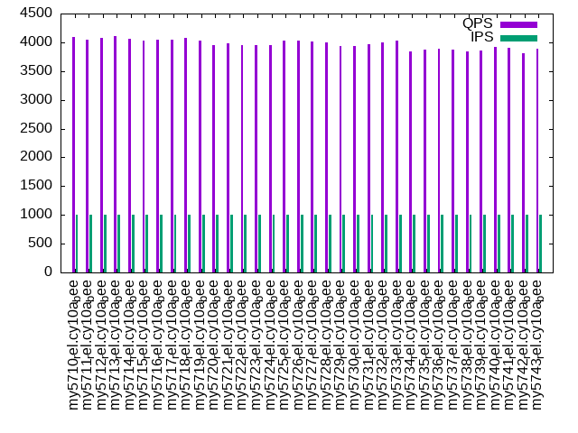

This is a report for the insert benchmark with 20M docs and 1 client(s). It is generated by scripts (bash, awk, sed) and Tufte might not be impressed. An overview of the insert benchmark is here and a short update is here. Below, by DBMS, I mean DBMS+version.config. An example is my8020.c10b40 where my means MySQL, 8020 is version 8.0.20 and c10b40 is the name for the configuration file.
The test server has 8 AMD cores, 16G RAM and an NVMe SSD. It is described here as the Beelink. The benchmark was run with 1 client and there were 1 or 3 connections per client (1 for queries or inserts without rate limits, 1+1 for rate limited inserts+deletes). There is 1 table. It loads 20M rows without secondary indexes, creates secondary indexes, then inserts 50M rows with a delete per insert to avoid growing the table. It then does 3 read+write tests for 1200s each that do queries as fast as possible with 100, 500 and then 1000 inserts/second/client concurrent with the queries and 1000 deletes/second to avoid growing the table. The database is (or should be) cached by InnoDB.
The tested DBMS are:
The numbers are inserts/s for l.i0 and l.i1, indexed docs (or rows) /s for l.x and queries/s for q100, q500, q1000. The values are the average rate over the entire test for inserts (IPS) and queries (QPS). The range of values for IPS and QPS is split into 3 parts: bottom 25%, middle 50%, top 25%. Values in the bottom 25% have a red background, values in the top 25% have a green background and values in the middle have no color. A gray background is used for values that can be ignored because the DBMS did not sustain the target insert rate. Red backgrounds are not used when the minimum value is within 80% of the max value.
| dbms | l.i0 | l.x | l.i1 | q100.1 | q500.1 | q1000.1 |
|---|---|---|---|---|---|---|
| my5710_rel.cy10a_bee | 88889 | 162097 | 22645 | 4104 | 4127 | 4087 |
| my5711_rel.cy10a_bee | 87719 | 158268 | 22604 | 4106 | 4047 | 4045 |
| my5712_rel.cy10a_bee | 86956 | 159524 | 22094 | 4078 | 4055 | 4071 |
| my5713_rel.cy10a_bee | 88106 | 160800 | 22124 | 4135 | 4080 | 4102 |
| my5714_rel.cy10a_bee | 87719 | 151128 | 22232 | 4099 | 4046 | 4061 |
| my5715_rel.cy10a_bee | 86956 | 154615 | 22292 | 4060 | 4040 | 4037 |
| my5716_rel.cy10a_bee | 85837 | 153435 | 22114 | 4010 | 4016 | 4041 |
| my5717_rel.cy10a_bee | 88889 | 157031 | 22321 | 4044 | 4017 | 4041 |
| my5718_rel.cy10a_bee | 86207 | 155814 | 22017 | 4124 | 4036 | 4076 |
| my5719_rel.cy10a_bee | 86956 | 157031 | 22134 | 4033 | 4035 | 4024 |
| my5720_rel.cy10a_bee | 86207 | 155814 | 22153 | 3938 | 3918 | 3952 |
| my5721_rel.cy10a_bee | 86207 | 158268 | 22007 | 4009 | 3981 | 3988 |
| my5722_rel.cy10a_bee | 87336 | 155814 | 22153 | 3991 | 4029 | 3955 |
| my5723_rel.cy10a_bee | 86580 | 150000 | 21968 | 3971 | 3982 | 3959 |
| my5724_rel.cy10a_bee | 87336 | 148889 | 22134 | 3990 | 3899 | 3958 |
| my5725_rel.cy10a_bee | 85470 | 159524 | 22104 | 4074 | 4060 | 4028 |
| my5726_rel.cy10a_bee | 86207 | 155814 | 22351 | 4092 | 4045 | 4028 |
| my5727_rel.cy10a_bee | 84746 | 158268 | 22056 | 4044 | 4043 | 4020 |
| my5728_rel.cy10a_bee | 85106 | 158268 | 22026 | 4066 | 3949 | 3996 |
| my5729_rel.cy10a_bee | 86207 | 154615 | 22193 | 4042 | 3981 | 3935 |
| my5730_rel.cy10a_bee | 85837 | 148889 | 22036 | 3961 | 3958 | 3929 |
| my5731_rel.cy10a_bee | 85470 | 153435 | 22183 | 3962 | 3935 | 3963 |
| my5732_rel.cy10a_bee | 86580 | 151128 | 22272 | 3958 | 3920 | 3992 |
| my5733_rel.cy10a_bee | 86580 | 150000 | 22492 | 3969 | 3938 | 4026 |
| my5734_rel.cy10a_bee | 84388 | 151128 | 21758 | 3967 | 3873 | 3848 |
| my5735_rel.cy10a_bee | 82988 | 150000 | 21673 | 3922 | 3857 | 3877 |
| my5736_rel.cy10a_bee | 83333 | 151128 | 21777 | 3852 | 3908 | 3882 |
| my5737_rel.cy10a_bee | 84034 | 151128 | 21863 | 3835 | 3925 | 3866 |
| my5738_rel.cy10a_bee | 82988 | 153435 | 21739 | 3840 | 3859 | 3848 |
| my5739_rel.cy10a_bee | 83682 | 153435 | 21786 | 3880 | 3829 | 3850 |
| my5740_rel.cy10a_bee | 83682 | 148889 | 21636 | 3921 | 3913 | 3915 |
| my5741_rel.cy10a_bee | 84388 | 150000 | 21853 | 3897 | 3889 | 3901 |
| my5742_rel.cy10a_bee | 84746 | 148889 | 21758 | 3886 | 3833 | 3813 |
| my5743_rel.cy10a_bee | 84034 | 150000 | 21730 | 3854 | 3856 | 3885 |
This table has relative throughput, throughput for the DBMS relative to the DBMS in the first line, using the absolute throughput from the previous table. Values less than 0.95 have a yellow background. Values greater than 1.05 have a blue background.
| dbms | l.i0 | l.x | l.i1 | q100.1 | q500.1 | q1000.1 |
|---|---|---|---|---|---|---|
| my5710_rel.cy10a_bee | 1.00 | 1.00 | 1.00 | 1.00 | 1.00 | 1.00 |
| my5711_rel.cy10a_bee | 0.99 | 0.98 | 1.00 | 1.00 | 0.98 | 0.99 |
| my5712_rel.cy10a_bee | 0.98 | 0.98 | 0.98 | 0.99 | 0.98 | 1.00 |
| my5713_rel.cy10a_bee | 0.99 | 0.99 | 0.98 | 1.01 | 0.99 | 1.00 |
| my5714_rel.cy10a_bee | 0.99 | 0.93 | 0.98 | 1.00 | 0.98 | 0.99 |
| my5715_rel.cy10a_bee | 0.98 | 0.95 | 0.98 | 0.99 | 0.98 | 0.99 |
| my5716_rel.cy10a_bee | 0.97 | 0.95 | 0.98 | 0.98 | 0.97 | 0.99 |
| my5717_rel.cy10a_bee | 1.00 | 0.97 | 0.99 | 0.99 | 0.97 | 0.99 |
| my5718_rel.cy10a_bee | 0.97 | 0.96 | 0.97 | 1.00 | 0.98 | 1.00 |
| my5719_rel.cy10a_bee | 0.98 | 0.97 | 0.98 | 0.98 | 0.98 | 0.98 |
| my5720_rel.cy10a_bee | 0.97 | 0.96 | 0.98 | 0.96 | 0.95 | 0.97 |
| my5721_rel.cy10a_bee | 0.97 | 0.98 | 0.97 | 0.98 | 0.96 | 0.98 |
| my5722_rel.cy10a_bee | 0.98 | 0.96 | 0.98 | 0.97 | 0.98 | 0.97 |
| my5723_rel.cy10a_bee | 0.97 | 0.93 | 0.97 | 0.97 | 0.96 | 0.97 |
| my5724_rel.cy10a_bee | 0.98 | 0.92 | 0.98 | 0.97 | 0.94 | 0.97 |
| my5725_rel.cy10a_bee | 0.96 | 0.98 | 0.98 | 0.99 | 0.98 | 0.99 |
| my5726_rel.cy10a_bee | 0.97 | 0.96 | 0.99 | 1.00 | 0.98 | 0.99 |
| my5727_rel.cy10a_bee | 0.95 | 0.98 | 0.97 | 0.99 | 0.98 | 0.98 |
| my5728_rel.cy10a_bee | 0.96 | 0.98 | 0.97 | 0.99 | 0.96 | 0.98 |
| my5729_rel.cy10a_bee | 0.97 | 0.95 | 0.98 | 0.98 | 0.96 | 0.96 |
| my5730_rel.cy10a_bee | 0.97 | 0.92 | 0.97 | 0.97 | 0.96 | 0.96 |
| my5731_rel.cy10a_bee | 0.96 | 0.95 | 0.98 | 0.97 | 0.95 | 0.97 |
| my5732_rel.cy10a_bee | 0.97 | 0.93 | 0.98 | 0.96 | 0.95 | 0.98 |
| my5733_rel.cy10a_bee | 0.97 | 0.93 | 0.99 | 0.97 | 0.95 | 0.99 |
| my5734_rel.cy10a_bee | 0.95 | 0.93 | 0.96 | 0.97 | 0.94 | 0.94 |
| my5735_rel.cy10a_bee | 0.93 | 0.93 | 0.96 | 0.96 | 0.93 | 0.95 |
| my5736_rel.cy10a_bee | 0.94 | 0.93 | 0.96 | 0.94 | 0.95 | 0.95 |
| my5737_rel.cy10a_bee | 0.95 | 0.93 | 0.97 | 0.93 | 0.95 | 0.95 |
| my5738_rel.cy10a_bee | 0.93 | 0.95 | 0.96 | 0.94 | 0.94 | 0.94 |
| my5739_rel.cy10a_bee | 0.94 | 0.95 | 0.96 | 0.95 | 0.93 | 0.94 |
| my5740_rel.cy10a_bee | 0.94 | 0.92 | 0.96 | 0.96 | 0.95 | 0.96 |
| my5741_rel.cy10a_bee | 0.95 | 0.93 | 0.97 | 0.95 | 0.94 | 0.95 |
| my5742_rel.cy10a_bee | 0.95 | 0.92 | 0.96 | 0.95 | 0.93 | 0.93 |
| my5743_rel.cy10a_bee | 0.95 | 0.93 | 0.96 | 0.94 | 0.93 | 0.95 |
This lists the average rate of inserts/s for the tests that do inserts concurrent with queries. For such tests the query rate is listed in the table above. The read+write tests are setup so that the insert rate should match the target rate every second. Cells that are not at least 95% of the target have a red background to indicate a failure to satisfy the target.
| dbms | q100.1 | q500.1 | q1000.1 |
|---|---|---|---|
| my5710_rel.cy10a_bee | 100 | 499 | 997 |
| my5711_rel.cy10a_bee | 100 | 498 | 998 |
| my5712_rel.cy10a_bee | 100 | 499 | 998 |
| my5713_rel.cy10a_bee | 100 | 499 | 998 |
| my5714_rel.cy10a_bee | 100 | 499 | 998 |
| my5715_rel.cy10a_bee | 100 | 499 | 998 |
| my5716_rel.cy10a_bee | 100 | 499 | 998 |
| my5717_rel.cy10a_bee | 100 | 499 | 998 |
| my5718_rel.cy10a_bee | 100 | 499 | 998 |
| my5719_rel.cy10a_bee | 100 | 499 | 998 |
| my5720_rel.cy10a_bee | 100 | 499 | 998 |
| my5721_rel.cy10a_bee | 100 | 499 | 998 |
| my5722_rel.cy10a_bee | 100 | 499 | 998 |
| my5723_rel.cy10a_bee | 100 | 499 | 997 |
| my5724_rel.cy10a_bee | 100 | 499 | 998 |
| my5725_rel.cy10a_bee | 100 | 499 | 997 |
| my5726_rel.cy10a_bee | 100 | 499 | 998 |
| my5727_rel.cy10a_bee | 100 | 499 | 997 |
| my5728_rel.cy10a_bee | 100 | 499 | 998 |
| my5729_rel.cy10a_bee | 100 | 499 | 998 |
| my5730_rel.cy10a_bee | 100 | 499 | 997 |
| my5731_rel.cy10a_bee | 100 | 499 | 997 |
| my5732_rel.cy10a_bee | 100 | 499 | 998 |
| my5733_rel.cy10a_bee | 100 | 499 | 998 |
| my5734_rel.cy10a_bee | 100 | 498 | 997 |
| my5735_rel.cy10a_bee | 100 | 499 | 998 |
| my5736_rel.cy10a_bee | 100 | 499 | 998 |
| my5737_rel.cy10a_bee | 100 | 499 | 998 |
| my5738_rel.cy10a_bee | 100 | 499 | 997 |
| my5739_rel.cy10a_bee | 100 | 499 | 998 |
| my5740_rel.cy10a_bee | 100 | 500 | 998 |
| my5741_rel.cy10a_bee | 100 | 499 | 998 |
| my5742_rel.cy10a_bee | 100 | 500 | 998 |
| my5743_rel.cy10a_bee | 100 | 499 | 997 |
| target | 100 | 500 | 1000 |
l.i0: load without secondary indexes. Graphs for performance per 1-second interval are here.
Average throughput:
Insert response time histogram: each cell has the percentage of responses that take <= the time in the header and max is the max response time in seconds. For the max column values in the top 25% of the range have a red background and in the bottom 25% of the range have a green background. The red background is not used when the min value is within 80% of the max value.
| dbms | 256us | 1ms | 4ms | 16ms | 64ms | 256ms | 1s | 4s | 16s | gt | max |
|---|---|---|---|---|---|---|---|---|---|---|---|
| my5710_rel.cy10a_bee | 24.671 | 75.035 | 0.285 | 0.005 | 0.003 | 0.102 | |||||
| my5711_rel.cy10a_bee | 13.242 | 86.465 | 0.286 | 0.006 | 0.001 | 0.102 | |||||
| my5712_rel.cy10a_bee | 6.571 | 93.141 | 0.281 | 0.006 | 0.001 | 0.104 | |||||
| my5713_rel.cy10a_bee | 14.352 | 85.354 | 0.286 | 0.007 | 0.001 | 0.101 | |||||
| my5714_rel.cy10a_bee | 11.380 | 88.327 | 0.287 | 0.004 | 0.002 | 0.102 | |||||
| my5715_rel.cy10a_bee | 6.870 | 92.828 | 0.298 | 0.002 | 0.003 | 0.105 | |||||
| my5716_rel.cy10a_bee | 4.203 | 95.498 | 0.291 | 0.006 | 0.002 | 0.103 | |||||
| my5717_rel.cy10a_bee | 19.457 | 80.257 | 0.279 | 0.003 | 0.003 | 0.106 | |||||
| my5718_rel.cy10a_bee | 4.705 | 94.995 | 0.293 | 0.004 | 0.002 | 0.111 | |||||
| my5719_rel.cy10a_bee | 5.782 | 93.927 | 0.282 | 0.006 | 0.002 | 0.110 | |||||
| my5720_rel.cy10a_bee | 6.234 | 93.463 | 0.298 | 0.003 | 0.002 | 0.109 | |||||
| my5721_rel.cy10a_bee | 5.181 | 94.522 | 0.288 | 0.006 | 0.003 | 0.104 | |||||
| my5722_rel.cy10a_bee | 10.949 | 88.758 | 0.285 | 0.006 | 0.001 | 0.107 | |||||
| my5723_rel.cy10a_bee | 5.188 | 94.513 | 0.293 | 0.003 | 0.002 | 0.105 | |||||
| my5724_rel.cy10a_bee | 7.808 | 91.899 | 0.287 | 0.003 | 0.003 | 0.103 | |||||
| my5725_rel.cy10a_bee | 7.140 | 92.507 | 0.211 | 0.139 | 0.003 | 0.117 | |||||
| my5726_rel.cy10a_bee | 9.492 | 90.159 | 0.206 | 0.139 | 0.003 | 0.103 | |||||
| my5727_rel.cy10a_bee | 3.784 | 95.869 | 0.203 | 0.142 | 0.002 | 0.104 | |||||
| my5728_rel.cy10a_bee | 3.666 | 95.980 | 0.211 | 0.143 | 0.002 | 0.103 | |||||
| my5729_rel.cy10a_bee | 9.398 | 90.257 | 0.197 | 0.145 | 0.003 | 0.106 | |||||
| my5730_rel.cy10a_bee | 5.588 | 94.064 | 0.205 | 0.141 | 0.002 | 0.118 | |||||
| my5731_rel.cy10a_bee | 6.707 | 92.947 | 0.203 | 0.141 | 0.003 | 0.107 | |||||
| my5732_rel.cy10a_bee | 10.859 | 88.797 | 0.201 | 0.139 | 0.003 | 0.109 | |||||
| my5733_rel.cy10a_bee | 10.950 | 88.704 | 0.205 | 0.137 | 0.003 | 0.107 | |||||
| my5734_rel.cy10a_bee | 3.409 | 96.239 | 0.206 | 0.144 | 0.002 | 0.101 | |||||
| my5735_rel.cy10a_bee | 1.287 | 98.355 | 0.213 | 0.144 | 0.001 | 0.102 | |||||
| my5736_rel.cy10a_bee | 1.538 | 98.114 | 0.204 | 0.143 | 0.001 | 0.092 | |||||
| my5737_rel.cy10a_bee | 2.396 | 97.256 | 0.202 | 0.144 | 0.003 | 0.107 | |||||
| my5738_rel.cy10a_bee | 1.052 | 98.594 | 0.211 | 0.141 | 0.002 | 0.102 | |||||
| my5739_rel.cy10a_bee | 1.530 | 98.123 | 0.203 | 0.142 | 0.002 | 0.105 | |||||
| my5740_rel.cy10a_bee | 2.028 | 97.622 | 0.204 | 0.144 | 0.002 | 0.104 | |||||
| my5741_rel.cy10a_bee | 2.542 | 97.108 | 0.201 | 0.146 | 0.002 | 0.135 | |||||
| my5742_rel.cy10a_bee | 2.962 | 96.691 | 0.201 | 0.144 | 0.003 | 0.104 | |||||
| my5743_rel.cy10a_bee | 3.051 | 96.596 | 0.205 | 0.145 | 0.003 | 0.103 |
Performance metrics for the DBMS listed above. Some are normalized by throughput, others are not. Legend for results is here.
ips qps rps rmbps wps wmbps rpq rkbpq wpi wkbpi csps cpups cspq cpupq dbgb1 dbgb2 rss maxop p50 p99 tag 88889 0 0 0.0 138.1 22.5 0.000 0.000 0.002 0.259 8725 21.0 0.098 19 1.3 41.8 2.2 0.102 89541 77824 20m.my5710_rel.cy10a_bee 87719 0 0 0.0 136.2 22.3 0.000 0.000 0.002 0.260 8584 21.0 0.098 19 1.3 41.8 2.2 0.102 88298 80411 20m.my5711_rel.cy10a_bee 86956 0 0 0.0 135.2 22.2 0.000 0.000 0.002 0.261 8544 21.1 0.098 19 1.3 41.8 2.2 0.104 87702 76035 20m.my5712_rel.cy10a_bee 88106 0 0 0.0 136.9 22.4 0.000 0.000 0.002 0.260 8605 21.1 0.098 19 1.3 41.8 2.2 0.101 88689 81608 20m.my5713_rel.cy10a_bee 87719 0 0 0.0 139.5 22.3 0.000 0.000 0.002 0.260 8619 21.0 0.098 19 1.3 41.8 2.2 0.102 88141 78616 20m.my5714_rel.cy10a_bee 86956 0 0 0.0 134.8 22.0 0.000 0.000 0.002 0.259 8544 21.0 0.098 19 1.3 41.8 2.2 0.105 87197 74875 20m.my5715_rel.cy10a_bee 85837 0 0 0.0 133.3 21.8 0.000 0.000 0.002 0.261 8477 21.0 0.099 20 1.3 41.8 2.2 0.103 86404 77415 20m.my5716_rel.cy10a_bee 88889 0 0 0.0 137.7 22.5 0.000 0.000 0.002 0.259 8722 21.0 0.098 19 1.3 41.8 2.2 0.106 89301 75553 20m.my5717_rel.cy10a_bee 86207 0 0 0.0 133.9 21.9 0.000 0.000 0.002 0.261 8514 21.2 0.099 20 1.3 41.8 2.2 0.111 86903 73618 20m.my5718_rel.cy10a_bee 86956 0 0 0.0 134.6 22.0 0.000 0.000 0.002 0.259 8540 21.1 0.098 19 1.3 41.8 2.2 0.110 87203 75910 20m.my5719_rel.cy10a_bee 86207 0 0 0.0 134.2 22.0 0.000 0.000 0.002 0.261 8515 21.1 0.099 20 1.3 41.8 2.2 0.109 87103 75517 20m.my5720_rel.cy10a_bee 86207 0 0 0.0 133.6 21.9 0.000 0.000 0.002 0.260 8483 21.0 0.098 19 1.3 41.8 2.2 0.104 86705 75515 20m.my5721_rel.cy10a_bee 87336 0 0 0.0 137.5 22.3 0.000 0.000 0.002 0.261 8548 21.0 0.098 19 1.3 41.8 2.2 0.107 88127 79718 20m.my5722_rel.cy10a_bee 86580 0 0 0.0 134.2 21.9 0.000 0.000 0.002 0.260 8533 20.9 0.099 19 1.3 41.8 2.2 0.105 87097 75032 20m.my5723_rel.cy10a_bee 87336 0 0 0.0 135.2 22.2 0.000 0.000 0.002 0.260 8612 21.1 0.099 19 1.3 41.8 2.2 0.103 87700 76018 20m.my5724_rel.cy10a_bee 85470 0 0 0.0 134.7 21.8 0.000 0.000 0.002 0.261 8475 20.9 0.099 20 1.3 41.8 2.1 0.117 86404 63063 20m.my5725_rel.cy10a_bee 86207 0 0 0.0 134.6 21.9 0.000 0.000 0.002 0.260 8506 20.9 0.099 19 1.3 41.8 2.2 0.103 87105 73778 20m.my5726_rel.cy10a_bee 84746 0 0 0.0 133.1 21.5 0.000 0.000 0.002 0.260 8415 21.0 0.099 20 1.3 41.8 2.3 0.104 85807 59542 20m.my5727_rel.cy10a_bee 85106 0 0 0.0 133.1 21.5 0.000 0.000 0.002 0.258 8383 21.0 0.099 20 1.3 41.8 2.3 0.103 85642 73515 20m.my5728_rel.cy10a_bee 86207 0 0 0.0 134.9 21.9 0.000 0.000 0.002 0.260 8525 20.8 0.099 19 1.3 41.8 2.2 0.106 87205 74623 20m.my5729_rel.cy10a_bee 85837 0 0 0.0 134.4 21.7 0.000 0.000 0.002 0.259 8439 20.8 0.098 19 1.3 41.8 2.1 0.118 86340 73785 20m.my5730_rel.cy10a_bee 85470 0 0 0.0 134.0 21.7 0.000 0.000 0.002 0.260 8456 21.0 0.099 20 1.3 41.8 2.1 0.107 86230 76425 20m.my5731_rel.cy10a_bee 86580 0 0 0.0 135.2 21.9 0.000 0.000 0.002 0.259 8520 20.7 0.098 19 1.3 41.8 2.2 0.109 86886 74515 20m.my5732_rel.cy10a_bee 86580 0 0 0.0 135.1 21.9 0.000 0.000 0.002 0.259 8535 21.0 0.099 19 1.3 41.8 2.2 0.107 87204 73914 20m.my5733_rel.cy10a_bee 84388 0 0 0.0 132.7 21.5 0.000 0.000 0.002 0.260 8402 21.1 0.100 20 1.3 41.8 2.3 0.101 85208 74218 20m.my5734_rel.cy10a_bee 82988 0 0 0.0 130.6 21.1 0.000 0.000 0.002 0.260 8256 20.8 0.099 20 1.3 41.8 2.3 0.102 84008 74217 20m.my5735_rel.cy10a_bee 83333 0 0 0.0 130.9 21.2 0.000 0.000 0.002 0.261 8300 21.2 0.100 20 1.3 41.8 2.3 0.092 84074 74451 20m.my5736_rel.cy10a_bee 84034 0 0 0.0 132.4 21.4 0.000 0.000 0.002 0.261 8376 20.7 0.100 20 1.3 41.8 2.3 0.107 85015 73620 20m.my5737_rel.cy10a_bee 82988 0 0 0.0 130.2 21.1 0.000 0.000 0.002 0.260 8286 21.0 0.100 20 1.3 41.8 2.3 0.102 83808 71134 20m.my5738_rel.cy10a_bee 83682 0 0 0.0 131.1 21.2 0.000 0.000 0.002 0.260 8319 21.0 0.099 20 1.3 41.8 2.3 0.105 84407 71518 20m.my5739_rel.cy10a_bee 83682 0 0 0.0 131.5 21.3 0.000 0.000 0.002 0.260 8282 21.0 0.099 20 1.3 41.8 2.3 0.104 84309 57617 20m.my5740_rel.cy10a_bee 84388 0 0 0.0 132.5 21.4 0.000 0.000 0.002 0.260 8401 21.0 0.100 20 1.3 41.8 2.3 0.135 85102 59866 20m.my5741_rel.cy10a_bee 84746 0 0 0.0 132.5 21.4 0.000 0.000 0.002 0.259 8408 20.8 0.099 20 1.3 41.8 2.3 0.104 85015 72331 20m.my5742_rel.cy10a_bee 84034 0 0 0.0 132.5 21.4 0.000 0.000 0.002 0.261 8366 20.8 0.100 20 1.3 41.8 2.3 0.103 85161 73065 20m.my5743_rel.cy10a_bee
l.x: create secondary indexes.
Average throughput:
Performance metrics for the DBMS listed above. Some are normalized by throughput, others are not. Legend for results is here.
ips qps rps rmbps wps wmbps rpq rkbpq wpi wkbpi csps cpups cspq cpupq dbgb1 dbgb2 rss maxop p50 p99 tag 162097 0 0 0.0 1680.8 142.0 0.000 0.000 0.010 0.897 8871 12.3 0.055 6 3.0 43.5 3.4 0.012 NA NA 20m.my5710_rel.cy10a_bee 158268 0 0 0.0 1642.5 139.2 0.000 0.000 0.010 0.900 9341 12.4 0.059 6 3.0 43.5 3.2 0.012 NA NA 20m.my5711_rel.cy10a_bee 159524 0 0 0.0 1774.9 143.0 0.000 0.000 0.011 0.918 10188 12.6 0.064 6 3.0 43.5 3.3 0.012 NA NA 20m.my5712_rel.cy10a_bee 160800 0 0 0.0 2082.5 147.6 0.000 0.000 0.013 0.940 11144 12.5 0.069 6 3.0 43.5 3.4 0.012 NA NA 20m.my5713_rel.cy10a_bee 151128 0 0 0.0 1569.9 133.4 0.000 0.000 0.010 0.904 9021 12.6 0.060 7 3.0 43.5 3.2 0.012 NA NA 20m.my5714_rel.cy10a_bee 154615 0 0 0.0 1951.0 141.3 0.000 0.000 0.013 0.936 10701 12.5 0.069 6 3.0 43.5 3.2 0.012 NA NA 20m.my5715_rel.cy10a_bee 153435 0 0 0.0 1922.8 140.9 0.000 0.000 0.013 0.940 10467 12.6 0.068 7 3.0 43.5 3.2 0.015 NA NA 20m.my5716_rel.cy10a_bee 157031 0 0 0.0 1644.2 139.1 0.000 0.000 0.010 0.907 9307 12.5 0.059 6 3.0 43.5 3.2 0.012 NA NA 20m.my5717_rel.cy10a_bee 155814 0 0 0.0 1630.2 138.0 0.000 0.000 0.010 0.907 9054 12.5 0.058 6 3.0 43.5 3.2 0.012 NA NA 20m.my5718_rel.cy10a_bee 157031 0 0 0.0 1633.9 138.3 0.000 0.000 0.010 0.902 9005 12.5 0.057 6 3.0 43.5 3.2 0.013 NA NA 20m.my5719_rel.cy10a_bee 155814 0 0 0.0 1605.7 137.0 0.000 0.000 0.010 0.900 8791 12.5 0.056 6 3.0 43.5 3.2 0.013 NA NA 20m.my5720_rel.cy10a_bee 158268 0 0 0.0 1662.1 140.5 0.000 0.000 0.011 0.909 9695 12.5 0.061 6 3.0 43.5 3.3 0.012 NA NA 20m.my5721_rel.cy10a_bee 155814 0 0 0.0 1617.8 137.2 0.000 0.000 0.010 0.901 8756 12.5 0.056 6 3.0 43.5 3.2 0.012 NA NA 20m.my5722_rel.cy10a_bee 150000 0 0 0.0 1547.8 132.0 0.000 0.000 0.010 0.901 8496 12.5 0.057 7 3.0 43.5 3.2 0.018 NA NA 20m.my5723_rel.cy10a_bee 148889 0 0 0.0 1551.6 131.5 0.000 0.000 0.010 0.905 8341 12.5 0.056 7 3.0 43.5 3.2 0.013 NA NA 20m.my5724_rel.cy10a_bee 159524 0 0 0.0 1685.3 141.2 0.000 0.000 0.011 0.906 9703 12.3 0.061 6 3.0 43.5 3.3 0.019 NA NA 20m.my5725_rel.cy10a_bee 155814 0 0 0.0 1623.7 137.9 0.000 0.000 0.010 0.906 9026 12.3 0.058 6 3.0 43.5 3.2 0.018 NA NA 20m.my5726_rel.cy10a_bee 158268 0 0 0.0 1648.7 139.7 0.000 0.000 0.010 0.904 9550 12.3 0.060 6 3.0 43.5 3.2 0.019 NA NA 20m.my5727_rel.cy10a_bee 158268 0 0 0.0 1660.8 140.1 0.000 0.000 0.010 0.907 9516 12.3 0.060 6 3.0 43.5 3.3 0.019 NA NA 20m.my5728_rel.cy10a_bee 154615 0 0 0.0 1607.9 136.6 0.000 0.000 0.010 0.905 8656 12.3 0.056 6 3.0 43.5 3.2 0.019 NA NA 20m.my5729_rel.cy10a_bee 148889 0 0 0.0 1905.7 136.7 0.000 0.000 0.013 0.940 10303 12.4 0.069 7 3.0 43.5 3.2 0.024 NA NA 20m.my5730_rel.cy10a_bee 153435 0 0 0.0 1622.6 136.1 0.000 0.000 0.011 0.908 9677 12.4 0.063 6 3.0 43.5 3.2 0.019 NA NA 20m.my5731_rel.cy10a_bee 151128 0 0 0.0 1565.5 133.0 0.000 0.000 0.010 0.901 8951 12.4 0.059 7 3.0 43.5 3.2 0.019 NA NA 20m.my5732_rel.cy10a_bee 150000 0 0 0.0 1563.7 132.9 0.000 0.000 0.010 0.907 8760 12.3 0.058 7 3.0 43.5 3.2 0.023 NA NA 20m.my5733_rel.cy10a_bee 151128 0 0 0.0 1558.4 133.1 0.000 0.000 0.010 0.902 8710 12.4 0.058 7 3.0 43.5 3.2 0.019 NA NA 20m.my5734_rel.cy10a_bee 150000 0 0 0.0 1883.6 136.7 0.000 0.000 0.013 0.933 10260 12.3 0.068 7 3.0 43.5 3.2 0.019 NA NA 20m.my5735_rel.cy10a_bee 151128 0 0 0.0 1565.3 133.5 0.000 0.000 0.010 0.904 8866 12.3 0.059 7 3.0 43.5 3.2 0.019 NA NA 20m.my5736_rel.cy10a_bee 151128 0 0 0.0 1554.1 132.9 0.000 0.000 0.010 0.900 8719 12.4 0.058 7 3.0 43.5 3.2 0.023 NA NA 20m.my5737_rel.cy10a_bee 153435 0 0 0.0 1603.1 135.7 0.000 0.000 0.010 0.906 9608 12.4 0.063 6 3.0 43.5 3.2 0.018 NA NA 20m.my5738_rel.cy10a_bee 153435 0 0 0.0 1608.6 135.8 0.000 0.000 0.010 0.906 9627 12.4 0.063 6 3.0 43.5 3.2 0.019 NA NA 20m.my5739_rel.cy10a_bee 148889 0 0 0.0 1860.4 136.1 0.000 0.000 0.012 0.936 10142 12.4 0.068 7 3.0 43.5 3.2 0.019 NA NA 20m.my5740_rel.cy10a_bee 150000 0 0 0.0 1550.4 131.9 0.000 0.000 0.010 0.900 8441 12.3 0.056 7 3.0 43.5 3.2 0.019 NA NA 20m.my5741_rel.cy10a_bee 148889 0 0 0.0 1883.2 136.5 0.000 0.000 0.013 0.939 10307 12.4 0.069 7 3.0 43.5 3.2 0.019 NA NA 20m.my5742_rel.cy10a_bee 150000 0 0 0.0 1573.0 132.8 0.000 0.000 0.010 0.907 8760 12.4 0.058 7 3.0 43.5 3.2 0.019 NA NA 20m.my5743_rel.cy10a_bee
l.i1: continue load after secondary indexes created. Graphs for performance per 1-second interval are here.
Average throughput:
Insert response time histogram: each cell has the percentage of responses that take <= the time in the header and max is the max response time in seconds. For the max column values in the top 25% of the range have a red background and in the bottom 25% of the range have a green background. The red background is not used when the min value is within 80% of the max value.
| dbms | 256us | 1ms | 4ms | 16ms | 64ms | 256ms | 1s | 4s | 16s | gt | max |
|---|---|---|---|---|---|---|---|---|---|---|---|
| my5710_rel.cy10a_bee | 98.244 | 1.722 | 0.030 | 0.004 | 0.102 | ||||||
| my5711_rel.cy10a_bee | 98.222 | 1.746 | 0.029 | 0.003 | 0.085 | ||||||
| my5712_rel.cy10a_bee | 98.209 | 1.759 | 0.029 | 0.003 | 0.084 | ||||||
| my5713_rel.cy10a_bee | 97.948 | 2.025 | 0.024 | 0.003 | 0.090 | ||||||
| my5714_rel.cy10a_bee | 97.969 | 2.009 | 0.020 | 0.003 | 0.105 | ||||||
| my5715_rel.cy10a_bee | 97.957 | 2.018 | 0.022 | 0.003 | 0.093 | ||||||
| my5716_rel.cy10a_bee | 97.943 | 2.031 | 0.023 | 0.003 | 0.087 | ||||||
| my5717_rel.cy10a_bee | 97.954 | 2.019 | 0.024 | 0.003 | 0.080 | ||||||
| my5718_rel.cy10a_bee | 97.935 | 2.038 | 0.024 | 0.003 | 0.083 | ||||||
| my5719_rel.cy10a_bee | 97.927 | 2.048 | 0.022 | 0.003 | 0.086 | ||||||
| my5720_rel.cy10a_bee | 97.934 | 2.041 | 0.022 | 0.003 | 0.091 | ||||||
| my5721_rel.cy10a_bee | 97.947 | 2.027 | 0.023 | 0.004 | 0.094 | ||||||
| my5722_rel.cy10a_bee | 97.962 | 2.015 | 0.020 | 0.003 | 0.088 | ||||||
| my5723_rel.cy10a_bee | 97.962 | 2.014 | 0.021 | 0.003 | 0.099 | ||||||
| my5724_rel.cy10a_bee | 97.970 | 2.006 | 0.021 | 0.003 | 0.096 | ||||||
| my5725_rel.cy10a_bee | 97.982 | 1.966 | 0.049 | 0.003 | 0.097 | ||||||
| my5726_rel.cy10a_bee | 98.007 | 1.942 | 0.048 | 0.003 | 0.090 | ||||||
| my5727_rel.cy10a_bee | 97.943 | 2.004 | 0.051 | 0.003 | 0.093 | ||||||
| my5728_rel.cy10a_bee | 97.957 | 1.986 | 0.053 | 0.003 | 0.091 | ||||||
| my5729_rel.cy10a_bee | 97.967 | 1.979 | 0.051 | 0.003 | 0.087 | ||||||
| my5730_rel.cy10a_bee | 97.954 | 1.989 | 0.054 | 0.003 | 0.090 | ||||||
| my5731_rel.cy10a_bee | 97.920 | 2.019 | 0.058 | 0.003 | 0.109 | ||||||
| my5732_rel.cy10a_bee | 97.939 | 2.005 | 0.052 | 0.003 | 0.093 | ||||||
| my5733_rel.cy10a_bee | 97.947 | 1.995 | 0.056 | 0.003 | 0.084 | ||||||
| my5734_rel.cy10a_bee | 97.883 | 2.058 | 0.056 | 0.003 | 0.097 | ||||||
| my5735_rel.cy10a_bee | 97.882 | 2.061 | 0.054 | 0.004 | 0.081 | ||||||
| my5736_rel.cy10a_bee | 97.888 | 2.054 | 0.054 | 0.003 | 0.094 | ||||||
| my5737_rel.cy10a_bee | 97.907 | 2.036 | 0.053 | 0.003 | 0.088 | ||||||
| my5738_rel.cy10a_bee | 97.872 | 2.071 | 0.054 | 0.003 | 0.102 | ||||||
| my5739_rel.cy10a_bee | 97.888 | 2.052 | 0.057 | 0.003 | 0.088 | ||||||
| my5740_rel.cy10a_bee | 97.869 | 2.073 | 0.054 | 0.004 | 0.084 | ||||||
| my5741_rel.cy10a_bee | 97.887 | 2.056 | 0.053 | 0.003 | 0.091 | ||||||
| my5742_rel.cy10a_bee | 97.893 | 2.047 | 0.057 | 0.003 | 0.087 | ||||||
| my5743_rel.cy10a_bee | 97.885 | 2.057 | 0.054 | 0.003 | 0.086 |
Delete response time histogram: each cell has the percentage of responses that take <= the time in the header and max is the max response time in seconds. For the max column values in the top 25% of the range have a red background and in the bottom 25% of the range have a green background. The red background is not used when the min value is within 80% of the max value.
| dbms | 256us | 1ms | 4ms | 16ms | 64ms | 256ms | 1s | 4s | 16s | gt | max |
|---|---|---|---|---|---|---|---|---|---|---|---|
| my5710_rel.cy10a_bee | 98.874 | 1.112 | 0.011 | 0.003 | 0.102 | ||||||
| my5711_rel.cy10a_bee | 98.856 | 1.129 | 0.011 | 0.003 | 0.084 | ||||||
| my5712_rel.cy10a_bee | 98.844 | 1.141 | 0.012 | 0.003 | 0.084 | ||||||
| my5713_rel.cy10a_bee | 98.520 | 1.467 | 0.010 | 0.003 | 0.091 | ||||||
| my5714_rel.cy10a_bee | 98.528 | 1.460 | 0.009 | 0.003 | 0.104 | ||||||
| my5715_rel.cy10a_bee | 98.529 | 1.462 | 0.006 | 0.003 | 0.093 | ||||||
| my5716_rel.cy10a_bee | 98.519 | 1.470 | 0.008 | 0.003 | 0.087 | ||||||
| my5717_rel.cy10a_bee | 98.508 | 1.480 | 0.009 | 0.003 | 0.079 | ||||||
| my5718_rel.cy10a_bee | 98.515 | 1.474 | 0.008 | 0.003 | 0.083 | ||||||
| my5719_rel.cy10a_bee | 98.495 | 1.495 | 0.007 | 0.003 | 0.086 | ||||||
| my5720_rel.cy10a_bee | 98.515 | 1.474 | 0.007 | 0.003 | 0.081 | ||||||
| my5721_rel.cy10a_bee | 98.533 | 1.454 | 0.009 | 0.003 | 0.097 | ||||||
| my5722_rel.cy10a_bee | 98.518 | 1.471 | 0.008 | 0.003 | 0.084 | ||||||
| my5723_rel.cy10a_bee | 98.524 | 1.465 | 0.008 | 0.003 | 0.095 | ||||||
| my5724_rel.cy10a_bee | 98.530 | 1.460 | 0.007 | 0.003 | 0.096 | ||||||
| my5725_rel.cy10a_bee | 98.518 | 1.468 | 0.011 | 0.003 | 0.099 | ||||||
| my5726_rel.cy10a_bee | 98.550 | 1.435 | 0.011 | 0.003 | 0.089 | ||||||
| my5727_rel.cy10a_bee | 98.535 | 1.450 | 0.012 | 0.003 | 0.092 | ||||||
| my5728_rel.cy10a_bee | 98.546 | 1.439 | 0.012 | 0.003 | 0.092 | ||||||
| my5729_rel.cy10a_bee | 98.536 | 1.450 | 0.011 | 0.003 | 0.086 | ||||||
| my5730_rel.cy10a_bee | 98.537 | 1.449 | 0.011 | 0.003 | 0.091 | ||||||
| my5731_rel.cy10a_bee | 98.482 | 1.503 | 0.011 | 0.003 | 0.110 | ||||||
| my5732_rel.cy10a_bee | 98.484 | 1.502 | 0.010 | 0.003 | 0.094 | ||||||
| my5733_rel.cy10a_bee | 98.495 | 1.490 | 0.012 | 0.003 | 0.084 | ||||||
| my5734_rel.cy10a_bee | 98.466 | 1.519 | 0.012 | 0.003 | 0.097 | ||||||
| my5735_rel.cy10a_bee | 98.464 | 1.523 | 0.009 | 0.003 | 0.082 | ||||||
| my5736_rel.cy10a_bee | 98.458 | 1.529 | 0.009 | 0.003 | 0.098 | ||||||
| my5737_rel.cy10a_bee | 98.473 | 1.513 | 0.011 | 0.003 | 0.088 | ||||||
| my5738_rel.cy10a_bee | 98.450 | 1.537 | 0.010 | 0.003 | 0.107 | ||||||
| my5739_rel.cy10a_bee | 98.471 | 1.516 | 0.010 | 0.003 | 0.087 | ||||||
| my5740_rel.cy10a_bee | 98.451 | 1.536 | 0.009 | 0.003 | 0.083 | ||||||
| my5741_rel.cy10a_bee | 98.481 | 1.505 | 0.011 | 0.003 | 0.092 | ||||||
| my5742_rel.cy10a_bee | 98.471 | 1.515 | 0.011 | 0.003 | 0.086 | ||||||
| my5743_rel.cy10a_bee | 98.472 | 1.513 | 0.011 | 0.003 | 0.088 |
Performance metrics for the DBMS listed above. Some are normalized by throughput, others are not. Legend for results is here.
ips qps rps rmbps wps wmbps rpq rkbpq wpi wkbpi csps cpups cspq cpupq dbgb1 dbgb2 rss maxop p50 p99 tag 22645 0 0 0.0 1119.3 58.9 0.000 0.000 0.049 2.665 12843 38.4 0.567 136 4.5 45.0 5.5 0.102 23035 7689 20m.my5710_rel.cy10a_bee 22604 0 0 0.0 1130.6 59.1 0.000 0.000 0.050 2.677 12825 38.5 0.567 136 4.5 45.0 5.6 0.085 23024 7542 20m.my5711_rel.cy10a_bee 22094 0 0 0.0 1114.9 58.4 0.000 0.000 0.050 2.707 12615 38.4 0.571 139 4.5 45.0 5.6 0.084 22475 8039 20m.my5712_rel.cy10a_bee 22124 0 0 0.0 1141.5 60.7 0.000 0.000 0.052 2.810 12827 38.2 0.580 138 4.4 44.9 5.5 0.090 22724 8448 20m.my5713_rel.cy10a_bee 22232 0 0 0.0 1132.6 60.3 0.000 0.000 0.051 2.776 12831 38.3 0.577 138 4.4 44.9 5.5 0.105 22725 7592 20m.my5714_rel.cy10a_bee 22292 0 0 0.0 1143.6 60.6 0.000 0.000 0.051 2.784 12850 38.3 0.576 137 4.4 44.9 5.5 0.093 22824 7787 20m.my5715_rel.cy10a_bee 22114 0 0 0.0 1135.8 60.3 0.000 0.000 0.051 2.792 12780 38.3 0.578 139 4.4 44.9 5.5 0.087 22625 8041 20m.my5716_rel.cy10a_bee 22321 0 0 0.0 1167.2 61.6 0.000 0.000 0.052 2.824 12939 38.4 0.580 138 4.4 44.9 5.5 0.080 22874 8540 20m.my5717_rel.cy10a_bee 22017 0 0 0.0 1136.8 60.0 0.000 0.000 0.052 2.792 12736 38.4 0.578 140 4.4 44.9 5.5 0.083 22525 8091 20m.my5718_rel.cy10a_bee 22134 0 0 0.0 1163.1 61.3 0.000 0.000 0.053 2.834 12903 38.3 0.583 138 4.4 44.9 5.5 0.086 22677 8640 20m.my5719_rel.cy10a_bee 22153 0 0 0.0 1137.7 60.4 0.000 0.000 0.051 2.791 12794 38.4 0.578 139 4.4 44.9 5.5 0.091 22675 8591 20m.my5720_rel.cy10a_bee 22007 0 0 0.0 1128.7 60.0 0.000 0.000 0.051 2.791 12732 38.1 0.579 139 4.4 44.9 5.5 0.094 22525 8493 20m.my5721_rel.cy10a_bee 22153 0 0 0.0 1134.5 60.3 0.000 0.000 0.051 2.786 12775 38.3 0.577 138 4.4 44.9 5.5 0.088 22675 9090 20m.my5722_rel.cy10a_bee 21968 0 0 0.0 1122.4 59.9 0.000 0.000 0.051 2.791 12668 38.2 0.577 139 4.4 44.9 5.5 0.099 22525 8740 20m.my5723_rel.cy10a_bee 22134 0 0 0.0 1127.9 60.2 0.000 0.000 0.051 2.785 12776 38.2 0.577 138 4.4 44.9 5.5 0.096 22723 8694 20m.my5724_rel.cy10a_bee 22104 0 0 0.0 1142.0 60.5 0.000 0.000 0.052 2.804 12804 38.2 0.579 138 4.4 44.9 5.5 0.097 22673 8095 20m.my5725_rel.cy10a_bee 22351 0 0 0.0 1129.8 60.4 0.000 0.000 0.051 2.768 12819 38.2 0.574 137 4.4 44.9 5.5 0.090 22924 7888 20m.my5726_rel.cy10a_bee 22056 0 0 0.0 1125.8 59.7 0.000 0.000 0.051 2.773 12750 38.2 0.578 139 4.4 44.9 5.5 0.093 22586 7641 20m.my5727_rel.cy10a_bee 22026 0 0 0.0 1115.0 59.5 0.000 0.000 0.051 2.766 12675 38.2 0.575 139 4.4 44.9 5.5 0.091 22575 7641 20m.my5728_rel.cy10a_bee 22193 0 0 0.0 1123.3 59.6 0.000 0.000 0.051 2.751 12744 38.3 0.574 138 4.4 44.9 5.5 0.087 22677 7192 20m.my5729_rel.cy10a_bee 22036 0 0 0.0 1133.0 59.9 0.000 0.000 0.051 2.785 12767 38.3 0.579 139 4.4 44.9 5.5 0.090 22575 7144 20m.my5730_rel.cy10a_bee 22183 0 0 0.0 1146.0 60.9 0.000 0.000 0.052 2.810 12597 37.6 0.568 136 4.4 44.9 5.5 0.109 22774 6892 20m.my5731_rel.cy10a_bee 22272 0 0 0.0 1149.6 61.2 0.000 0.000 0.052 2.814 12618 37.8 0.567 136 4.4 44.9 5.5 0.093 22823 7542 20m.my5732_rel.cy10a_bee 22492 0 0 0.0 1153.8 61.4 0.000 0.000 0.051 2.795 12719 37.8 0.566 134 4.4 44.9 5.5 0.084 23025 8091 20m.my5733_rel.cy10a_bee 21758 0 0 0.0 1133.0 59.9 0.000 0.000 0.052 2.821 12387 37.9 0.569 139 4.4 44.9 5.5 0.097 22325 7741 20m.my5734_rel.cy10a_bee 21673 0 0 0.0 1119.8 59.6 0.000 0.000 0.052 2.815 12337 37.8 0.569 140 4.4 44.9 5.5 0.081 22226 7746 20m.my5735_rel.cy10a_bee 21777 0 0 0.0 1140.9 60.4 0.000 0.000 0.052 2.840 12405 37.8 0.570 139 4.4 44.9 5.5 0.094 22375 7941 20m.my5736_rel.cy10a_bee 21863 0 0 0.0 1129.0 59.8 0.000 0.000 0.052 2.803 12436 37.9 0.569 139 4.4 44.9 5.5 0.088 22376 7941 20m.my5737_rel.cy10a_bee 21739 0 0 0.0 1138.6 60.2 0.000 0.000 0.052 2.836 12398 37.8 0.570 139 4.4 44.9 5.5 0.102 22279 7982 20m.my5738_rel.cy10a_bee 21786 0 0 0.0 1130.6 60.0 0.000 0.000 0.052 2.819 12381 37.8 0.568 139 4.4 44.9 5.5 0.088 22374 7792 20m.my5739_rel.cy10a_bee 21636 0 0 0.0 1139.6 60.2 0.000 0.000 0.053 2.849 12347 37.7 0.571 139 4.4 44.9 5.5 0.084 22225 7240 20m.my5740_rel.cy10a_bee 21853 0 0 0.0 1130.4 60.0 0.000 0.000 0.052 2.810 12453 37.9 0.570 139 4.4 44.9 5.5 0.091 22425 7241 20m.my5741_rel.cy10a_bee 21758 0 0 0.0 1126.0 59.7 0.000 0.000 0.052 2.811 12332 37.9 0.567 139 4.4 44.9 5.5 0.087 22287 7641 20m.my5742_rel.cy10a_bee 21730 0 0 0.0 1130.5 59.9 0.000 0.000 0.052 2.822 12353 37.7 0.569 139 4.4 44.9 5.5 0.086 22275 7492 20m.my5743_rel.cy10a_bee
q100.1: range queries with 100 insert/s per client. Graphs for performance per 1-second interval are here.
Average throughput:
Query response time histogram: each cell has the percentage of responses that take <= the time in the header and max is the max response time in seconds. For max values in the top 25% of the range have a red background and in the bottom 25% of the range have a green background. The red background is not used when the min value is within 80% of the max value.
| dbms | 256us | 1ms | 4ms | 16ms | 64ms | 256ms | 1s | 4s | 16s | gt | max |
|---|---|---|---|---|---|---|---|---|---|---|---|
| my5710_rel.cy10a_bee | 71.023 | 28.977 | nonzero | 0.003 | |||||||
| my5711_rel.cy10a_bee | 71.200 | 28.799 | 0.001 | nonzero | 0.007 | ||||||
| my5712_rel.cy10a_bee | 70.400 | 29.600 | nonzero | 0.003 | |||||||
| my5713_rel.cy10a_bee | 71.704 | 28.296 | nonzero | 0.003 | |||||||
| my5714_rel.cy10a_bee | 71.159 | 28.840 | nonzero | 0.003 | |||||||
| my5715_rel.cy10a_bee | 70.034 | 29.965 | nonzero | 0.003 | |||||||
| my5716_rel.cy10a_bee | 68.343 | 31.657 | nonzero | nonzero | 0.004 | ||||||
| my5717_rel.cy10a_bee | 69.342 | 30.658 | nonzero | 0.003 | |||||||
| my5718_rel.cy10a_bee | 71.549 | 28.450 | 0.001 | 0.003 | |||||||
| my5719_rel.cy10a_bee | 69.265 | 30.734 | 0.001 | 0.003 | |||||||
| my5720_rel.cy10a_bee | 65.807 | 34.193 | nonzero | 0.003 | |||||||
| my5721_rel.cy10a_bee | 69.148 | 30.852 | nonzero | 0.002 | |||||||
| my5722_rel.cy10a_bee | 68.127 | 31.873 | nonzero | 0.003 | |||||||
| my5723_rel.cy10a_bee | 67.488 | 32.511 | nonzero | 0.003 | |||||||
| my5724_rel.cy10a_bee | 68.319 | 31.681 | 0.001 | nonzero | 0.004 | ||||||
| my5725_rel.cy10a_bee | 70.445 | 29.554 | nonzero | 0.003 | |||||||
| my5726_rel.cy10a_bee | 70.710 | 29.289 | nonzero | 0.003 | |||||||
| my5727_rel.cy10a_bee | 69.786 | 30.214 | nonzero | 0.002 | |||||||
| my5728_rel.cy10a_bee | 70.051 | 29.948 | nonzero | 0.003 | |||||||
| my5729_rel.cy10a_bee | 69.454 | 30.545 | 0.001 | 0.003 | |||||||
| my5730_rel.cy10a_bee | 66.628 | 33.371 | nonzero | nonzero | 0.004 | ||||||
| my5731_rel.cy10a_bee | 67.380 | 32.620 | nonzero | 0.004 | |||||||
| my5732_rel.cy10a_bee | 67.452 | 32.547 | 0.001 | nonzero | 0.004 | ||||||
| my5733_rel.cy10a_bee | 66.891 | 33.108 | nonzero | nonzero | 0.005 | ||||||
| my5734_rel.cy10a_bee | 67.506 | 32.494 | nonzero | nonzero | 0.004 | ||||||
| my5735_rel.cy10a_bee | 65.886 | 34.114 | nonzero | nonzero | 0.004 | ||||||
| my5736_rel.cy10a_bee | 64.370 | 35.629 | nonzero | nonzero | 0.005 | ||||||
| my5737_rel.cy10a_bee | 62.877 | 37.122 | nonzero | nonzero | 0.005 | ||||||
| my5738_rel.cy10a_bee | 64.028 | 35.972 | nonzero | nonzero | 0.004 | ||||||
| my5739_rel.cy10a_bee | 64.513 | 35.487 | nonzero | nonzero | 0.005 | ||||||
| my5740_rel.cy10a_bee | 66.086 | 33.913 | nonzero | nonzero | 0.004 | ||||||
| my5741_rel.cy10a_bee | 65.274 | 34.725 | nonzero | nonzero | 0.005 | ||||||
| my5742_rel.cy10a_bee | 64.597 | 35.402 | nonzero | nonzero | 0.005 | ||||||
| my5743_rel.cy10a_bee | 63.890 | 36.110 | nonzero | 0.003 |
Insert response time histogram: each cell has the percentage of responses that take <= the time in the header and max is the max response time in seconds. For max values in the top 25% of the range have a red background and in the bottom 25% of the range have a green background. The red background is not used when the min value is within 80% of the max value.
| dbms | 256us | 1ms | 4ms | 16ms | 64ms | 256ms | 1s | 4s | 16s | gt | max |
|---|---|---|---|---|---|---|---|---|---|---|---|
| my5710_rel.cy10a_bee | 99.583 | 0.417 | 0.011 | ||||||||
| my5711_rel.cy10a_bee | 99.750 | 0.250 | 0.009 | ||||||||
| my5712_rel.cy10a_bee | 99.500 | 0.500 | 0.009 | ||||||||
| my5713_rel.cy10a_bee | 99.542 | 0.458 | 0.009 | ||||||||
| my5714_rel.cy10a_bee | 99.458 | 0.542 | 0.008 | ||||||||
| my5715_rel.cy10a_bee | 99.292 | 0.708 | 0.009 | ||||||||
| my5716_rel.cy10a_bee | 99.417 | 0.583 | 0.013 | ||||||||
| my5717_rel.cy10a_bee | 99.458 | 0.542 | 0.011 | ||||||||
| my5718_rel.cy10a_bee | 99.667 | 0.333 | 0.015 | ||||||||
| my5719_rel.cy10a_bee | 99.583 | 0.417 | 0.012 | ||||||||
| my5720_rel.cy10a_bee | 99.667 | 0.333 | 0.011 | ||||||||
| my5721_rel.cy10a_bee | 99.125 | 0.875 | 0.009 | ||||||||
| my5722_rel.cy10a_bee | 99.708 | 0.292 | 0.010 | ||||||||
| my5723_rel.cy10a_bee | 99.417 | 0.583 | 0.013 | ||||||||
| my5724_rel.cy10a_bee | 99.458 | 0.542 | 0.011 | ||||||||
| my5725_rel.cy10a_bee | 99.625 | 0.375 | 0.008 | ||||||||
| my5726_rel.cy10a_bee | 99.500 | 0.500 | 0.009 | ||||||||
| my5727_rel.cy10a_bee | 99.542 | 0.458 | 0.009 | ||||||||
| my5728_rel.cy10a_bee | 99.375 | 0.625 | 0.011 | ||||||||
| my5729_rel.cy10a_bee | 99.625 | 0.375 | 0.008 | ||||||||
| my5730_rel.cy10a_bee | 99.417 | 0.583 | 0.011 | ||||||||
| my5731_rel.cy10a_bee | 99.417 | 0.583 | 0.011 | ||||||||
| my5732_rel.cy10a_bee | 99.542 | 0.458 | 0.012 | ||||||||
| my5733_rel.cy10a_bee | 99.583 | 0.417 | 0.009 | ||||||||
| my5734_rel.cy10a_bee | 99.625 | 0.375 | 0.012 | ||||||||
| my5735_rel.cy10a_bee | 99.583 | 0.417 | 0.009 | ||||||||
| my5736_rel.cy10a_bee | 99.875 | 0.125 | 0.007 | ||||||||
| my5737_rel.cy10a_bee | 99.292 | 0.708 | 0.009 | ||||||||
| my5738_rel.cy10a_bee | 99.583 | 0.417 | 0.008 | ||||||||
| my5739_rel.cy10a_bee | 99.417 | 0.583 | 0.008 | ||||||||
| my5740_rel.cy10a_bee | 99.625 | 0.375 | 0.008 | ||||||||
| my5741_rel.cy10a_bee | 99.417 | 0.583 | 0.014 | ||||||||
| my5742_rel.cy10a_bee | 99.250 | 0.750 | 0.010 | ||||||||
| my5743_rel.cy10a_bee | 99.667 | 0.333 | 0.009 |
Delete response time histogram: each cell has the percentage of responses that take <= the time in the header and max is the max response time in seconds. For max values in the top 25% of the range have a red background and in the bottom 25% of the range have a green background. The red background is not used when the min value is within 80% of the max value.
| dbms | 256us | 1ms | 4ms | 16ms | 64ms | 256ms | 1s | 4s | 16s | gt | max |
|---|---|---|---|---|---|---|---|---|---|---|---|
| my5710_rel.cy10a_bee | 99.625 | 0.375 | 0.008 | ||||||||
| my5711_rel.cy10a_bee | 99.875 | 0.125 | 0.008 | ||||||||
| my5712_rel.cy10a_bee | 99.542 | 0.458 | 0.009 | ||||||||
| my5713_rel.cy10a_bee | 99.542 | 0.458 | 0.008 | ||||||||
| my5714_rel.cy10a_bee | 99.542 | 0.458 | 0.008 | ||||||||
| my5715_rel.cy10a_bee | 99.333 | 0.667 | 0.008 | ||||||||
| my5716_rel.cy10a_bee | 99.542 | 0.458 | 0.013 | ||||||||
| my5717_rel.cy10a_bee | 99.625 | 0.375 | 0.012 | ||||||||
| my5718_rel.cy10a_bee | 99.750 | 0.250 | 0.007 | ||||||||
| my5719_rel.cy10a_bee | 99.667 | 0.333 | 0.010 | ||||||||
| my5720_rel.cy10a_bee | 99.708 | 0.292 | 0.010 | ||||||||
| my5721_rel.cy10a_bee | 99.292 | 0.708 | 0.008 | ||||||||
| my5722_rel.cy10a_bee | 99.792 | 0.208 | 0.010 | ||||||||
| my5723_rel.cy10a_bee | 99.625 | 0.375 | 0.013 | ||||||||
| my5724_rel.cy10a_bee | 99.625 | 0.375 | 0.011 | ||||||||
| my5725_rel.cy10a_bee | 99.667 | 0.333 | 0.008 | ||||||||
| my5726_rel.cy10a_bee | 99.625 | 0.375 | 0.008 | ||||||||
| my5727_rel.cy10a_bee | 99.625 | 0.375 | 0.007 | ||||||||
| my5728_rel.cy10a_bee | 99.542 | 0.458 | 0.011 | ||||||||
| my5729_rel.cy10a_bee | 99.750 | 0.250 | 0.008 | ||||||||
| my5730_rel.cy10a_bee | 99.500 | 0.500 | 0.009 | ||||||||
| my5731_rel.cy10a_bee | 99.625 | 0.375 | 0.011 | ||||||||
| my5732_rel.cy10a_bee | 99.625 | 0.375 | 0.012 | ||||||||
| my5733_rel.cy10a_bee | 99.667 | 0.333 | 0.009 | ||||||||
| my5734_rel.cy10a_bee | 99.625 | 0.375 | 0.011 | ||||||||
| my5735_rel.cy10a_bee | 99.583 | 0.417 | 0.008 | ||||||||
| my5736_rel.cy10a_bee | 99.833 | 0.167 | 0.007 | ||||||||
| my5737_rel.cy10a_bee | 99.500 | 0.500 | 0.008 | ||||||||
| my5738_rel.cy10a_bee | 99.708 | 0.292 | 0.008 | ||||||||
| my5739_rel.cy10a_bee | 99.667 | 0.333 | 0.008 | ||||||||
| my5740_rel.cy10a_bee | 99.750 | 0.250 | 0.008 | ||||||||
| my5741_rel.cy10a_bee | 99.417 | 0.583 | 0.012 | ||||||||
| my5742_rel.cy10a_bee | 99.375 | 0.625 | 0.010 | ||||||||
| my5743_rel.cy10a_bee | 99.708 | 0.292 | 0.008 |
Performance metrics for the DBMS listed above. Some are normalized by throughput, others are not. Legend for results is here.
ips qps rps rmbps wps wmbps rpq rkbpq wpi wkbpi csps cpups cspq cpupq dbgb1 dbgb2 rss maxop p50 p99 tag 100 4104 0 0.0 64.0 1.9 0.000 0.000 0.642 19.556 16089 12.6 3.921 246 4.5 45.0 5.5 0.003 4063 3851 20m.my5710_rel.cy10a_bee 100 4106 0 0.0 57.4 1.7 0.000 0.000 0.576 17.601 16043 12.8 3.907 249 4.5 45.0 5.6 0.007 4072 3851 20m.my5711_rel.cy10a_bee 100 4078 0 0.0 63.9 1.9 0.000 0.000 0.642 19.584 15976 12.8 3.918 251 4.5 45.0 5.6 0.003 4044 3821 20m.my5712_rel.cy10a_bee 100 4135 0 0.0 54.7 1.6 0.000 0.000 0.547 16.668 16136 12.6 3.902 244 4.4 44.9 5.5 0.003 4076 3820 20m.my5713_rel.cy10a_bee 100 4099 0 0.0 53.9 1.6 0.000 0.000 0.540 16.492 16009 12.8 3.906 250 4.4 44.9 5.5 0.003 4040 3805 20m.my5714_rel.cy10a_bee 100 4060 0 0.0 55.6 1.7 0.000 0.000 0.557 17.008 15851 12.7 3.904 250 4.4 44.9 5.5 0.003 4028 3819 20m.my5715_rel.cy10a_bee 100 4010 0 0.0 62.0 1.8 0.000 0.000 0.621 18.922 15679 12.7 3.910 253 4.4 44.9 5.5 0.004 3980 3772 20m.my5716_rel.cy10a_bee 100 4044 0 0.0 64.2 1.9 0.000 0.000 0.644 19.682 15825 12.7 3.914 251 4.4 44.9 5.5 0.003 3997 3804 20m.my5717_rel.cy10a_bee 100 4124 0 0.0 51.9 1.5 0.000 0.000 0.520 15.824 16079 12.6 3.899 244 4.4 44.9 5.5 0.003 4063 3852 20m.my5718_rel.cy10a_bee 100 4033 0 0.0 57.5 1.7 0.000 0.000 0.576 17.606 15752 12.8 3.906 254 4.4 44.9 5.5 0.003 3995 3756 20m.my5719_rel.cy10a_bee 100 3938 0 0.0 54.5 1.6 0.000 0.000 0.547 16.621 15402 12.8 3.911 260 4.4 44.9 5.5 0.003 3900 3724 20m.my5720_rel.cy10a_bee 100 4009 0 0.0 54.8 1.6 0.000 0.000 0.549 16.709 15654 12.8 3.905 255 4.4 44.9 5.5 0.002 3995 3788 20m.my5721_rel.cy10a_bee 100 3991 0 0.0 56.7 1.7 0.000 0.000 0.569 17.322 15620 12.8 3.914 257 4.4 44.9 5.5 0.003 3964 3756 20m.my5722_rel.cy10a_bee 100 3971 0 0.0 62.6 1.9 0.000 0.000 0.628 19.164 15553 12.8 3.917 258 4.4 44.9 5.5 0.003 3944 3740 20m.my5723_rel.cy10a_bee 100 3990 0 0.0 55.3 1.6 0.000 0.000 0.555 16.879 15594 12.9 3.908 259 4.4 44.9 5.5 0.004 3948 3711 20m.my5724_rel.cy10a_bee 100 4074 0 0.0 53.0 1.6 0.000 0.000 0.532 16.176 15913 12.7 3.906 249 4.4 44.9 5.5 0.003 4043 3820 20m.my5725_rel.cy10a_bee 100 4092 0 0.0 55.1 1.6 0.000 0.000 0.552 16.809 15955 12.8 3.899 250 4.4 44.9 5.5 0.003 4035 3820 20m.my5726_rel.cy10a_bee 100 4044 0 0.0 53.2 1.6 0.000 0.000 0.534 16.233 15805 12.7 3.908 251 4.4 44.9 5.5 0.002 3996 3755 20m.my5727_rel.cy10a_bee 100 4066 0 0.0 64.1 1.9 0.000 0.000 0.642 19.603 15902 12.7 3.911 250 4.4 44.9 5.5 0.003 4012 3804 20m.my5728_rel.cy10a_bee 100 4042 0 0.0 55.6 1.7 0.000 0.000 0.559 16.981 15806 12.6 3.911 249 4.4 44.9 5.5 0.003 3999 3775 20m.my5729_rel.cy10a_bee 100 3961 0 0.0 56.4 1.7 0.000 0.000 0.565 17.254 15514 12.7 3.917 257 4.4 44.9 5.5 0.004 3904 3709 20m.my5730_rel.cy10a_bee 100 3962 0 0.0 53.7 1.6 0.000 0.000 0.539 16.443 15495 12.7 3.911 256 4.4 44.9 5.5 0.004 3946 3723 20m.my5731_rel.cy10a_bee 100 3958 0 0.0 48.1 1.4 0.000 0.000 0.483 14.677 15459 12.7 3.905 257 4.4 44.9 5.5 0.004 3927 3724 20m.my5732_rel.cy10a_bee 100 3969 0 0.0 55.2 1.6 0.000 0.000 0.553 16.824 15524 12.6 3.911 254 4.4 44.9 5.5 0.005 3916 3708 20m.my5733_rel.cy10a_bee 100 3967 0 0.0 51.2 1.5 0.000 0.000 0.513 15.603 15504 12.6 3.908 254 4.4 44.9 5.5 0.004 3915 3676 20m.my5734_rel.cy10a_bee 100 3922 0 0.0 54.9 1.6 0.000 0.000 0.550 16.797 15349 12.7 3.914 259 4.4 44.9 5.5 0.004 3869 3628 20m.my5735_rel.cy10a_bee 100 3852 0 0.0 62.9 1.9 0.000 0.000 0.631 19.259 15104 12.7 3.921 264 4.4 44.9 5.5 0.005 3851 3659 20m.my5736_rel.cy10a_bee 100 3835 0 0.0 47.5 1.4 0.000 0.000 0.477 14.511 14990 12.6 3.908 263 4.4 44.9 5.5 0.005 3806 3630 20m.my5737_rel.cy10a_bee 100 3840 0 0.0 49.8 1.5 0.000 0.000 0.499 15.202 15011 12.8 3.909 267 4.4 44.9 5.5 0.004 3823 3629 20m.my5738_rel.cy10a_bee 100 3880 0 0.0 48.5 1.4 0.000 0.000 0.486 14.750 15152 12.6 3.905 260 4.4 44.9 5.5 0.005 3839 3629 20m.my5739_rel.cy10a_bee 100 3921 0 0.0 49.0 1.5 0.000 0.000 0.491 14.952 15304 12.7 3.903 259 4.4 44.9 5.5 0.004 3870 3646 20m.my5740_rel.cy10a_bee 100 3897 0 0.0 54.9 1.6 0.000 0.000 0.550 16.748 15248 12.6 3.913 259 4.4 44.9 5.5 0.005 3868 3660 20m.my5741_rel.cy10a_bee 100 3886 0 0.0 55.0 1.6 0.000 0.000 0.552 16.792 15237 12.9 3.921 266 4.4 44.9 5.5 0.005 3851 3645 20m.my5742_rel.cy10a_bee 100 3854 0 0.0 55.6 1.7 0.000 0.000 0.557 17.004 15088 12.7 3.915 264 4.4 44.9 5.5 0.003 3835 3628 20m.my5743_rel.cy10a_bee
q500.1: range queries with 500 insert/s per client. Graphs for performance per 1-second interval are here.
Average throughput:
Query response time histogram: each cell has the percentage of responses that take <= the time in the header and max is the max response time in seconds. For max values in the top 25% of the range have a red background and in the bottom 25% of the range have a green background. The red background is not used when the min value is within 80% of the max value.
| dbms | 256us | 1ms | 4ms | 16ms | 64ms | 256ms | 1s | 4s | 16s | gt | max |
|---|---|---|---|---|---|---|---|---|---|---|---|
| my5710_rel.cy10a_bee | 71.102 | 28.897 | 0.001 | nonzero | 0.006 | ||||||
| my5711_rel.cy10a_bee | 69.292 | 30.708 | nonzero | nonzero | 0.010 | ||||||
| my5712_rel.cy10a_bee | 69.836 | 30.163 | nonzero | nonzero | 0.008 | ||||||
| my5713_rel.cy10a_bee | 70.645 | 29.355 | nonzero | 0.003 | |||||||
| my5714_rel.cy10a_bee | 69.575 | 30.424 | nonzero | 0.003 | |||||||
| my5715_rel.cy10a_bee | 69.247 | 30.753 | 0.001 | nonzero | 0.004 | ||||||
| my5716_rel.cy10a_bee | 69.229 | 30.771 | nonzero | 0.002 | |||||||
| my5717_rel.cy10a_bee | 69.090 | 30.910 | nonzero | 0.004 | |||||||
| my5718_rel.cy10a_bee | 68.831 | 31.169 | nonzero | nonzero | 0.008 | ||||||
| my5719_rel.cy10a_bee | 69.550 | 30.450 | nonzero | 0.003 | |||||||
| my5720_rel.cy10a_bee | 65.523 | 34.477 | nonzero | nonzero | 0.005 | ||||||
| my5721_rel.cy10a_bee | 67.843 | 32.156 | nonzero | 0.003 | |||||||
| my5722_rel.cy10a_bee | 68.787 | 31.213 | nonzero | 0.002 | |||||||
| my5723_rel.cy10a_bee | 67.572 | 32.428 | nonzero | nonzero | 0.005 | ||||||
| my5724_rel.cy10a_bee | 65.054 | 34.946 | nonzero | nonzero | 0.009 | ||||||
| my5725_rel.cy10a_bee | 69.640 | 30.360 | nonzero | 0.004 | |||||||
| my5726_rel.cy10a_bee | 69.539 | 30.460 | nonzero | 0.003 | |||||||
| my5727_rel.cy10a_bee | 69.438 | 30.562 | nonzero | 0.002 | |||||||
| my5728_rel.cy10a_bee | 67.027 | 32.972 | nonzero | nonzero | 0.006 | ||||||
| my5729_rel.cy10a_bee | 67.822 | 32.177 | nonzero | nonzero | 0.005 | ||||||
| my5730_rel.cy10a_bee | 66.833 | 33.166 | nonzero | 0.003 | |||||||
| my5731_rel.cy10a_bee | 66.114 | 33.886 | nonzero | nonzero | 0.005 | ||||||
| my5732_rel.cy10a_bee | 65.408 | 34.592 | nonzero | 0.003 | |||||||
| my5733_rel.cy10a_bee | 66.403 | 33.597 | nonzero | 0.003 | |||||||
| my5734_rel.cy10a_bee | 64.576 | 35.423 | nonzero | 0.003 | |||||||
| my5735_rel.cy10a_bee | 64.097 | 35.903 | nonzero | 0.003 | |||||||
| my5736_rel.cy10a_bee | 65.779 | 34.221 | nonzero | 0.003 | |||||||
| my5737_rel.cy10a_bee | 66.704 | 33.296 | nonzero | 0.003 | |||||||
| my5738_rel.cy10a_bee | 63.513 | 36.487 | nonzero | 0.003 | |||||||
| my5739_rel.cy10a_bee | 62.379 | 37.621 | nonzero | 0.002 | |||||||
| my5740_rel.cy10a_bee | 65.192 | 34.808 | nonzero | 0.003 | |||||||
| my5741_rel.cy10a_bee | 64.395 | 35.605 | nonzero | 0.003 | |||||||
| my5742_rel.cy10a_bee | 63.170 | 36.830 | nonzero | 0.003 | |||||||
| my5743_rel.cy10a_bee | 63.728 | 36.272 | nonzero | 0.003 |
Insert response time histogram: each cell has the percentage of responses that take <= the time in the header and max is the max response time in seconds. For max values in the top 25% of the range have a red background and in the bottom 25% of the range have a green background. The red background is not used when the min value is within 80% of the max value.
| dbms | 256us | 1ms | 4ms | 16ms | 64ms | 256ms | 1s | 4s | 16s | gt | max |
|---|---|---|---|---|---|---|---|---|---|---|---|
| my5710_rel.cy10a_bee | 99.467 | 0.533 | 0.015 | ||||||||
| my5711_rel.cy10a_bee | 99.625 | 0.375 | 0.014 | ||||||||
| my5712_rel.cy10a_bee | 99.583 | 0.417 | 0.014 | ||||||||
| my5713_rel.cy10a_bee | 99.508 | 0.492 | 0.014 | ||||||||
| my5714_rel.cy10a_bee | 99.492 | 0.508 | 0.013 | ||||||||
| my5715_rel.cy10a_bee | 99.433 | 0.567 | 0.010 | ||||||||
| my5716_rel.cy10a_bee | 99.442 | 0.558 | 0.012 | ||||||||
| my5717_rel.cy10a_bee | 99.500 | 0.500 | 0.012 | ||||||||
| my5718_rel.cy10a_bee | 99.475 | 0.525 | 0.013 | ||||||||
| my5719_rel.cy10a_bee | 99.467 | 0.533 | 0.009 | ||||||||
| my5720_rel.cy10a_bee | 99.575 | 0.425 | 0.015 | ||||||||
| my5721_rel.cy10a_bee | 99.442 | 0.558 | 0.013 | ||||||||
| my5722_rel.cy10a_bee | 99.325 | 0.675 | 0.010 | ||||||||
| my5723_rel.cy10a_bee | 99.425 | 0.575 | 0.014 | ||||||||
| my5724_rel.cy10a_bee | 99.533 | 0.467 | 0.009 | ||||||||
| my5725_rel.cy10a_bee | 99.533 | 0.467 | 0.013 | ||||||||
| my5726_rel.cy10a_bee | 99.475 | 0.525 | 0.009 | ||||||||
| my5727_rel.cy10a_bee | 99.467 | 0.533 | 0.014 | ||||||||
| my5728_rel.cy10a_bee | 99.458 | 0.542 | 0.014 | ||||||||
| my5729_rel.cy10a_bee | 99.567 | 0.433 | 0.012 | ||||||||
| my5730_rel.cy10a_bee | 99.550 | 0.450 | 0.013 | ||||||||
| my5731_rel.cy10a_bee | 99.625 | 0.375 | 0.009 | ||||||||
| my5732_rel.cy10a_bee | 99.650 | 0.350 | 0.013 | ||||||||
| my5733_rel.cy10a_bee | 99.658 | 0.342 | 0.009 | ||||||||
| my5734_rel.cy10a_bee | 99.633 | 0.367 | 0.013 | ||||||||
| my5735_rel.cy10a_bee | 99.658 | 0.342 | 0.013 | ||||||||
| my5736_rel.cy10a_bee | 99.642 | 0.358 | 0.012 | ||||||||
| my5737_rel.cy10a_bee | 99.633 | 0.367 | 0.013 | ||||||||
| my5738_rel.cy10a_bee | 99.625 | 0.375 | 0.011 | ||||||||
| my5739_rel.cy10a_bee | 99.567 | 0.433 | 0.012 | ||||||||
| my5740_rel.cy10a_bee | 99.600 | 0.400 | 0.013 | ||||||||
| my5741_rel.cy10a_bee | 99.625 | 0.375 | 0.009 | ||||||||
| my5742_rel.cy10a_bee | 99.683 | 0.317 | 0.014 | ||||||||
| my5743_rel.cy10a_bee | 99.608 | 0.392 | 0.013 |
Delete response time histogram: each cell has the percentage of responses that take <= the time in the header and max is the max response time in seconds. For max values in the top 25% of the range have a red background and in the bottom 25% of the range have a green background. The red background is not used when the min value is within 80% of the max value.
| dbms | 256us | 1ms | 4ms | 16ms | 64ms | 256ms | 1s | 4s | 16s | gt | max |
|---|---|---|---|---|---|---|---|---|---|---|---|
| my5710_rel.cy10a_bee | 99.617 | 0.383 | 0.014 | ||||||||
| my5711_rel.cy10a_bee | 99.750 | 0.250 | 0.014 | ||||||||
| my5712_rel.cy10a_bee | 99.725 | 0.275 | 0.014 | ||||||||
| my5713_rel.cy10a_bee | 99.708 | 0.292 | 0.012 | ||||||||
| my5714_rel.cy10a_bee | 99.683 | 0.317 | 0.014 | ||||||||
| my5715_rel.cy10a_bee | 99.650 | 0.350 | 0.011 | ||||||||
| my5716_rel.cy10a_bee | 99.692 | 0.308 | 0.013 | ||||||||
| my5717_rel.cy10a_bee | 99.700 | 0.300 | 0.011 | ||||||||
| my5718_rel.cy10a_bee | 99.650 | 0.350 | 0.013 | ||||||||
| my5719_rel.cy10a_bee | 99.667 | 0.333 | 0.009 | ||||||||
| my5720_rel.cy10a_bee | 99.692 | 0.308 | 0.013 | ||||||||
| my5721_rel.cy10a_bee | 99.692 | 0.308 | 0.012 | ||||||||
| my5722_rel.cy10a_bee | 99.700 | 0.300 | 0.011 | ||||||||
| my5723_rel.cy10a_bee | 99.683 | 0.317 | 0.013 | ||||||||
| my5724_rel.cy10a_bee | 99.725 | 0.275 | 0.008 | ||||||||
| my5725_rel.cy10a_bee | 99.742 | 0.258 | 0.012 | ||||||||
| my5726_rel.cy10a_bee | 99.692 | 0.308 | 0.009 | ||||||||
| my5727_rel.cy10a_bee | 99.667 | 0.333 | 0.013 | ||||||||
| my5728_rel.cy10a_bee | 99.700 | 0.300 | 0.014 | ||||||||
| my5729_rel.cy10a_bee | 99.708 | 0.292 | 0.008 | ||||||||
| my5730_rel.cy10a_bee | 99.700 | 0.300 | 0.013 | ||||||||
| my5731_rel.cy10a_bee | 99.750 | 0.250 | 0.008 | ||||||||
| my5732_rel.cy10a_bee | 99.742 | 0.258 | 0.012 | ||||||||
| my5733_rel.cy10a_bee | 99.750 | 0.250 | 0.008 | ||||||||
| my5734_rel.cy10a_bee | 99.725 | 0.275 | 0.013 | ||||||||
| my5735_rel.cy10a_bee | 99.767 | 0.233 | 0.014 | ||||||||
| my5736_rel.cy10a_bee | 99.725 | 0.275 | 0.011 | ||||||||
| my5737_rel.cy10a_bee | 99.733 | 0.267 | 0.014 | ||||||||
| my5738_rel.cy10a_bee | 99.750 | 0.250 | 0.012 | ||||||||
| my5739_rel.cy10a_bee | 99.683 | 0.317 | 0.014 | ||||||||
| my5740_rel.cy10a_bee | 99.742 | 0.258 | 0.012 | ||||||||
| my5741_rel.cy10a_bee | 99.733 | 0.267 | 0.008 | ||||||||
| my5742_rel.cy10a_bee | 99.767 | 0.233 | 0.013 | ||||||||
| my5743_rel.cy10a_bee | 99.742 | 0.258 | 0.012 |
Performance metrics for the DBMS listed above. Some are normalized by throughput, others are not. Legend for results is here.
ips qps rps rmbps wps wmbps rpq rkbpq wpi wkbpi csps cpups cspq cpupq dbgb1 dbgb2 rss maxop p50 p99 tag 499 4127 0 0.0 20.2 1.1 0.000 0.000 0.040 2.180 16103 13.5 3.902 262 4.5 45.0 5.6 0.006 4075 3869 20m.my5710_rel.cy10a_bee 498 4047 0 0.0 5.6 0.6 0.000 0.000 0.011 1.290 15768 13.6 3.896 269 4.5 45.0 5.6 0.010 4011 3803 20m.my5711_rel.cy10a_bee 499 4055 0 0.0 2.6 0.5 0.000 0.000 0.005 1.107 15757 13.8 3.885 272 4.5 45.0 5.6 0.008 4012 3805 20m.my5712_rel.cy10a_bee 499 4080 0 0.0 6.3 0.6 0.000 0.000 0.013 1.333 15885 13.6 3.894 267 4.4 44.9 5.5 0.003 4041 3806 20m.my5713_rel.cy10a_bee 499 4046 0 0.0 5.6 0.6 0.000 0.000 0.011 1.287 15749 13.9 3.893 275 4.4 44.9 5.5 0.003 4011 3803 20m.my5714_rel.cy10a_bee 499 4040 0 0.0 4.5 0.6 0.000 0.000 0.009 1.208 15718 13.6 3.891 269 4.4 44.9 5.5 0.004 3995 3788 20m.my5715_rel.cy10a_bee 499 4016 0 0.0 11.2 0.8 0.000 0.000 0.023 1.641 15653 13.6 3.897 271 4.4 44.9 5.5 0.002 3973 3756 20m.my5716_rel.cy10a_bee 499 4017 0 0.0 2.6 0.5 0.000 0.000 0.005 1.114 15631 13.8 3.891 275 4.4 44.9 5.5 0.004 3980 3773 20m.my5717_rel.cy10a_bee 499 4036 0 0.0 4.6 0.6 0.000 0.000 0.009 1.219 15697 13.5 3.889 268 4.4 44.9 5.5 0.008 3981 3788 20m.my5718_rel.cy10a_bee 499 4035 0 0.0 2.6 0.5 0.000 0.000 0.005 1.108 15696 13.6 3.890 270 4.4 44.9 5.5 0.003 3996 3771 20m.my5719_rel.cy10a_bee 499 3918 0 0.0 2.6 0.5 0.000 0.000 0.005 1.099 15252 13.8 3.892 282 4.4 44.9 5.5 0.005 3899 3695 20m.my5720_rel.cy10a_bee 499 3981 0 0.0 5.5 0.6 0.000 0.000 0.011 1.277 15503 13.7 3.894 275 4.4 44.9 5.5 0.003 3964 3756 20m.my5721_rel.cy10a_bee 499 4029 0 0.0 6.2 0.6 0.000 0.000 0.012 1.308 15679 13.7 3.891 272 4.4 44.9 5.5 0.002 3981 3773 20m.my5722_rel.cy10a_bee 499 3982 0 0.0 2.6 0.5 0.000 0.000 0.005 1.100 15500 13.7 3.892 275 4.4 44.9 5.5 0.005 3948 3741 20m.my5723_rel.cy10a_bee 499 3899 0 0.0 4.6 0.6 0.000 0.000 0.009 1.223 15172 13.9 3.892 285 4.4 44.9 5.5 0.009 3867 3677 20m.my5724_rel.cy10a_bee 499 4060 0 0.0 4.2 0.6 0.000 0.000 0.009 1.201 15802 13.6 3.892 268 4.4 44.9 5.5 0.004 4026 3789 20m.my5725_rel.cy10a_bee 499 4045 0 0.0 5.6 0.6 0.000 0.000 0.011 1.298 15743 13.8 3.892 273 4.4 44.9 5.5 0.003 4008 3803 20m.my5726_rel.cy10a_bee 499 4043 0 0.0 6.8 0.7 0.000 0.000 0.014 1.352 15751 13.8 3.896 273 4.4 44.9 5.5 0.002 3997 3803 20m.my5727_rel.cy10a_bee 499 3949 0 0.0 2.6 0.5 0.000 0.000 0.005 1.105 15373 13.7 3.893 278 4.4 44.9 5.5 0.006 3933 3741 20m.my5728_rel.cy10a_bee 499 3981 0 0.0 2.7 0.5 0.000 0.000 0.005 1.109 15489 13.7 3.891 275 4.4 44.9 5.5 0.005 3932 3740 20m.my5729_rel.cy10a_bee 499 3958 0 0.0 5.6 0.6 0.000 0.000 0.011 1.288 15416 13.5 3.895 273 4.4 44.9 5.5 0.003 3914 3692 20m.my5730_rel.cy10a_bee 499 3935 0 0.0 4.3 0.6 0.000 0.000 0.009 1.218 15310 13.5 3.890 274 4.4 44.9 5.5 0.005 3898 3693 20m.my5731_rel.cy10a_bee 499 3920 0 0.0 6.1 0.6 0.000 0.000 0.012 1.314 15271 13.5 3.896 276 4.4 44.9 5.5 0.003 3883 3676 20m.my5732_rel.cy10a_bee 499 3938 0 0.0 6.5 0.7 0.000 0.000 0.013 1.359 15339 13.5 3.895 274 4.4 44.9 5.5 0.003 3900 3708 20m.my5733_rel.cy10a_bee 498 3873 0 0.0 5.4 0.6 0.000 0.000 0.011 1.292 15105 13.6 3.900 281 4.4 44.9 5.5 0.003 3836 3628 20m.my5734_rel.cy10a_bee 499 3857 0 0.0 2.7 0.6 0.000 0.000 0.005 1.132 15021 13.7 3.895 284 4.4 44.9 5.5 0.003 3832 3612 20m.my5735_rel.cy10a_bee 499 3908 0 0.0 2.8 0.6 0.000 0.000 0.006 1.138 15216 13.6 3.893 278 4.4 44.9 5.5 0.003 3868 3647 20m.my5736_rel.cy10a_bee 499 3925 0 0.0 4.7 0.6 0.000 0.000 0.009 1.243 15291 13.6 3.896 277 4.4 44.9 5.5 0.003 3877 3644 20m.my5737_rel.cy10a_bee 499 3859 0 0.0 3.7 0.6 0.000 0.000 0.007 1.191 15031 13.6 3.895 282 4.4 44.9 5.5 0.003 3804 3612 20m.my5738_rel.cy10a_bee 499 3829 0 0.0 5.9 0.6 0.000 0.000 0.012 1.298 14909 13.5 3.894 282 4.4 44.9 5.5 0.002 3775 3596 20m.my5739_rel.cy10a_bee 500 3913 0 0.0 7.0 0.7 0.000 0.000 0.014 1.391 15217 13.6 3.889 278 4.4 44.9 5.5 0.003 3867 3660 20m.my5740_rel.cy10a_bee 499 3889 0 0.0 8.2 0.7 0.000 0.000 0.016 1.455 15158 13.5 3.898 278 4.4 44.9 5.5 0.003 3838 3629 20m.my5741_rel.cy10a_bee 500 3833 0 0.0 2.7 0.5 0.000 0.000 0.005 1.126 14899 13.5 3.887 282 4.4 44.9 5.5 0.003 3797 3581 20m.my5742_rel.cy10a_bee 499 3856 0 0.0 7.6 0.7 0.000 0.000 0.015 1.430 15029 13.5 3.898 280 4.4 44.9 5.5 0.003 3805 3598 20m.my5743_rel.cy10a_bee
q1000.1: range queries with 1000 insert/s per client. Graphs for performance per 1-second interval are here.
Average throughput:
Query response time histogram: each cell has the percentage of responses that take <= the time in the header and max is the max response time in seconds. For max values in the top 25% of the range have a red background and in the bottom 25% of the range have a green background. The red background is not used when the min value is within 80% of the max value.
| dbms | 256us | 1ms | 4ms | 16ms | 64ms | 256ms | 1s | 4s | 16s | gt | max |
|---|---|---|---|---|---|---|---|---|---|---|---|
| my5710_rel.cy10a_bee | 70.283 | 29.716 | 0.001 | nonzero | 0.011 | ||||||
| my5711_rel.cy10a_bee | 69.902 | 30.097 | 0.001 | nonzero | 0.005 | ||||||
| my5712_rel.cy10a_bee | 70.445 | 29.554 | 0.001 | nonzero | 0.006 | ||||||
| my5713_rel.cy10a_bee | 71.334 | 28.666 | 0.001 | nonzero | 0.005 | ||||||
| my5714_rel.cy10a_bee | 70.181 | 29.819 | 0.001 | nonzero | 0.006 | ||||||
| my5715_rel.cy10a_bee | 69.263 | 30.736 | 0.001 | nonzero | 0.005 | ||||||
| my5716_rel.cy10a_bee | 69.374 | 30.625 | 0.001 | nonzero | 0.004 | ||||||
| my5717_rel.cy10a_bee | 69.270 | 30.729 | 0.001 | nonzero | 0.007 | ||||||
| my5718_rel.cy10a_bee | 70.521 | 29.478 | 0.001 | nonzero | 0.005 | ||||||
| my5719_rel.cy10a_bee | 68.952 | 31.047 | nonzero | 0.003 | |||||||
| my5720_rel.cy10a_bee | 67.055 | 32.944 | nonzero | nonzero | 0.005 | ||||||
| my5721_rel.cy10a_bee | 68.028 | 31.972 | nonzero | nonzero | 0.005 | ||||||
| my5722_rel.cy10a_bee | 66.903 | 33.096 | 0.001 | nonzero | 0.005 | ||||||
| my5723_rel.cy10a_bee | 67.481 | 32.518 | 0.001 | nonzero | 0.004 | ||||||
| my5724_rel.cy10a_bee | 67.439 | 32.560 | 0.001 | nonzero | 0.005 | ||||||
| my5725_rel.cy10a_bee | 68.646 | 31.353 | 0.001 | nonzero | 0.005 | ||||||
| my5726_rel.cy10a_bee | 69.097 | 30.902 | 0.001 | nonzero | 0.007 | ||||||
| my5727_rel.cy10a_bee | 68.479 | 31.521 | 0.001 | nonzero | 0.006 | ||||||
| my5728_rel.cy10a_bee | 68.216 | 31.783 | nonzero | nonzero | 0.008 | ||||||
| my5729_rel.cy10a_bee | 65.871 | 34.129 | 0.001 | 0.003 | |||||||
| my5730_rel.cy10a_bee | 66.038 | 33.961 | 0.001 | nonzero | 0.006 | ||||||
| my5731_rel.cy10a_bee | 66.981 | 33.019 | 0.001 | 0.003 | |||||||
| my5732_rel.cy10a_bee | 68.022 | 31.977 | 0.001 | nonzero | 0.004 | ||||||
| my5733_rel.cy10a_bee | 68.978 | 31.021 | 0.001 | 0.003 | |||||||
| my5734_rel.cy10a_bee | 64.004 | 35.995 | 0.001 | nonzero | 0.004 | ||||||
| my5735_rel.cy10a_bee | 64.773 | 35.226 | 0.001 | nonzero | 0.004 | ||||||
| my5736_rel.cy10a_bee | 65.147 | 34.852 | 0.001 | nonzero | 0.005 | ||||||
| my5737_rel.cy10a_bee | 64.725 | 35.274 | 0.001 | nonzero | 0.005 | ||||||
| my5738_rel.cy10a_bee | 64.216 | 35.783 | 0.001 | 0.003 | |||||||
| my5739_rel.cy10a_bee | 63.838 | 36.161 | 0.001 | nonzero | 0.005 | ||||||
| my5740_rel.cy10a_bee | 66.183 | 33.817 | nonzero | 0.003 | |||||||
| my5741_rel.cy10a_bee | 64.432 | 35.567 | 0.001 | 0.003 | |||||||
| my5742_rel.cy10a_bee | 62.880 | 37.120 | 0.001 | 0.003 | |||||||
| my5743_rel.cy10a_bee | 64.810 | 35.189 | 0.001 | 0.003 |
Insert response time histogram: each cell has the percentage of responses that take <= the time in the header and max is the max response time in seconds. For max values in the top 25% of the range have a red background and in the bottom 25% of the range have a green background. The red background is not used when the min value is within 80% of the max value.
| dbms | 256us | 1ms | 4ms | 16ms | 64ms | 256ms | 1s | 4s | 16s | gt | max |
|---|---|---|---|---|---|---|---|---|---|---|---|
| my5710_rel.cy10a_bee | 99.638 | 0.363 | 0.015 | ||||||||
| my5711_rel.cy10a_bee | 99.558 | 0.442 | 0.014 | ||||||||
| my5712_rel.cy10a_bee | 99.500 | 0.496 | 0.004 | 0.018 | |||||||
| my5713_rel.cy10a_bee | 99.496 | 0.500 | 0.004 | 0.017 | |||||||
| my5714_rel.cy10a_bee | 99.487 | 0.513 | 0.009 | ||||||||
| my5715_rel.cy10a_bee | 99.513 | 0.487 | 0.014 | ||||||||
| my5716_rel.cy10a_bee | 99.550 | 0.450 | 0.013 | ||||||||
| my5717_rel.cy10a_bee | 99.704 | 0.296 | 0.011 | ||||||||
| my5718_rel.cy10a_bee | 99.550 | 0.450 | 0.011 | ||||||||
| my5719_rel.cy10a_bee | 99.579 | 0.417 | 0.004 | 0.017 | |||||||
| my5720_rel.cy10a_bee | 99.521 | 0.479 | 0.012 | ||||||||
| my5721_rel.cy10a_bee | 99.542 | 0.458 | 0.016 | ||||||||
| my5722_rel.cy10a_bee | 99.550 | 0.450 | 0.011 | ||||||||
| my5723_rel.cy10a_bee | 99.500 | 0.500 | 0.013 | ||||||||
| my5724_rel.cy10a_bee | 99.554 | 0.446 | 0.012 | ||||||||
| my5725_rel.cy10a_bee | 99.567 | 0.433 | 0.013 | ||||||||
| my5726_rel.cy10a_bee | 99.546 | 0.454 | 0.012 | ||||||||
| my5727_rel.cy10a_bee | 99.558 | 0.442 | 0.012 | ||||||||
| my5728_rel.cy10a_bee | 99.629 | 0.371 | 0.009 | ||||||||
| my5729_rel.cy10a_bee | 99.571 | 0.429 | 0.010 | ||||||||
| my5730_rel.cy10a_bee | 99.596 | 0.404 | 0.012 | ||||||||
| my5731_rel.cy10a_bee | 99.579 | 0.421 | 0.014 | ||||||||
| my5732_rel.cy10a_bee | 99.558 | 0.442 | 0.015 | ||||||||
| my5733_rel.cy10a_bee | 99.608 | 0.392 | 0.014 | ||||||||
| my5734_rel.cy10a_bee | 99.562 | 0.433 | 0.004 | 0.017 | |||||||
| my5735_rel.cy10a_bee | 99.667 | 0.333 | 0.013 | ||||||||
| my5736_rel.cy10a_bee | 99.612 | 0.388 | 0.013 | ||||||||
| my5737_rel.cy10a_bee | 99.558 | 0.442 | 0.014 | ||||||||
| my5738_rel.cy10a_bee | 99.617 | 0.383 | 0.011 | ||||||||
| my5739_rel.cy10a_bee | 99.567 | 0.433 | 0.011 | ||||||||
| my5740_rel.cy10a_bee | 99.683 | 0.317 | 0.014 | ||||||||
| my5741_rel.cy10a_bee | 99.567 | 0.433 | 0.011 | ||||||||
| my5742_rel.cy10a_bee | 99.608 | 0.392 | 0.011 | ||||||||
| my5743_rel.cy10a_bee | 99.558 | 0.442 | 0.011 |
Delete response time histogram: each cell has the percentage of responses that take <= the time in the header and max is the max response time in seconds. For max values in the top 25% of the range have a red background and in the bottom 25% of the range have a green background. The red background is not used when the min value is within 80% of the max value.
| dbms | 256us | 1ms | 4ms | 16ms | 64ms | 256ms | 1s | 4s | 16s | gt | max |
|---|---|---|---|---|---|---|---|---|---|---|---|
| my5710_rel.cy10a_bee | 99.713 | 0.287 | 0.015 | ||||||||
| my5711_rel.cy10a_bee | 99.667 | 0.333 | 0.014 | ||||||||
| my5712_rel.cy10a_bee | 99.608 | 0.383 | 0.008 | 0.023 | |||||||
| my5713_rel.cy10a_bee | 99.621 | 0.379 | 0.011 | ||||||||
| my5714_rel.cy10a_bee | 99.608 | 0.392 | 0.016 | ||||||||
| my5715_rel.cy10a_bee | 99.608 | 0.392 | 0.014 | ||||||||
| my5716_rel.cy10a_bee | 99.642 | 0.358 | 0.013 | ||||||||
| my5717_rel.cy10a_bee | 99.758 | 0.242 | 0.011 | ||||||||
| my5718_rel.cy10a_bee | 99.667 | 0.333 | 0.009 | ||||||||
| my5719_rel.cy10a_bee | 99.642 | 0.358 | 0.013 | ||||||||
| my5720_rel.cy10a_bee | 99.646 | 0.354 | 0.009 | ||||||||
| my5721_rel.cy10a_bee | 99.650 | 0.350 | 0.015 | ||||||||
| my5722_rel.cy10a_bee | 99.654 | 0.346 | 0.010 | ||||||||
| my5723_rel.cy10a_bee | 99.642 | 0.358 | 0.011 | ||||||||
| my5724_rel.cy10a_bee | 99.646 | 0.354 | 0.012 | ||||||||
| my5725_rel.cy10a_bee | 99.683 | 0.317 | 0.013 | ||||||||
| my5726_rel.cy10a_bee | 99.638 | 0.363 | 0.014 | ||||||||
| my5727_rel.cy10a_bee | 99.675 | 0.325 | 0.012 | ||||||||
| my5728_rel.cy10a_bee | 99.750 | 0.250 | 0.009 | ||||||||
| my5729_rel.cy10a_bee | 99.679 | 0.321 | 0.011 | ||||||||
| my5730_rel.cy10a_bee | 99.683 | 0.317 | 0.013 | ||||||||
| my5731_rel.cy10a_bee | 99.700 | 0.300 | 0.014 | ||||||||
| my5732_rel.cy10a_bee | 99.662 | 0.338 | 0.014 | ||||||||
| my5733_rel.cy10a_bee | 99.696 | 0.304 | 0.013 | ||||||||
| my5734_rel.cy10a_bee | 99.658 | 0.338 | 0.004 | 0.034 | |||||||
| my5735_rel.cy10a_bee | 99.758 | 0.242 | 0.013 | ||||||||
| my5736_rel.cy10a_bee | 99.721 | 0.279 | 0.014 | ||||||||
| my5737_rel.cy10a_bee | 99.688 | 0.312 | 0.012 | ||||||||
| my5738_rel.cy10a_bee | 99.742 | 0.258 | 0.010 | ||||||||
| my5739_rel.cy10a_bee | 99.679 | 0.321 | 0.011 | ||||||||
| my5740_rel.cy10a_bee | 99.767 | 0.233 | 0.013 | ||||||||
| my5741_rel.cy10a_bee | 99.675 | 0.325 | 0.011 | ||||||||
| my5742_rel.cy10a_bee | 99.708 | 0.292 | 0.011 | ||||||||
| my5743_rel.cy10a_bee | 99.633 | 0.367 | 0.011 |
Performance metrics for the DBMS listed above. Some are normalized by throughput, others are not. Legend for results is here.
ips qps rps rmbps wps wmbps rpq rkbpq wpi wkbpi csps cpups cspq cpupq dbgb1 dbgb2 rss maxop p50 p99 tag 997 4087 0 0.0 12.7 1.3 0.000 0.000 0.013 1.370 16112 14.6 3.943 286 4.5 45.0 5.6 0.011 4044 3836 20m.my5710_rel.cy10a_bee 998 4045 0 0.0 51.0 2.3 0.000 0.000 0.051 2.327 16082 14.8 3.976 293 4.5 45.0 5.6 0.005 4011 3788 20m.my5711_rel.cy10a_bee 998 4071 0 0.0 43.3 2.1 0.000 0.000 0.043 2.117 16163 14.8 3.971 291 4.5 45.0 5.6 0.006 4043 3822 20m.my5712_rel.cy10a_bee 998 4102 0 0.0 39.8 2.0 0.000 0.000 0.040 2.032 16263 14.7 3.965 287 4.4 44.9 5.5 0.005 4060 3820 20m.my5713_rel.cy10a_bee 998 4061 0 0.0 50.0 2.2 0.000 0.000 0.050 2.285 16137 14.9 3.974 294 4.4 44.9 5.5 0.006 4012 3788 20m.my5714_rel.cy10a_bee 998 4037 0 0.0 38.3 1.9 0.000 0.000 0.038 1.978 16006 14.8 3.965 293 4.4 44.9 5.5 0.005 4011 3803 20m.my5715_rel.cy10a_bee 998 4041 0 0.0 35.3 1.9 0.000 0.000 0.035 1.922 16009 14.7 3.961 291 4.4 44.9 5.5 0.004 3998 3804 20m.my5716_rel.cy10a_bee 998 4041 0 0.0 47.7 2.2 0.000 0.000 0.048 2.282 16057 14.9 3.973 295 4.4 44.9 5.5 0.007 3998 3773 20m.my5717_rel.cy10a_bee 998 4076 0 0.0 53.0 2.3 0.000 0.000 0.053 2.388 16207 14.7 3.977 289 4.4 44.9 5.5 0.005 4043 3821 20m.my5718_rel.cy10a_bee 998 4024 0 0.0 45.4 2.1 0.000 0.000 0.046 2.192 15985 14.8 3.973 294 4.4 44.9 5.5 0.003 3982 3788 20m.my5719_rel.cy10a_bee 998 3952 0 0.0 44.9 2.1 0.000 0.000 0.045 2.160 15693 14.7 3.971 298 4.4 44.9 5.5 0.005 3900 3676 20m.my5720_rel.cy10a_bee 998 3988 0 0.0 40.3 2.0 0.000 0.000 0.040 2.045 15840 14.9 3.972 299 4.4 44.9 5.5 0.005 3965 3772 20m.my5721_rel.cy10a_bee 998 3955 0 0.0 50.6 2.2 0.000 0.000 0.051 2.304 15745 14.7 3.981 297 4.4 44.9 5.5 0.005 3916 3724 20m.my5722_rel.cy10a_bee 997 3959 0 0.0 44.1 2.1 0.000 0.000 0.044 2.198 15738 14.7 3.975 297 4.4 44.9 5.5 0.004 3931 3708 20m.my5723_rel.cy10a_bee 998 3958 0 0.0 48.3 2.2 0.000 0.000 0.048 2.285 15741 14.7 3.977 297 4.4 44.9 5.5 0.005 3916 3692 20m.my5724_rel.cy10a_bee 997 4028 0 0.0 50.4 2.2 0.000 0.000 0.051 2.297 16035 14.6 3.981 290 4.4 44.9 5.5 0.005 3982 3787 20m.my5725_rel.cy10a_bee 998 4028 0 0.0 53.5 2.3 0.000 0.000 0.054 2.392 16026 15.0 3.978 298 4.4 44.9 5.5 0.007 3995 3788 20m.my5726_rel.cy10a_bee 997 4020 0 0.0 51.9 2.3 0.000 0.000 0.052 2.348 16010 14.7 3.983 293 4.4 44.9 5.5 0.006 3964 3772 20m.my5727_rel.cy10a_bee 998 3996 0 0.0 23.3 1.6 0.000 0.000 0.023 1.614 15794 14.8 3.953 296 4.4 44.9 5.5 0.008 3964 3755 20m.my5728_rel.cy10a_bee 998 3935 0 0.0 43.8 2.1 0.000 0.000 0.044 2.143 15639 14.9 3.974 303 4.4 44.9 5.5 0.003 3899 3724 20m.my5729_rel.cy10a_bee 997 3929 0 0.0 40.0 2.0 0.000 0.000 0.040 2.040 15620 14.7 3.976 299 4.4 44.9 5.5 0.006 3902 3723 20m.my5730_rel.cy10a_bee 997 3963 0 0.0 53.3 2.3 0.000 0.000 0.053 2.406 15794 14.6 3.986 295 4.4 44.9 5.5 0.003 3932 3708 20m.my5731_rel.cy10a_bee 998 3992 0 0.0 50.4 2.2 0.000 0.000 0.051 2.297 15896 14.7 3.982 295 4.4 44.9 5.5 0.004 3932 3709 20m.my5732_rel.cy10a_bee 998 4026 0 0.0 52.0 2.3 0.000 0.000 0.052 2.350 16015 14.7 3.978 292 4.4 44.9 5.5 0.003 3995 3788 20m.my5733_rel.cy10a_bee 997 3848 0 0.0 52.4 2.3 0.000 0.000 0.053 2.371 15350 14.7 3.990 306 4.4 44.9 5.5 0.004 3820 3597 20m.my5734_rel.cy10a_bee 998 3877 0 0.0 34.9 1.9 0.000 0.000 0.035 1.935 15389 14.7 3.969 303 4.4 44.9 5.5 0.004 3836 3612 20m.my5735_rel.cy10a_bee 998 3882 0 0.0 45.4 2.1 0.000 0.000 0.046 2.202 15447 14.6 3.979 301 4.4 44.9 5.5 0.005 3847 3627 20m.my5736_rel.cy10a_bee 998 3866 0 0.0 40.8 2.0 0.000 0.000 0.041 2.070 15351 14.5 3.971 300 4.4 44.9 5.5 0.005 3831 3613 20m.my5737_rel.cy10a_bee 997 3848 0 0.0 54.7 2.4 0.000 0.000 0.055 2.440 15359 14.7 3.991 306 4.4 44.9 5.5 0.003 3820 3596 20m.my5738_rel.cy10a_bee 998 3850 0 0.0 48.8 2.2 0.000 0.000 0.049 2.263 15334 14.6 3.983 303 4.4 44.9 5.5 0.005 3806 3596 20m.my5739_rel.cy10a_bee 998 3915 0 0.0 50.2 2.2 0.000 0.000 0.050 2.303 15586 14.7 3.981 300 4.4 44.9 5.5 0.003 3868 3644 20m.my5740_rel.cy10a_bee 998 3901 0 0.0 51.6 2.3 0.000 0.000 0.052 2.355 15524 14.5 3.980 297 4.4 44.9 5.5 0.003 3852 3644 20m.my5741_rel.cy10a_bee 998 3813 0 0.0 45.2 2.1 0.000 0.000 0.045 2.186 15173 14.5 3.979 304 4.4 44.9 5.5 0.003 3774 3565 20m.my5742_rel.cy10a_bee 997 3885 0 0.0 51.5 2.3 0.000 0.000 0.052 2.340 15502 14.8 3.991 305 4.4 44.9 5.5 0.003 3853 3644 20m.my5743_rel.cy10a_bee
l.i0: load without secondary indexes
Performance metrics for all DBMS, not just the ones listed above. Some are normalized by throughput, others are not. Legend for results is here.
ips qps rps rmbps wps wmbps rpq rkbpq wpi wkbpi csps cpups cspq cpupq dbgb1 dbgb2 rss maxop p50 p99 tag 88889 0 0 0.0 138.1 22.5 0.000 0.000 0.002 0.259 8725 21.0 0.098 19 1.3 41.8 2.2 0.102 89541 77824 20m.my5710_rel.cy10a_bee 87719 0 0 0.0 136.2 22.3 0.000 0.000 0.002 0.260 8584 21.0 0.098 19 1.3 41.8 2.2 0.102 88298 80411 20m.my5711_rel.cy10a_bee 86956 0 0 0.0 135.2 22.2 0.000 0.000 0.002 0.261 8544 21.1 0.098 19 1.3 41.8 2.2 0.104 87702 76035 20m.my5712_rel.cy10a_bee 88106 0 0 0.0 136.9 22.4 0.000 0.000 0.002 0.260 8605 21.1 0.098 19 1.3 41.8 2.2 0.101 88689 81608 20m.my5713_rel.cy10a_bee 87719 0 0 0.0 139.5 22.3 0.000 0.000 0.002 0.260 8619 21.0 0.098 19 1.3 41.8 2.2 0.102 88141 78616 20m.my5714_rel.cy10a_bee 86956 0 0 0.0 134.8 22.0 0.000 0.000 0.002 0.259 8544 21.0 0.098 19 1.3 41.8 2.2 0.105 87197 74875 20m.my5715_rel.cy10a_bee 85837 0 0 0.0 133.3 21.8 0.000 0.000 0.002 0.261 8477 21.0 0.099 20 1.3 41.8 2.2 0.103 86404 77415 20m.my5716_rel.cy10a_bee 88889 0 0 0.0 137.7 22.5 0.000 0.000 0.002 0.259 8722 21.0 0.098 19 1.3 41.8 2.2 0.106 89301 75553 20m.my5717_rel.cy10a_bee 86207 0 0 0.0 133.9 21.9 0.000 0.000 0.002 0.261 8514 21.2 0.099 20 1.3 41.8 2.2 0.111 86903 73618 20m.my5718_rel.cy10a_bee 86956 0 0 0.0 134.6 22.0 0.000 0.000 0.002 0.259 8540 21.1 0.098 19 1.3 41.8 2.2 0.110 87203 75910 20m.my5719_rel.cy10a_bee 86207 0 0 0.0 134.2 22.0 0.000 0.000 0.002 0.261 8515 21.1 0.099 20 1.3 41.8 2.2 0.109 87103 75517 20m.my5720_rel.cy10a_bee 86207 0 0 0.0 133.6 21.9 0.000 0.000 0.002 0.260 8483 21.0 0.098 19 1.3 41.8 2.2 0.104 86705 75515 20m.my5721_rel.cy10a_bee 87336 0 0 0.0 137.5 22.3 0.000 0.000 0.002 0.261 8548 21.0 0.098 19 1.3 41.8 2.2 0.107 88127 79718 20m.my5722_rel.cy10a_bee 86580 0 0 0.0 134.2 21.9 0.000 0.000 0.002 0.260 8533 20.9 0.099 19 1.3 41.8 2.2 0.105 87097 75032 20m.my5723_rel.cy10a_bee 87336 0 0 0.0 135.2 22.2 0.000 0.000 0.002 0.260 8612 21.1 0.099 19 1.3 41.8 2.2 0.103 87700 76018 20m.my5724_rel.cy10a_bee 85470 0 0 0.0 134.7 21.8 0.000 0.000 0.002 0.261 8475 20.9 0.099 20 1.3 41.8 2.1 0.117 86404 63063 20m.my5725_rel.cy10a_bee 86207 0 0 0.0 134.6 21.9 0.000 0.000 0.002 0.260 8506 20.9 0.099 19 1.3 41.8 2.2 0.103 87105 73778 20m.my5726_rel.cy10a_bee 84746 0 0 0.0 133.1 21.5 0.000 0.000 0.002 0.260 8415 21.0 0.099 20 1.3 41.8 2.3 0.104 85807 59542 20m.my5727_rel.cy10a_bee 85106 0 0 0.0 133.1 21.5 0.000 0.000 0.002 0.258 8383 21.0 0.099 20 1.3 41.8 2.3 0.103 85642 73515 20m.my5728_rel.cy10a_bee 86207 0 0 0.0 134.9 21.9 0.000 0.000 0.002 0.260 8525 20.8 0.099 19 1.3 41.8 2.2 0.106 87205 74623 20m.my5729_rel.cy10a_bee 85837 0 0 0.0 134.4 21.7 0.000 0.000 0.002 0.259 8439 20.8 0.098 19 1.3 41.8 2.1 0.118 86340 73785 20m.my5730_rel.cy10a_bee 85470 0 0 0.0 134.0 21.7 0.000 0.000 0.002 0.260 8456 21.0 0.099 20 1.3 41.8 2.1 0.107 86230 76425 20m.my5731_rel.cy10a_bee 86580 0 0 0.0 135.2 21.9 0.000 0.000 0.002 0.259 8520 20.7 0.098 19 1.3 41.8 2.2 0.109 86886 74515 20m.my5732_rel.cy10a_bee 86580 0 0 0.0 135.1 21.9 0.000 0.000 0.002 0.259 8535 21.0 0.099 19 1.3 41.8 2.2 0.107 87204 73914 20m.my5733_rel.cy10a_bee 84388 0 0 0.0 132.7 21.5 0.000 0.000 0.002 0.260 8402 21.1 0.100 20 1.3 41.8 2.3 0.101 85208 74218 20m.my5734_rel.cy10a_bee 82988 0 0 0.0 130.6 21.1 0.000 0.000 0.002 0.260 8256 20.8 0.099 20 1.3 41.8 2.3 0.102 84008 74217 20m.my5735_rel.cy10a_bee 83333 0 0 0.0 130.9 21.2 0.000 0.000 0.002 0.261 8300 21.2 0.100 20 1.3 41.8 2.3 0.092 84074 74451 20m.my5736_rel.cy10a_bee 84034 0 0 0.0 132.4 21.4 0.000 0.000 0.002 0.261 8376 20.7 0.100 20 1.3 41.8 2.3 0.107 85015 73620 20m.my5737_rel.cy10a_bee 82988 0 0 0.0 130.2 21.1 0.000 0.000 0.002 0.260 8286 21.0 0.100 20 1.3 41.8 2.3 0.102 83808 71134 20m.my5738_rel.cy10a_bee 83682 0 0 0.0 131.1 21.2 0.000 0.000 0.002 0.260 8319 21.0 0.099 20 1.3 41.8 2.3 0.105 84407 71518 20m.my5739_rel.cy10a_bee 83682 0 0 0.0 131.5 21.3 0.000 0.000 0.002 0.260 8282 21.0 0.099 20 1.3 41.8 2.3 0.104 84309 57617 20m.my5740_rel.cy10a_bee 84388 0 0 0.0 132.5 21.4 0.000 0.000 0.002 0.260 8401 21.0 0.100 20 1.3 41.8 2.3 0.135 85102 59866 20m.my5741_rel.cy10a_bee 84746 0 0 0.0 132.5 21.4 0.000 0.000 0.002 0.259 8408 20.8 0.099 20 1.3 41.8 2.3 0.104 85015 72331 20m.my5742_rel.cy10a_bee 84034 0 0 0.0 132.5 21.4 0.000 0.000 0.002 0.261 8366 20.8 0.100 20 1.3 41.8 2.3 0.103 85161 73065 20m.my5743_rel.cy10a_bee
l.x: create secondary indexes
Performance metrics for all DBMS, not just the ones listed above. Some are normalized by throughput, others are not. Legend for results is here.
ips qps rps rmbps wps wmbps rpq rkbpq wpi wkbpi csps cpups cspq cpupq dbgb1 dbgb2 rss maxop p50 p99 tag 162097 0 0 0.0 1680.8 142.0 0.000 0.000 0.010 0.897 8871 12.3 0.055 6 3.0 43.5 3.4 0.012 NA NA 20m.my5710_rel.cy10a_bee 158268 0 0 0.0 1642.5 139.2 0.000 0.000 0.010 0.900 9341 12.4 0.059 6 3.0 43.5 3.2 0.012 NA NA 20m.my5711_rel.cy10a_bee 159524 0 0 0.0 1774.9 143.0 0.000 0.000 0.011 0.918 10188 12.6 0.064 6 3.0 43.5 3.3 0.012 NA NA 20m.my5712_rel.cy10a_bee 160800 0 0 0.0 2082.5 147.6 0.000 0.000 0.013 0.940 11144 12.5 0.069 6 3.0 43.5 3.4 0.012 NA NA 20m.my5713_rel.cy10a_bee 151128 0 0 0.0 1569.9 133.4 0.000 0.000 0.010 0.904 9021 12.6 0.060 7 3.0 43.5 3.2 0.012 NA NA 20m.my5714_rel.cy10a_bee 154615 0 0 0.0 1951.0 141.3 0.000 0.000 0.013 0.936 10701 12.5 0.069 6 3.0 43.5 3.2 0.012 NA NA 20m.my5715_rel.cy10a_bee 153435 0 0 0.0 1922.8 140.9 0.000 0.000 0.013 0.940 10467 12.6 0.068 7 3.0 43.5 3.2 0.015 NA NA 20m.my5716_rel.cy10a_bee 157031 0 0 0.0 1644.2 139.1 0.000 0.000 0.010 0.907 9307 12.5 0.059 6 3.0 43.5 3.2 0.012 NA NA 20m.my5717_rel.cy10a_bee 155814 0 0 0.0 1630.2 138.0 0.000 0.000 0.010 0.907 9054 12.5 0.058 6 3.0 43.5 3.2 0.012 NA NA 20m.my5718_rel.cy10a_bee 157031 0 0 0.0 1633.9 138.3 0.000 0.000 0.010 0.902 9005 12.5 0.057 6 3.0 43.5 3.2 0.013 NA NA 20m.my5719_rel.cy10a_bee 155814 0 0 0.0 1605.7 137.0 0.000 0.000 0.010 0.900 8791 12.5 0.056 6 3.0 43.5 3.2 0.013 NA NA 20m.my5720_rel.cy10a_bee 158268 0 0 0.0 1662.1 140.5 0.000 0.000 0.011 0.909 9695 12.5 0.061 6 3.0 43.5 3.3 0.012 NA NA 20m.my5721_rel.cy10a_bee 155814 0 0 0.0 1617.8 137.2 0.000 0.000 0.010 0.901 8756 12.5 0.056 6 3.0 43.5 3.2 0.012 NA NA 20m.my5722_rel.cy10a_bee 150000 0 0 0.0 1547.8 132.0 0.000 0.000 0.010 0.901 8496 12.5 0.057 7 3.0 43.5 3.2 0.018 NA NA 20m.my5723_rel.cy10a_bee 148889 0 0 0.0 1551.6 131.5 0.000 0.000 0.010 0.905 8341 12.5 0.056 7 3.0 43.5 3.2 0.013 NA NA 20m.my5724_rel.cy10a_bee 159524 0 0 0.0 1685.3 141.2 0.000 0.000 0.011 0.906 9703 12.3 0.061 6 3.0 43.5 3.3 0.019 NA NA 20m.my5725_rel.cy10a_bee 155814 0 0 0.0 1623.7 137.9 0.000 0.000 0.010 0.906 9026 12.3 0.058 6 3.0 43.5 3.2 0.018 NA NA 20m.my5726_rel.cy10a_bee 158268 0 0 0.0 1648.7 139.7 0.000 0.000 0.010 0.904 9550 12.3 0.060 6 3.0 43.5 3.2 0.019 NA NA 20m.my5727_rel.cy10a_bee 158268 0 0 0.0 1660.8 140.1 0.000 0.000 0.010 0.907 9516 12.3 0.060 6 3.0 43.5 3.3 0.019 NA NA 20m.my5728_rel.cy10a_bee 154615 0 0 0.0 1607.9 136.6 0.000 0.000 0.010 0.905 8656 12.3 0.056 6 3.0 43.5 3.2 0.019 NA NA 20m.my5729_rel.cy10a_bee 148889 0 0 0.0 1905.7 136.7 0.000 0.000 0.013 0.940 10303 12.4 0.069 7 3.0 43.5 3.2 0.024 NA NA 20m.my5730_rel.cy10a_bee 153435 0 0 0.0 1622.6 136.1 0.000 0.000 0.011 0.908 9677 12.4 0.063 6 3.0 43.5 3.2 0.019 NA NA 20m.my5731_rel.cy10a_bee 151128 0 0 0.0 1565.5 133.0 0.000 0.000 0.010 0.901 8951 12.4 0.059 7 3.0 43.5 3.2 0.019 NA NA 20m.my5732_rel.cy10a_bee 150000 0 0 0.0 1563.7 132.9 0.000 0.000 0.010 0.907 8760 12.3 0.058 7 3.0 43.5 3.2 0.023 NA NA 20m.my5733_rel.cy10a_bee 151128 0 0 0.0 1558.4 133.1 0.000 0.000 0.010 0.902 8710 12.4 0.058 7 3.0 43.5 3.2 0.019 NA NA 20m.my5734_rel.cy10a_bee 150000 0 0 0.0 1883.6 136.7 0.000 0.000 0.013 0.933 10260 12.3 0.068 7 3.0 43.5 3.2 0.019 NA NA 20m.my5735_rel.cy10a_bee 151128 0 0 0.0 1565.3 133.5 0.000 0.000 0.010 0.904 8866 12.3 0.059 7 3.0 43.5 3.2 0.019 NA NA 20m.my5736_rel.cy10a_bee 151128 0 0 0.0 1554.1 132.9 0.000 0.000 0.010 0.900 8719 12.4 0.058 7 3.0 43.5 3.2 0.023 NA NA 20m.my5737_rel.cy10a_bee 153435 0 0 0.0 1603.1 135.7 0.000 0.000 0.010 0.906 9608 12.4 0.063 6 3.0 43.5 3.2 0.018 NA NA 20m.my5738_rel.cy10a_bee 153435 0 0 0.0 1608.6 135.8 0.000 0.000 0.010 0.906 9627 12.4 0.063 6 3.0 43.5 3.2 0.019 NA NA 20m.my5739_rel.cy10a_bee 148889 0 0 0.0 1860.4 136.1 0.000 0.000 0.012 0.936 10142 12.4 0.068 7 3.0 43.5 3.2 0.019 NA NA 20m.my5740_rel.cy10a_bee 150000 0 0 0.0 1550.4 131.9 0.000 0.000 0.010 0.900 8441 12.3 0.056 7 3.0 43.5 3.2 0.019 NA NA 20m.my5741_rel.cy10a_bee 148889 0 0 0.0 1883.2 136.5 0.000 0.000 0.013 0.939 10307 12.4 0.069 7 3.0 43.5 3.2 0.019 NA NA 20m.my5742_rel.cy10a_bee 150000 0 0 0.0 1573.0 132.8 0.000 0.000 0.010 0.907 8760 12.4 0.058 7 3.0 43.5 3.2 0.019 NA NA 20m.my5743_rel.cy10a_bee
l.i1: continue load after secondary indexes created
Performance metrics for all DBMS, not just the ones listed above. Some are normalized by throughput, others are not. Legend for results is here.
ips qps rps rmbps wps wmbps rpq rkbpq wpi wkbpi csps cpups cspq cpupq dbgb1 dbgb2 rss maxop p50 p99 tag 22645 0 0 0.0 1119.3 58.9 0.000 0.000 0.049 2.665 12843 38.4 0.567 136 4.5 45.0 5.5 0.102 23035 7689 20m.my5710_rel.cy10a_bee 22604 0 0 0.0 1130.6 59.1 0.000 0.000 0.050 2.677 12825 38.5 0.567 136 4.5 45.0 5.6 0.085 23024 7542 20m.my5711_rel.cy10a_bee 22094 0 0 0.0 1114.9 58.4 0.000 0.000 0.050 2.707 12615 38.4 0.571 139 4.5 45.0 5.6 0.084 22475 8039 20m.my5712_rel.cy10a_bee 22124 0 0 0.0 1141.5 60.7 0.000 0.000 0.052 2.810 12827 38.2 0.580 138 4.4 44.9 5.5 0.090 22724 8448 20m.my5713_rel.cy10a_bee 22232 0 0 0.0 1132.6 60.3 0.000 0.000 0.051 2.776 12831 38.3 0.577 138 4.4 44.9 5.5 0.105 22725 7592 20m.my5714_rel.cy10a_bee 22292 0 0 0.0 1143.6 60.6 0.000 0.000 0.051 2.784 12850 38.3 0.576 137 4.4 44.9 5.5 0.093 22824 7787 20m.my5715_rel.cy10a_bee 22114 0 0 0.0 1135.8 60.3 0.000 0.000 0.051 2.792 12780 38.3 0.578 139 4.4 44.9 5.5 0.087 22625 8041 20m.my5716_rel.cy10a_bee 22321 0 0 0.0 1167.2 61.6 0.000 0.000 0.052 2.824 12939 38.4 0.580 138 4.4 44.9 5.5 0.080 22874 8540 20m.my5717_rel.cy10a_bee 22017 0 0 0.0 1136.8 60.0 0.000 0.000 0.052 2.792 12736 38.4 0.578 140 4.4 44.9 5.5 0.083 22525 8091 20m.my5718_rel.cy10a_bee 22134 0 0 0.0 1163.1 61.3 0.000 0.000 0.053 2.834 12903 38.3 0.583 138 4.4 44.9 5.5 0.086 22677 8640 20m.my5719_rel.cy10a_bee 22153 0 0 0.0 1137.7 60.4 0.000 0.000 0.051 2.791 12794 38.4 0.578 139 4.4 44.9 5.5 0.091 22675 8591 20m.my5720_rel.cy10a_bee 22007 0 0 0.0 1128.7 60.0 0.000 0.000 0.051 2.791 12732 38.1 0.579 139 4.4 44.9 5.5 0.094 22525 8493 20m.my5721_rel.cy10a_bee 22153 0 0 0.0 1134.5 60.3 0.000 0.000 0.051 2.786 12775 38.3 0.577 138 4.4 44.9 5.5 0.088 22675 9090 20m.my5722_rel.cy10a_bee 21968 0 0 0.0 1122.4 59.9 0.000 0.000 0.051 2.791 12668 38.2 0.577 139 4.4 44.9 5.5 0.099 22525 8740 20m.my5723_rel.cy10a_bee 22134 0 0 0.0 1127.9 60.2 0.000 0.000 0.051 2.785 12776 38.2 0.577 138 4.4 44.9 5.5 0.096 22723 8694 20m.my5724_rel.cy10a_bee 22104 0 0 0.0 1142.0 60.5 0.000 0.000 0.052 2.804 12804 38.2 0.579 138 4.4 44.9 5.5 0.097 22673 8095 20m.my5725_rel.cy10a_bee 22351 0 0 0.0 1129.8 60.4 0.000 0.000 0.051 2.768 12819 38.2 0.574 137 4.4 44.9 5.5 0.090 22924 7888 20m.my5726_rel.cy10a_bee 22056 0 0 0.0 1125.8 59.7 0.000 0.000 0.051 2.773 12750 38.2 0.578 139 4.4 44.9 5.5 0.093 22586 7641 20m.my5727_rel.cy10a_bee 22026 0 0 0.0 1115.0 59.5 0.000 0.000 0.051 2.766 12675 38.2 0.575 139 4.4 44.9 5.5 0.091 22575 7641 20m.my5728_rel.cy10a_bee 22193 0 0 0.0 1123.3 59.6 0.000 0.000 0.051 2.751 12744 38.3 0.574 138 4.4 44.9 5.5 0.087 22677 7192 20m.my5729_rel.cy10a_bee 22036 0 0 0.0 1133.0 59.9 0.000 0.000 0.051 2.785 12767 38.3 0.579 139 4.4 44.9 5.5 0.090 22575 7144 20m.my5730_rel.cy10a_bee 22183 0 0 0.0 1146.0 60.9 0.000 0.000 0.052 2.810 12597 37.6 0.568 136 4.4 44.9 5.5 0.109 22774 6892 20m.my5731_rel.cy10a_bee 22272 0 0 0.0 1149.6 61.2 0.000 0.000 0.052 2.814 12618 37.8 0.567 136 4.4 44.9 5.5 0.093 22823 7542 20m.my5732_rel.cy10a_bee 22492 0 0 0.0 1153.8 61.4 0.000 0.000 0.051 2.795 12719 37.8 0.566 134 4.4 44.9 5.5 0.084 23025 8091 20m.my5733_rel.cy10a_bee 21758 0 0 0.0 1133.0 59.9 0.000 0.000 0.052 2.821 12387 37.9 0.569 139 4.4 44.9 5.5 0.097 22325 7741 20m.my5734_rel.cy10a_bee 21673 0 0 0.0 1119.8 59.6 0.000 0.000 0.052 2.815 12337 37.8 0.569 140 4.4 44.9 5.5 0.081 22226 7746 20m.my5735_rel.cy10a_bee 21777 0 0 0.0 1140.9 60.4 0.000 0.000 0.052 2.840 12405 37.8 0.570 139 4.4 44.9 5.5 0.094 22375 7941 20m.my5736_rel.cy10a_bee 21863 0 0 0.0 1129.0 59.8 0.000 0.000 0.052 2.803 12436 37.9 0.569 139 4.4 44.9 5.5 0.088 22376 7941 20m.my5737_rel.cy10a_bee 21739 0 0 0.0 1138.6 60.2 0.000 0.000 0.052 2.836 12398 37.8 0.570 139 4.4 44.9 5.5 0.102 22279 7982 20m.my5738_rel.cy10a_bee 21786 0 0 0.0 1130.6 60.0 0.000 0.000 0.052 2.819 12381 37.8 0.568 139 4.4 44.9 5.5 0.088 22374 7792 20m.my5739_rel.cy10a_bee 21636 0 0 0.0 1139.6 60.2 0.000 0.000 0.053 2.849 12347 37.7 0.571 139 4.4 44.9 5.5 0.084 22225 7240 20m.my5740_rel.cy10a_bee 21853 0 0 0.0 1130.4 60.0 0.000 0.000 0.052 2.810 12453 37.9 0.570 139 4.4 44.9 5.5 0.091 22425 7241 20m.my5741_rel.cy10a_bee 21758 0 0 0.0 1126.0 59.7 0.000 0.000 0.052 2.811 12332 37.9 0.567 139 4.4 44.9 5.5 0.087 22287 7641 20m.my5742_rel.cy10a_bee 21730 0 0 0.0 1130.5 59.9 0.000 0.000 0.052 2.822 12353 37.7 0.569 139 4.4 44.9 5.5 0.086 22275 7492 20m.my5743_rel.cy10a_bee
q100.1: range queries with 100 insert/s per client
Performance metrics for all DBMS, not just the ones listed above. Some are normalized by throughput, others are not. Legend for results is here.
ips qps rps rmbps wps wmbps rpq rkbpq wpi wkbpi csps cpups cspq cpupq dbgb1 dbgb2 rss maxop p50 p99 tag 100 4104 0 0.0 64.0 1.9 0.000 0.000 0.642 19.556 16089 12.6 3.921 246 4.5 45.0 5.5 0.003 4063 3851 20m.my5710_rel.cy10a_bee 100 4106 0 0.0 57.4 1.7 0.000 0.000 0.576 17.601 16043 12.8 3.907 249 4.5 45.0 5.6 0.007 4072 3851 20m.my5711_rel.cy10a_bee 100 4078 0 0.0 63.9 1.9 0.000 0.000 0.642 19.584 15976 12.8 3.918 251 4.5 45.0 5.6 0.003 4044 3821 20m.my5712_rel.cy10a_bee 100 4135 0 0.0 54.7 1.6 0.000 0.000 0.547 16.668 16136 12.6 3.902 244 4.4 44.9 5.5 0.003 4076 3820 20m.my5713_rel.cy10a_bee 100 4099 0 0.0 53.9 1.6 0.000 0.000 0.540 16.492 16009 12.8 3.906 250 4.4 44.9 5.5 0.003 4040 3805 20m.my5714_rel.cy10a_bee 100 4060 0 0.0 55.6 1.7 0.000 0.000 0.557 17.008 15851 12.7 3.904 250 4.4 44.9 5.5 0.003 4028 3819 20m.my5715_rel.cy10a_bee 100 4010 0 0.0 62.0 1.8 0.000 0.000 0.621 18.922 15679 12.7 3.910 253 4.4 44.9 5.5 0.004 3980 3772 20m.my5716_rel.cy10a_bee 100 4044 0 0.0 64.2 1.9 0.000 0.000 0.644 19.682 15825 12.7 3.914 251 4.4 44.9 5.5 0.003 3997 3804 20m.my5717_rel.cy10a_bee 100 4124 0 0.0 51.9 1.5 0.000 0.000 0.520 15.824 16079 12.6 3.899 244 4.4 44.9 5.5 0.003 4063 3852 20m.my5718_rel.cy10a_bee 100 4033 0 0.0 57.5 1.7 0.000 0.000 0.576 17.606 15752 12.8 3.906 254 4.4 44.9 5.5 0.003 3995 3756 20m.my5719_rel.cy10a_bee 100 3938 0 0.0 54.5 1.6 0.000 0.000 0.547 16.621 15402 12.8 3.911 260 4.4 44.9 5.5 0.003 3900 3724 20m.my5720_rel.cy10a_bee 100 4009 0 0.0 54.8 1.6 0.000 0.000 0.549 16.709 15654 12.8 3.905 255 4.4 44.9 5.5 0.002 3995 3788 20m.my5721_rel.cy10a_bee 100 3991 0 0.0 56.7 1.7 0.000 0.000 0.569 17.322 15620 12.8 3.914 257 4.4 44.9 5.5 0.003 3964 3756 20m.my5722_rel.cy10a_bee 100 3971 0 0.0 62.6 1.9 0.000 0.000 0.628 19.164 15553 12.8 3.917 258 4.4 44.9 5.5 0.003 3944 3740 20m.my5723_rel.cy10a_bee 100 3990 0 0.0 55.3 1.6 0.000 0.000 0.555 16.879 15594 12.9 3.908 259 4.4 44.9 5.5 0.004 3948 3711 20m.my5724_rel.cy10a_bee 100 4074 0 0.0 53.0 1.6 0.000 0.000 0.532 16.176 15913 12.7 3.906 249 4.4 44.9 5.5 0.003 4043 3820 20m.my5725_rel.cy10a_bee 100 4092 0 0.0 55.1 1.6 0.000 0.000 0.552 16.809 15955 12.8 3.899 250 4.4 44.9 5.5 0.003 4035 3820 20m.my5726_rel.cy10a_bee 100 4044 0 0.0 53.2 1.6 0.000 0.000 0.534 16.233 15805 12.7 3.908 251 4.4 44.9 5.5 0.002 3996 3755 20m.my5727_rel.cy10a_bee 100 4066 0 0.0 64.1 1.9 0.000 0.000 0.642 19.603 15902 12.7 3.911 250 4.4 44.9 5.5 0.003 4012 3804 20m.my5728_rel.cy10a_bee 100 4042 0 0.0 55.6 1.7 0.000 0.000 0.559 16.981 15806 12.6 3.911 249 4.4 44.9 5.5 0.003 3999 3775 20m.my5729_rel.cy10a_bee 100 3961 0 0.0 56.4 1.7 0.000 0.000 0.565 17.254 15514 12.7 3.917 257 4.4 44.9 5.5 0.004 3904 3709 20m.my5730_rel.cy10a_bee 100 3962 0 0.0 53.7 1.6 0.000 0.000 0.539 16.443 15495 12.7 3.911 256 4.4 44.9 5.5 0.004 3946 3723 20m.my5731_rel.cy10a_bee 100 3958 0 0.0 48.1 1.4 0.000 0.000 0.483 14.677 15459 12.7 3.905 257 4.4 44.9 5.5 0.004 3927 3724 20m.my5732_rel.cy10a_bee 100 3969 0 0.0 55.2 1.6 0.000 0.000 0.553 16.824 15524 12.6 3.911 254 4.4 44.9 5.5 0.005 3916 3708 20m.my5733_rel.cy10a_bee 100 3967 0 0.0 51.2 1.5 0.000 0.000 0.513 15.603 15504 12.6 3.908 254 4.4 44.9 5.5 0.004 3915 3676 20m.my5734_rel.cy10a_bee 100 3922 0 0.0 54.9 1.6 0.000 0.000 0.550 16.797 15349 12.7 3.914 259 4.4 44.9 5.5 0.004 3869 3628 20m.my5735_rel.cy10a_bee 100 3852 0 0.0 62.9 1.9 0.000 0.000 0.631 19.259 15104 12.7 3.921 264 4.4 44.9 5.5 0.005 3851 3659 20m.my5736_rel.cy10a_bee 100 3835 0 0.0 47.5 1.4 0.000 0.000 0.477 14.511 14990 12.6 3.908 263 4.4 44.9 5.5 0.005 3806 3630 20m.my5737_rel.cy10a_bee 100 3840 0 0.0 49.8 1.5 0.000 0.000 0.499 15.202 15011 12.8 3.909 267 4.4 44.9 5.5 0.004 3823 3629 20m.my5738_rel.cy10a_bee 100 3880 0 0.0 48.5 1.4 0.000 0.000 0.486 14.750 15152 12.6 3.905 260 4.4 44.9 5.5 0.005 3839 3629 20m.my5739_rel.cy10a_bee 100 3921 0 0.0 49.0 1.5 0.000 0.000 0.491 14.952 15304 12.7 3.903 259 4.4 44.9 5.5 0.004 3870 3646 20m.my5740_rel.cy10a_bee 100 3897 0 0.0 54.9 1.6 0.000 0.000 0.550 16.748 15248 12.6 3.913 259 4.4 44.9 5.5 0.005 3868 3660 20m.my5741_rel.cy10a_bee 100 3886 0 0.0 55.0 1.6 0.000 0.000 0.552 16.792 15237 12.9 3.921 266 4.4 44.9 5.5 0.005 3851 3645 20m.my5742_rel.cy10a_bee 100 3854 0 0.0 55.6 1.7 0.000 0.000 0.557 17.004 15088 12.7 3.915 264 4.4 44.9 5.5 0.003 3835 3628 20m.my5743_rel.cy10a_bee
q500.1: range queries with 500 insert/s per client
Performance metrics for all DBMS, not just the ones listed above. Some are normalized by throughput, others are not. Legend for results is here.
ips qps rps rmbps wps wmbps rpq rkbpq wpi wkbpi csps cpups cspq cpupq dbgb1 dbgb2 rss maxop p50 p99 tag 499 4127 0 0.0 20.2 1.1 0.000 0.000 0.040 2.180 16103 13.5 3.902 262 4.5 45.0 5.6 0.006 4075 3869 20m.my5710_rel.cy10a_bee 498 4047 0 0.0 5.6 0.6 0.000 0.000 0.011 1.290 15768 13.6 3.896 269 4.5 45.0 5.6 0.010 4011 3803 20m.my5711_rel.cy10a_bee 499 4055 0 0.0 2.6 0.5 0.000 0.000 0.005 1.107 15757 13.8 3.885 272 4.5 45.0 5.6 0.008 4012 3805 20m.my5712_rel.cy10a_bee 499 4080 0 0.0 6.3 0.6 0.000 0.000 0.013 1.333 15885 13.6 3.894 267 4.4 44.9 5.5 0.003 4041 3806 20m.my5713_rel.cy10a_bee 499 4046 0 0.0 5.6 0.6 0.000 0.000 0.011 1.287 15749 13.9 3.893 275 4.4 44.9 5.5 0.003 4011 3803 20m.my5714_rel.cy10a_bee 499 4040 0 0.0 4.5 0.6 0.000 0.000 0.009 1.208 15718 13.6 3.891 269 4.4 44.9 5.5 0.004 3995 3788 20m.my5715_rel.cy10a_bee 499 4016 0 0.0 11.2 0.8 0.000 0.000 0.023 1.641 15653 13.6 3.897 271 4.4 44.9 5.5 0.002 3973 3756 20m.my5716_rel.cy10a_bee 499 4017 0 0.0 2.6 0.5 0.000 0.000 0.005 1.114 15631 13.8 3.891 275 4.4 44.9 5.5 0.004 3980 3773 20m.my5717_rel.cy10a_bee 499 4036 0 0.0 4.6 0.6 0.000 0.000 0.009 1.219 15697 13.5 3.889 268 4.4 44.9 5.5 0.008 3981 3788 20m.my5718_rel.cy10a_bee 499 4035 0 0.0 2.6 0.5 0.000 0.000 0.005 1.108 15696 13.6 3.890 270 4.4 44.9 5.5 0.003 3996 3771 20m.my5719_rel.cy10a_bee 499 3918 0 0.0 2.6 0.5 0.000 0.000 0.005 1.099 15252 13.8 3.892 282 4.4 44.9 5.5 0.005 3899 3695 20m.my5720_rel.cy10a_bee 499 3981 0 0.0 5.5 0.6 0.000 0.000 0.011 1.277 15503 13.7 3.894 275 4.4 44.9 5.5 0.003 3964 3756 20m.my5721_rel.cy10a_bee 499 4029 0 0.0 6.2 0.6 0.000 0.000 0.012 1.308 15679 13.7 3.891 272 4.4 44.9 5.5 0.002 3981 3773 20m.my5722_rel.cy10a_bee 499 3982 0 0.0 2.6 0.5 0.000 0.000 0.005 1.100 15500 13.7 3.892 275 4.4 44.9 5.5 0.005 3948 3741 20m.my5723_rel.cy10a_bee 499 3899 0 0.0 4.6 0.6 0.000 0.000 0.009 1.223 15172 13.9 3.892 285 4.4 44.9 5.5 0.009 3867 3677 20m.my5724_rel.cy10a_bee 499 4060 0 0.0 4.2 0.6 0.000 0.000 0.009 1.201 15802 13.6 3.892 268 4.4 44.9 5.5 0.004 4026 3789 20m.my5725_rel.cy10a_bee 499 4045 0 0.0 5.6 0.6 0.000 0.000 0.011 1.298 15743 13.8 3.892 273 4.4 44.9 5.5 0.003 4008 3803 20m.my5726_rel.cy10a_bee 499 4043 0 0.0 6.8 0.7 0.000 0.000 0.014 1.352 15751 13.8 3.896 273 4.4 44.9 5.5 0.002 3997 3803 20m.my5727_rel.cy10a_bee 499 3949 0 0.0 2.6 0.5 0.000 0.000 0.005 1.105 15373 13.7 3.893 278 4.4 44.9 5.5 0.006 3933 3741 20m.my5728_rel.cy10a_bee 499 3981 0 0.0 2.7 0.5 0.000 0.000 0.005 1.109 15489 13.7 3.891 275 4.4 44.9 5.5 0.005 3932 3740 20m.my5729_rel.cy10a_bee 499 3958 0 0.0 5.6 0.6 0.000 0.000 0.011 1.288 15416 13.5 3.895 273 4.4 44.9 5.5 0.003 3914 3692 20m.my5730_rel.cy10a_bee 499 3935 0 0.0 4.3 0.6 0.000 0.000 0.009 1.218 15310 13.5 3.890 274 4.4 44.9 5.5 0.005 3898 3693 20m.my5731_rel.cy10a_bee 499 3920 0 0.0 6.1 0.6 0.000 0.000 0.012 1.314 15271 13.5 3.896 276 4.4 44.9 5.5 0.003 3883 3676 20m.my5732_rel.cy10a_bee 499 3938 0 0.0 6.5 0.7 0.000 0.000 0.013 1.359 15339 13.5 3.895 274 4.4 44.9 5.5 0.003 3900 3708 20m.my5733_rel.cy10a_bee 498 3873 0 0.0 5.4 0.6 0.000 0.000 0.011 1.292 15105 13.6 3.900 281 4.4 44.9 5.5 0.003 3836 3628 20m.my5734_rel.cy10a_bee 499 3857 0 0.0 2.7 0.6 0.000 0.000 0.005 1.132 15021 13.7 3.895 284 4.4 44.9 5.5 0.003 3832 3612 20m.my5735_rel.cy10a_bee 499 3908 0 0.0 2.8 0.6 0.000 0.000 0.006 1.138 15216 13.6 3.893 278 4.4 44.9 5.5 0.003 3868 3647 20m.my5736_rel.cy10a_bee 499 3925 0 0.0 4.7 0.6 0.000 0.000 0.009 1.243 15291 13.6 3.896 277 4.4 44.9 5.5 0.003 3877 3644 20m.my5737_rel.cy10a_bee 499 3859 0 0.0 3.7 0.6 0.000 0.000 0.007 1.191 15031 13.6 3.895 282 4.4 44.9 5.5 0.003 3804 3612 20m.my5738_rel.cy10a_bee 499 3829 0 0.0 5.9 0.6 0.000 0.000 0.012 1.298 14909 13.5 3.894 282 4.4 44.9 5.5 0.002 3775 3596 20m.my5739_rel.cy10a_bee 500 3913 0 0.0 7.0 0.7 0.000 0.000 0.014 1.391 15217 13.6 3.889 278 4.4 44.9 5.5 0.003 3867 3660 20m.my5740_rel.cy10a_bee 499 3889 0 0.0 8.2 0.7 0.000 0.000 0.016 1.455 15158 13.5 3.898 278 4.4 44.9 5.5 0.003 3838 3629 20m.my5741_rel.cy10a_bee 500 3833 0 0.0 2.7 0.5 0.000 0.000 0.005 1.126 14899 13.5 3.887 282 4.4 44.9 5.5 0.003 3797 3581 20m.my5742_rel.cy10a_bee 499 3856 0 0.0 7.6 0.7 0.000 0.000 0.015 1.430 15029 13.5 3.898 280 4.4 44.9 5.5 0.003 3805 3598 20m.my5743_rel.cy10a_bee
q1000.1: range queries with 1000 insert/s per client
Performance metrics for all DBMS, not just the ones listed above. Some are normalized by throughput, others are not. Legend for results is here.
ips qps rps rmbps wps wmbps rpq rkbpq wpi wkbpi csps cpups cspq cpupq dbgb1 dbgb2 rss maxop p50 p99 tag 997 4087 0 0.0 12.7 1.3 0.000 0.000 0.013 1.370 16112 14.6 3.943 286 4.5 45.0 5.6 0.011 4044 3836 20m.my5710_rel.cy10a_bee 998 4045 0 0.0 51.0 2.3 0.000 0.000 0.051 2.327 16082 14.8 3.976 293 4.5 45.0 5.6 0.005 4011 3788 20m.my5711_rel.cy10a_bee 998 4071 0 0.0 43.3 2.1 0.000 0.000 0.043 2.117 16163 14.8 3.971 291 4.5 45.0 5.6 0.006 4043 3822 20m.my5712_rel.cy10a_bee 998 4102 0 0.0 39.8 2.0 0.000 0.000 0.040 2.032 16263 14.7 3.965 287 4.4 44.9 5.5 0.005 4060 3820 20m.my5713_rel.cy10a_bee 998 4061 0 0.0 50.0 2.2 0.000 0.000 0.050 2.285 16137 14.9 3.974 294 4.4 44.9 5.5 0.006 4012 3788 20m.my5714_rel.cy10a_bee 998 4037 0 0.0 38.3 1.9 0.000 0.000 0.038 1.978 16006 14.8 3.965 293 4.4 44.9 5.5 0.005 4011 3803 20m.my5715_rel.cy10a_bee 998 4041 0 0.0 35.3 1.9 0.000 0.000 0.035 1.922 16009 14.7 3.961 291 4.4 44.9 5.5 0.004 3998 3804 20m.my5716_rel.cy10a_bee 998 4041 0 0.0 47.7 2.2 0.000 0.000 0.048 2.282 16057 14.9 3.973 295 4.4 44.9 5.5 0.007 3998 3773 20m.my5717_rel.cy10a_bee 998 4076 0 0.0 53.0 2.3 0.000 0.000 0.053 2.388 16207 14.7 3.977 289 4.4 44.9 5.5 0.005 4043 3821 20m.my5718_rel.cy10a_bee 998 4024 0 0.0 45.4 2.1 0.000 0.000 0.046 2.192 15985 14.8 3.973 294 4.4 44.9 5.5 0.003 3982 3788 20m.my5719_rel.cy10a_bee 998 3952 0 0.0 44.9 2.1 0.000 0.000 0.045 2.160 15693 14.7 3.971 298 4.4 44.9 5.5 0.005 3900 3676 20m.my5720_rel.cy10a_bee 998 3988 0 0.0 40.3 2.0 0.000 0.000 0.040 2.045 15840 14.9 3.972 299 4.4 44.9 5.5 0.005 3965 3772 20m.my5721_rel.cy10a_bee 998 3955 0 0.0 50.6 2.2 0.000 0.000 0.051 2.304 15745 14.7 3.981 297 4.4 44.9 5.5 0.005 3916 3724 20m.my5722_rel.cy10a_bee 997 3959 0 0.0 44.1 2.1 0.000 0.000 0.044 2.198 15738 14.7 3.975 297 4.4 44.9 5.5 0.004 3931 3708 20m.my5723_rel.cy10a_bee 998 3958 0 0.0 48.3 2.2 0.000 0.000 0.048 2.285 15741 14.7 3.977 297 4.4 44.9 5.5 0.005 3916 3692 20m.my5724_rel.cy10a_bee 997 4028 0 0.0 50.4 2.2 0.000 0.000 0.051 2.297 16035 14.6 3.981 290 4.4 44.9 5.5 0.005 3982 3787 20m.my5725_rel.cy10a_bee 998 4028 0 0.0 53.5 2.3 0.000 0.000 0.054 2.392 16026 15.0 3.978 298 4.4 44.9 5.5 0.007 3995 3788 20m.my5726_rel.cy10a_bee 997 4020 0 0.0 51.9 2.3 0.000 0.000 0.052 2.348 16010 14.7 3.983 293 4.4 44.9 5.5 0.006 3964 3772 20m.my5727_rel.cy10a_bee 998 3996 0 0.0 23.3 1.6 0.000 0.000 0.023 1.614 15794 14.8 3.953 296 4.4 44.9 5.5 0.008 3964 3755 20m.my5728_rel.cy10a_bee 998 3935 0 0.0 43.8 2.1 0.000 0.000 0.044 2.143 15639 14.9 3.974 303 4.4 44.9 5.5 0.003 3899 3724 20m.my5729_rel.cy10a_bee 997 3929 0 0.0 40.0 2.0 0.000 0.000 0.040 2.040 15620 14.7 3.976 299 4.4 44.9 5.5 0.006 3902 3723 20m.my5730_rel.cy10a_bee 997 3963 0 0.0 53.3 2.3 0.000 0.000 0.053 2.406 15794 14.6 3.986 295 4.4 44.9 5.5 0.003 3932 3708 20m.my5731_rel.cy10a_bee 998 3992 0 0.0 50.4 2.2 0.000 0.000 0.051 2.297 15896 14.7 3.982 295 4.4 44.9 5.5 0.004 3932 3709 20m.my5732_rel.cy10a_bee 998 4026 0 0.0 52.0 2.3 0.000 0.000 0.052 2.350 16015 14.7 3.978 292 4.4 44.9 5.5 0.003 3995 3788 20m.my5733_rel.cy10a_bee 997 3848 0 0.0 52.4 2.3 0.000 0.000 0.053 2.371 15350 14.7 3.990 306 4.4 44.9 5.5 0.004 3820 3597 20m.my5734_rel.cy10a_bee 998 3877 0 0.0 34.9 1.9 0.000 0.000 0.035 1.935 15389 14.7 3.969 303 4.4 44.9 5.5 0.004 3836 3612 20m.my5735_rel.cy10a_bee 998 3882 0 0.0 45.4 2.1 0.000 0.000 0.046 2.202 15447 14.6 3.979 301 4.4 44.9 5.5 0.005 3847 3627 20m.my5736_rel.cy10a_bee 998 3866 0 0.0 40.8 2.0 0.000 0.000 0.041 2.070 15351 14.5 3.971 300 4.4 44.9 5.5 0.005 3831 3613 20m.my5737_rel.cy10a_bee 997 3848 0 0.0 54.7 2.4 0.000 0.000 0.055 2.440 15359 14.7 3.991 306 4.4 44.9 5.5 0.003 3820 3596 20m.my5738_rel.cy10a_bee 998 3850 0 0.0 48.8 2.2 0.000 0.000 0.049 2.263 15334 14.6 3.983 303 4.4 44.9 5.5 0.005 3806 3596 20m.my5739_rel.cy10a_bee 998 3915 0 0.0 50.2 2.2 0.000 0.000 0.050 2.303 15586 14.7 3.981 300 4.4 44.9 5.5 0.003 3868 3644 20m.my5740_rel.cy10a_bee 998 3901 0 0.0 51.6 2.3 0.000 0.000 0.052 2.355 15524 14.5 3.980 297 4.4 44.9 5.5 0.003 3852 3644 20m.my5741_rel.cy10a_bee 998 3813 0 0.0 45.2 2.1 0.000 0.000 0.045 2.186 15173 14.5 3.979 304 4.4 44.9 5.5 0.003 3774 3565 20m.my5742_rel.cy10a_bee 997 3885 0 0.0 51.5 2.3 0.000 0.000 0.052 2.340 15502 14.8 3.991 305 4.4 44.9 5.5 0.003 3853 3644 20m.my5743_rel.cy10a_bee
Insert response time histogram
256us 1ms 4ms 16ms 64ms 256ms 1s 4s 16s gt max tag 0.000 24.671 75.035 0.285 0.005 0.003 0.000 0.000 0.000 0.000 0.102 my5710_rel.cy10a_bee 0.000 13.242 86.465 0.286 0.006 0.001 0.000 0.000 0.000 0.000 0.102 my5711_rel.cy10a_bee 0.000 6.571 93.141 0.281 0.006 0.001 0.000 0.000 0.000 0.000 0.104 my5712_rel.cy10a_bee 0.000 14.352 85.354 0.286 0.007 0.001 0.000 0.000 0.000 0.000 0.101 my5713_rel.cy10a_bee 0.000 11.380 88.327 0.287 0.004 0.002 0.000 0.000 0.000 0.000 0.102 my5714_rel.cy10a_bee 0.000 6.870 92.828 0.298 0.002 0.003 0.000 0.000 0.000 0.000 0.105 my5715_rel.cy10a_bee 0.000 4.203 95.498 0.291 0.006 0.002 0.000 0.000 0.000 0.000 0.103 my5716_rel.cy10a_bee 0.000 19.457 80.257 0.279 0.003 0.003 0.000 0.000 0.000 0.000 0.106 my5717_rel.cy10a_bee 0.000 4.705 94.995 0.293 0.004 0.002 0.000 0.000 0.000 0.000 0.111 my5718_rel.cy10a_bee 0.000 5.782 93.927 0.282 0.006 0.002 0.000 0.000 0.000 0.000 0.110 my5719_rel.cy10a_bee 0.000 6.234 93.463 0.298 0.003 0.002 0.000 0.000 0.000 0.000 0.109 my5720_rel.cy10a_bee 0.000 5.181 94.522 0.288 0.006 0.003 0.000 0.000 0.000 0.000 0.104 my5721_rel.cy10a_bee 0.000 10.949 88.758 0.285 0.006 0.001 0.000 0.000 0.000 0.000 0.107 my5722_rel.cy10a_bee 0.000 5.188 94.513 0.293 0.003 0.002 0.000 0.000 0.000 0.000 0.105 my5723_rel.cy10a_bee 0.000 7.808 91.899 0.287 0.003 0.003 0.000 0.000 0.000 0.000 0.103 my5724_rel.cy10a_bee 0.000 7.140 92.507 0.211 0.139 0.003 0.000 0.000 0.000 0.000 0.117 my5725_rel.cy10a_bee 0.000 9.492 90.159 0.206 0.139 0.003 0.000 0.000 0.000 0.000 0.103 my5726_rel.cy10a_bee 0.000 3.784 95.869 0.203 0.142 0.002 0.000 0.000 0.000 0.000 0.104 my5727_rel.cy10a_bee 0.000 3.666 95.980 0.211 0.143 0.002 0.000 0.000 0.000 0.000 0.103 my5728_rel.cy10a_bee 0.000 9.398 90.257 0.197 0.145 0.003 0.000 0.000 0.000 0.000 0.106 my5729_rel.cy10a_bee 0.000 5.588 94.064 0.205 0.141 0.002 0.000 0.000 0.000 0.000 0.118 my5730_rel.cy10a_bee 0.000 6.707 92.947 0.203 0.141 0.003 0.000 0.000 0.000 0.000 0.107 my5731_rel.cy10a_bee 0.000 10.859 88.797 0.201 0.139 0.003 0.000 0.000 0.000 0.000 0.109 my5732_rel.cy10a_bee 0.000 10.950 88.704 0.205 0.137 0.003 0.000 0.000 0.000 0.000 0.107 my5733_rel.cy10a_bee 0.000 3.409 96.239 0.206 0.144 0.002 0.000 0.000 0.000 0.000 0.101 my5734_rel.cy10a_bee 0.000 1.287 98.355 0.213 0.144 0.001 0.000 0.000 0.000 0.000 0.102 my5735_rel.cy10a_bee 0.000 1.538 98.114 0.204 0.143 0.001 0.000 0.000 0.000 0.000 0.092 my5736_rel.cy10a_bee 0.000 2.396 97.256 0.202 0.144 0.003 0.000 0.000 0.000 0.000 0.107 my5737_rel.cy10a_bee 0.000 1.052 98.594 0.211 0.141 0.002 0.000 0.000 0.000 0.000 0.102 my5738_rel.cy10a_bee 0.000 1.530 98.123 0.203 0.142 0.002 0.000 0.000 0.000 0.000 0.105 my5739_rel.cy10a_bee 0.000 2.028 97.622 0.204 0.144 0.002 0.000 0.000 0.000 0.000 0.104 my5740_rel.cy10a_bee 0.000 2.542 97.108 0.201 0.146 0.002 0.000 0.000 0.000 0.000 0.135 my5741_rel.cy10a_bee 0.000 2.962 96.691 0.201 0.144 0.003 0.000 0.000 0.000 0.000 0.104 my5742_rel.cy10a_bee 0.000 3.051 96.596 0.205 0.145 0.003 0.000 0.000 0.000 0.000 0.103 my5743_rel.cy10a_bee
TODO - determine whether there is data for create index response time
Insert response time histogram
256us 1ms 4ms 16ms 64ms 256ms 1s 4s 16s gt max tag 0.000 0.000 98.244 1.722 0.030 0.004 0.000 0.000 0.000 0.000 0.102 my5710_rel.cy10a_bee 0.000 0.000 98.222 1.746 0.029 0.003 0.000 0.000 0.000 0.000 0.085 my5711_rel.cy10a_bee 0.000 0.000 98.209 1.759 0.029 0.003 0.000 0.000 0.000 0.000 0.084 my5712_rel.cy10a_bee 0.000 0.000 97.948 2.025 0.024 0.003 0.000 0.000 0.000 0.000 0.090 my5713_rel.cy10a_bee 0.000 0.000 97.969 2.009 0.020 0.003 0.000 0.000 0.000 0.000 0.105 my5714_rel.cy10a_bee 0.000 0.000 97.957 2.018 0.022 0.003 0.000 0.000 0.000 0.000 0.093 my5715_rel.cy10a_bee 0.000 0.000 97.943 2.031 0.023 0.003 0.000 0.000 0.000 0.000 0.087 my5716_rel.cy10a_bee 0.000 0.000 97.954 2.019 0.024 0.003 0.000 0.000 0.000 0.000 0.080 my5717_rel.cy10a_bee 0.000 0.000 97.935 2.038 0.024 0.003 0.000 0.000 0.000 0.000 0.083 my5718_rel.cy10a_bee 0.000 0.000 97.927 2.048 0.022 0.003 0.000 0.000 0.000 0.000 0.086 my5719_rel.cy10a_bee 0.000 0.000 97.934 2.041 0.022 0.003 0.000 0.000 0.000 0.000 0.091 my5720_rel.cy10a_bee 0.000 0.000 97.947 2.027 0.023 0.004 0.000 0.000 0.000 0.000 0.094 my5721_rel.cy10a_bee 0.000 0.000 97.962 2.015 0.020 0.003 0.000 0.000 0.000 0.000 0.088 my5722_rel.cy10a_bee 0.000 0.000 97.962 2.014 0.021 0.003 0.000 0.000 0.000 0.000 0.099 my5723_rel.cy10a_bee 0.000 0.000 97.970 2.006 0.021 0.003 0.000 0.000 0.000 0.000 0.096 my5724_rel.cy10a_bee 0.000 0.000 97.982 1.966 0.049 0.003 0.000 0.000 0.000 0.000 0.097 my5725_rel.cy10a_bee 0.000 0.000 98.007 1.942 0.048 0.003 0.000 0.000 0.000 0.000 0.090 my5726_rel.cy10a_bee 0.000 0.000 97.943 2.004 0.051 0.003 0.000 0.000 0.000 0.000 0.093 my5727_rel.cy10a_bee 0.000 0.000 97.957 1.986 0.053 0.003 0.000 0.000 0.000 0.000 0.091 my5728_rel.cy10a_bee 0.000 0.000 97.967 1.979 0.051 0.003 0.000 0.000 0.000 0.000 0.087 my5729_rel.cy10a_bee 0.000 0.000 97.954 1.989 0.054 0.003 0.000 0.000 0.000 0.000 0.090 my5730_rel.cy10a_bee 0.000 0.000 97.920 2.019 0.058 0.003 0.000 0.000 0.000 0.000 0.109 my5731_rel.cy10a_bee 0.000 0.000 97.939 2.005 0.052 0.003 0.000 0.000 0.000 0.000 0.093 my5732_rel.cy10a_bee 0.000 0.000 97.947 1.995 0.056 0.003 0.000 0.000 0.000 0.000 0.084 my5733_rel.cy10a_bee 0.000 0.000 97.883 2.058 0.056 0.003 0.000 0.000 0.000 0.000 0.097 my5734_rel.cy10a_bee 0.000 0.000 97.882 2.061 0.054 0.004 0.000 0.000 0.000 0.000 0.081 my5735_rel.cy10a_bee 0.000 0.000 97.888 2.054 0.054 0.003 0.000 0.000 0.000 0.000 0.094 my5736_rel.cy10a_bee 0.000 0.000 97.907 2.036 0.053 0.003 0.000 0.000 0.000 0.000 0.088 my5737_rel.cy10a_bee 0.000 0.000 97.872 2.071 0.054 0.003 0.000 0.000 0.000 0.000 0.102 my5738_rel.cy10a_bee 0.000 0.000 97.888 2.052 0.057 0.003 0.000 0.000 0.000 0.000 0.088 my5739_rel.cy10a_bee 0.000 0.000 97.869 2.073 0.054 0.004 0.000 0.000 0.000 0.000 0.084 my5740_rel.cy10a_bee 0.000 0.000 97.887 2.056 0.053 0.003 0.000 0.000 0.000 0.000 0.091 my5741_rel.cy10a_bee 0.000 0.000 97.893 2.047 0.057 0.003 0.000 0.000 0.000 0.000 0.087 my5742_rel.cy10a_bee 0.000 0.000 97.885 2.057 0.054 0.003 0.000 0.000 0.000 0.000 0.086 my5743_rel.cy10a_bee
Delete response time histogram
256us 1ms 4ms 16ms 64ms 256ms 1s 4s 16s gt max tag 0.000 0.000 98.874 1.112 0.011 0.003 0.000 0.000 0.000 0.000 0.102 my5710_rel.cy10a_bee 0.000 0.000 98.856 1.129 0.011 0.003 0.000 0.000 0.000 0.000 0.084 my5711_rel.cy10a_bee 0.000 0.000 98.844 1.141 0.012 0.003 0.000 0.000 0.000 0.000 0.084 my5712_rel.cy10a_bee 0.000 0.000 98.520 1.467 0.010 0.003 0.000 0.000 0.000 0.000 0.091 my5713_rel.cy10a_bee 0.000 0.000 98.528 1.460 0.009 0.003 0.000 0.000 0.000 0.000 0.104 my5714_rel.cy10a_bee 0.000 0.000 98.529 1.462 0.006 0.003 0.000 0.000 0.000 0.000 0.093 my5715_rel.cy10a_bee 0.000 0.000 98.519 1.470 0.008 0.003 0.000 0.000 0.000 0.000 0.087 my5716_rel.cy10a_bee 0.000 0.000 98.508 1.480 0.009 0.003 0.000 0.000 0.000 0.000 0.079 my5717_rel.cy10a_bee 0.000 0.000 98.515 1.474 0.008 0.003 0.000 0.000 0.000 0.000 0.083 my5718_rel.cy10a_bee 0.000 0.000 98.495 1.495 0.007 0.003 0.000 0.000 0.000 0.000 0.086 my5719_rel.cy10a_bee 0.000 0.000 98.515 1.474 0.007 0.003 0.000 0.000 0.000 0.000 0.081 my5720_rel.cy10a_bee 0.000 0.000 98.533 1.454 0.009 0.003 0.000 0.000 0.000 0.000 0.097 my5721_rel.cy10a_bee 0.000 0.000 98.518 1.471 0.008 0.003 0.000 0.000 0.000 0.000 0.084 my5722_rel.cy10a_bee 0.000 0.000 98.524 1.465 0.008 0.003 0.000 0.000 0.000 0.000 0.095 my5723_rel.cy10a_bee 0.000 0.000 98.530 1.460 0.007 0.003 0.000 0.000 0.000 0.000 0.096 my5724_rel.cy10a_bee 0.000 0.000 98.518 1.468 0.011 0.003 0.000 0.000 0.000 0.000 0.099 my5725_rel.cy10a_bee 0.000 0.000 98.550 1.435 0.011 0.003 0.000 0.000 0.000 0.000 0.089 my5726_rel.cy10a_bee 0.000 0.000 98.535 1.450 0.012 0.003 0.000 0.000 0.000 0.000 0.092 my5727_rel.cy10a_bee 0.000 0.000 98.546 1.439 0.012 0.003 0.000 0.000 0.000 0.000 0.092 my5728_rel.cy10a_bee 0.000 0.000 98.536 1.450 0.011 0.003 0.000 0.000 0.000 0.000 0.086 my5729_rel.cy10a_bee 0.000 0.000 98.537 1.449 0.011 0.003 0.000 0.000 0.000 0.000 0.091 my5730_rel.cy10a_bee 0.000 0.000 98.482 1.503 0.011 0.003 0.000 0.000 0.000 0.000 0.110 my5731_rel.cy10a_bee 0.000 0.000 98.484 1.502 0.010 0.003 0.000 0.000 0.000 0.000 0.094 my5732_rel.cy10a_bee 0.000 0.000 98.495 1.490 0.012 0.003 0.000 0.000 0.000 0.000 0.084 my5733_rel.cy10a_bee 0.000 0.000 98.466 1.519 0.012 0.003 0.000 0.000 0.000 0.000 0.097 my5734_rel.cy10a_bee 0.000 0.000 98.464 1.523 0.009 0.003 0.000 0.000 0.000 0.000 0.082 my5735_rel.cy10a_bee 0.000 0.000 98.458 1.529 0.009 0.003 0.000 0.000 0.000 0.000 0.098 my5736_rel.cy10a_bee 0.000 0.000 98.473 1.513 0.011 0.003 0.000 0.000 0.000 0.000 0.088 my5737_rel.cy10a_bee 0.000 0.000 98.450 1.537 0.010 0.003 0.000 0.000 0.000 0.000 0.107 my5738_rel.cy10a_bee 0.000 0.000 98.471 1.516 0.010 0.003 0.000 0.000 0.000 0.000 0.087 my5739_rel.cy10a_bee 0.000 0.000 98.451 1.536 0.009 0.003 0.000 0.000 0.000 0.000 0.083 my5740_rel.cy10a_bee 0.000 0.000 98.481 1.505 0.011 0.003 0.000 0.000 0.000 0.000 0.092 my5741_rel.cy10a_bee 0.000 0.000 98.471 1.515 0.011 0.003 0.000 0.000 0.000 0.000 0.086 my5742_rel.cy10a_bee 0.000 0.000 98.472 1.513 0.011 0.003 0.000 0.000 0.000 0.000 0.088 my5743_rel.cy10a_bee
Query response time histogram
256us 1ms 4ms 16ms 64ms 256ms 1s 4s 16s gt max tag 71.023 28.977 nonzero 0.000 0.000 0.000 0.000 0.000 0.000 0.000 0.003 my5710_rel.cy10a_bee 71.200 28.799 0.001 nonzero 0.000 0.000 0.000 0.000 0.000 0.000 0.007 my5711_rel.cy10a_bee 70.400 29.600 nonzero 0.000 0.000 0.000 0.000 0.000 0.000 0.000 0.003 my5712_rel.cy10a_bee 71.704 28.296 nonzero 0.000 0.000 0.000 0.000 0.000 0.000 0.000 0.003 my5713_rel.cy10a_bee 71.159 28.840 nonzero 0.000 0.000 0.000 0.000 0.000 0.000 0.000 0.003 my5714_rel.cy10a_bee 70.034 29.965 nonzero 0.000 0.000 0.000 0.000 0.000 0.000 0.000 0.003 my5715_rel.cy10a_bee 68.343 31.657 nonzero nonzero 0.000 0.000 0.000 0.000 0.000 0.000 0.004 my5716_rel.cy10a_bee 69.342 30.658 nonzero 0.000 0.000 0.000 0.000 0.000 0.000 0.000 0.003 my5717_rel.cy10a_bee 71.549 28.450 0.001 0.000 0.000 0.000 0.000 0.000 0.000 0.000 0.003 my5718_rel.cy10a_bee 69.265 30.734 0.001 0.000 0.000 0.000 0.000 0.000 0.000 0.000 0.003 my5719_rel.cy10a_bee 65.807 34.193 nonzero 0.000 0.000 0.000 0.000 0.000 0.000 0.000 0.003 my5720_rel.cy10a_bee 69.148 30.852 nonzero 0.000 0.000 0.000 0.000 0.000 0.000 0.000 0.002 my5721_rel.cy10a_bee 68.127 31.873 nonzero 0.000 0.000 0.000 0.000 0.000 0.000 0.000 0.003 my5722_rel.cy10a_bee 67.488 32.511 nonzero 0.000 0.000 0.000 0.000 0.000 0.000 0.000 0.003 my5723_rel.cy10a_bee 68.319 31.681 0.001 nonzero 0.000 0.000 0.000 0.000 0.000 0.000 0.004 my5724_rel.cy10a_bee 70.445 29.554 nonzero 0.000 0.000 0.000 0.000 0.000 0.000 0.000 0.003 my5725_rel.cy10a_bee 70.710 29.289 nonzero 0.000 0.000 0.000 0.000 0.000 0.000 0.000 0.003 my5726_rel.cy10a_bee 69.786 30.214 nonzero 0.000 0.000 0.000 0.000 0.000 0.000 0.000 0.002 my5727_rel.cy10a_bee 70.051 29.948 nonzero 0.000 0.000 0.000 0.000 0.000 0.000 0.000 0.003 my5728_rel.cy10a_bee 69.454 30.545 0.001 0.000 0.000 0.000 0.000 0.000 0.000 0.000 0.003 my5729_rel.cy10a_bee 66.628 33.371 nonzero nonzero 0.000 0.000 0.000 0.000 0.000 0.000 0.004 my5730_rel.cy10a_bee 67.380 32.620 nonzero 0.000 0.000 0.000 0.000 0.000 0.000 0.000 0.004 my5731_rel.cy10a_bee 67.452 32.547 0.001 nonzero 0.000 0.000 0.000 0.000 0.000 0.000 0.004 my5732_rel.cy10a_bee 66.891 33.108 nonzero nonzero 0.000 0.000 0.000 0.000 0.000 0.000 0.005 my5733_rel.cy10a_bee 67.506 32.494 nonzero nonzero 0.000 0.000 0.000 0.000 0.000 0.000 0.004 my5734_rel.cy10a_bee 65.886 34.114 nonzero nonzero 0.000 0.000 0.000 0.000 0.000 0.000 0.004 my5735_rel.cy10a_bee 64.370 35.629 nonzero nonzero 0.000 0.000 0.000 0.000 0.000 0.000 0.005 my5736_rel.cy10a_bee 62.877 37.122 nonzero nonzero 0.000 0.000 0.000 0.000 0.000 0.000 0.005 my5737_rel.cy10a_bee 64.028 35.972 nonzero nonzero 0.000 0.000 0.000 0.000 0.000 0.000 0.004 my5738_rel.cy10a_bee 64.513 35.487 nonzero nonzero 0.000 0.000 0.000 0.000 0.000 0.000 0.005 my5739_rel.cy10a_bee 66.086 33.913 nonzero nonzero 0.000 0.000 0.000 0.000 0.000 0.000 0.004 my5740_rel.cy10a_bee 65.274 34.725 nonzero nonzero 0.000 0.000 0.000 0.000 0.000 0.000 0.005 my5741_rel.cy10a_bee 64.597 35.402 nonzero nonzero 0.000 0.000 0.000 0.000 0.000 0.000 0.005 my5742_rel.cy10a_bee 63.890 36.110 nonzero 0.000 0.000 0.000 0.000 0.000 0.000 0.000 0.003 my5743_rel.cy10a_bee
Insert response time histogram
256us 1ms 4ms 16ms 64ms 256ms 1s 4s 16s gt max tag 0.000 0.000 99.583 0.417 0.000 0.000 0.000 0.000 0.000 0.000 0.011 my5710_rel.cy10a_bee 0.000 0.000 99.750 0.250 0.000 0.000 0.000 0.000 0.000 0.000 0.009 my5711_rel.cy10a_bee 0.000 0.000 99.500 0.500 0.000 0.000 0.000 0.000 0.000 0.000 0.009 my5712_rel.cy10a_bee 0.000 0.000 99.542 0.458 0.000 0.000 0.000 0.000 0.000 0.000 0.009 my5713_rel.cy10a_bee 0.000 0.000 99.458 0.542 0.000 0.000 0.000 0.000 0.000 0.000 0.008 my5714_rel.cy10a_bee 0.000 0.000 99.292 0.708 0.000 0.000 0.000 0.000 0.000 0.000 0.009 my5715_rel.cy10a_bee 0.000 0.000 99.417 0.583 0.000 0.000 0.000 0.000 0.000 0.000 0.013 my5716_rel.cy10a_bee 0.000 0.000 99.458 0.542 0.000 0.000 0.000 0.000 0.000 0.000 0.011 my5717_rel.cy10a_bee 0.000 0.000 99.667 0.333 0.000 0.000 0.000 0.000 0.000 0.000 0.015 my5718_rel.cy10a_bee 0.000 0.000 99.583 0.417 0.000 0.000 0.000 0.000 0.000 0.000 0.012 my5719_rel.cy10a_bee 0.000 0.000 99.667 0.333 0.000 0.000 0.000 0.000 0.000 0.000 0.011 my5720_rel.cy10a_bee 0.000 0.000 99.125 0.875 0.000 0.000 0.000 0.000 0.000 0.000 0.009 my5721_rel.cy10a_bee 0.000 0.000 99.708 0.292 0.000 0.000 0.000 0.000 0.000 0.000 0.010 my5722_rel.cy10a_bee 0.000 0.000 99.417 0.583 0.000 0.000 0.000 0.000 0.000 0.000 0.013 my5723_rel.cy10a_bee 0.000 0.000 99.458 0.542 0.000 0.000 0.000 0.000 0.000 0.000 0.011 my5724_rel.cy10a_bee 0.000 0.000 99.625 0.375 0.000 0.000 0.000 0.000 0.000 0.000 0.008 my5725_rel.cy10a_bee 0.000 0.000 99.500 0.500 0.000 0.000 0.000 0.000 0.000 0.000 0.009 my5726_rel.cy10a_bee 0.000 0.000 99.542 0.458 0.000 0.000 0.000 0.000 0.000 0.000 0.009 my5727_rel.cy10a_bee 0.000 0.000 99.375 0.625 0.000 0.000 0.000 0.000 0.000 0.000 0.011 my5728_rel.cy10a_bee 0.000 0.000 99.625 0.375 0.000 0.000 0.000 0.000 0.000 0.000 0.008 my5729_rel.cy10a_bee 0.000 0.000 99.417 0.583 0.000 0.000 0.000 0.000 0.000 0.000 0.011 my5730_rel.cy10a_bee 0.000 0.000 99.417 0.583 0.000 0.000 0.000 0.000 0.000 0.000 0.011 my5731_rel.cy10a_bee 0.000 0.000 99.542 0.458 0.000 0.000 0.000 0.000 0.000 0.000 0.012 my5732_rel.cy10a_bee 0.000 0.000 99.583 0.417 0.000 0.000 0.000 0.000 0.000 0.000 0.009 my5733_rel.cy10a_bee 0.000 0.000 99.625 0.375 0.000 0.000 0.000 0.000 0.000 0.000 0.012 my5734_rel.cy10a_bee 0.000 0.000 99.583 0.417 0.000 0.000 0.000 0.000 0.000 0.000 0.009 my5735_rel.cy10a_bee 0.000 0.000 99.875 0.125 0.000 0.000 0.000 0.000 0.000 0.000 0.007 my5736_rel.cy10a_bee 0.000 0.000 99.292 0.708 0.000 0.000 0.000 0.000 0.000 0.000 0.009 my5737_rel.cy10a_bee 0.000 0.000 99.583 0.417 0.000 0.000 0.000 0.000 0.000 0.000 0.008 my5738_rel.cy10a_bee 0.000 0.000 99.417 0.583 0.000 0.000 0.000 0.000 0.000 0.000 0.008 my5739_rel.cy10a_bee 0.000 0.000 99.625 0.375 0.000 0.000 0.000 0.000 0.000 0.000 0.008 my5740_rel.cy10a_bee 0.000 0.000 99.417 0.583 0.000 0.000 0.000 0.000 0.000 0.000 0.014 my5741_rel.cy10a_bee 0.000 0.000 99.250 0.750 0.000 0.000 0.000 0.000 0.000 0.000 0.010 my5742_rel.cy10a_bee 0.000 0.000 99.667 0.333 0.000 0.000 0.000 0.000 0.000 0.000 0.009 my5743_rel.cy10a_bee
Delete response time histogram
256us 1ms 4ms 16ms 64ms 256ms 1s 4s 16s gt max tag 0.000 0.000 99.625 0.375 0.000 0.000 0.000 0.000 0.000 0.000 0.008 my5710_rel.cy10a_bee 0.000 0.000 99.875 0.125 0.000 0.000 0.000 0.000 0.000 0.000 0.008 my5711_rel.cy10a_bee 0.000 0.000 99.542 0.458 0.000 0.000 0.000 0.000 0.000 0.000 0.009 my5712_rel.cy10a_bee 0.000 0.000 99.542 0.458 0.000 0.000 0.000 0.000 0.000 0.000 0.008 my5713_rel.cy10a_bee 0.000 0.000 99.542 0.458 0.000 0.000 0.000 0.000 0.000 0.000 0.008 my5714_rel.cy10a_bee 0.000 0.000 99.333 0.667 0.000 0.000 0.000 0.000 0.000 0.000 0.008 my5715_rel.cy10a_bee 0.000 0.000 99.542 0.458 0.000 0.000 0.000 0.000 0.000 0.000 0.013 my5716_rel.cy10a_bee 0.000 0.000 99.625 0.375 0.000 0.000 0.000 0.000 0.000 0.000 0.012 my5717_rel.cy10a_bee 0.000 0.000 99.750 0.250 0.000 0.000 0.000 0.000 0.000 0.000 0.007 my5718_rel.cy10a_bee 0.000 0.000 99.667 0.333 0.000 0.000 0.000 0.000 0.000 0.000 0.010 my5719_rel.cy10a_bee 0.000 0.000 99.708 0.292 0.000 0.000 0.000 0.000 0.000 0.000 0.010 my5720_rel.cy10a_bee 0.000 0.000 99.292 0.708 0.000 0.000 0.000 0.000 0.000 0.000 0.008 my5721_rel.cy10a_bee 0.000 0.000 99.792 0.208 0.000 0.000 0.000 0.000 0.000 0.000 0.010 my5722_rel.cy10a_bee 0.000 0.000 99.625 0.375 0.000 0.000 0.000 0.000 0.000 0.000 0.013 my5723_rel.cy10a_bee 0.000 0.000 99.625 0.375 0.000 0.000 0.000 0.000 0.000 0.000 0.011 my5724_rel.cy10a_bee 0.000 0.000 99.667 0.333 0.000 0.000 0.000 0.000 0.000 0.000 0.008 my5725_rel.cy10a_bee 0.000 0.000 99.625 0.375 0.000 0.000 0.000 0.000 0.000 0.000 0.008 my5726_rel.cy10a_bee 0.000 0.000 99.625 0.375 0.000 0.000 0.000 0.000 0.000 0.000 0.007 my5727_rel.cy10a_bee 0.000 0.000 99.542 0.458 0.000 0.000 0.000 0.000 0.000 0.000 0.011 my5728_rel.cy10a_bee 0.000 0.000 99.750 0.250 0.000 0.000 0.000 0.000 0.000 0.000 0.008 my5729_rel.cy10a_bee 0.000 0.000 99.500 0.500 0.000 0.000 0.000 0.000 0.000 0.000 0.009 my5730_rel.cy10a_bee 0.000 0.000 99.625 0.375 0.000 0.000 0.000 0.000 0.000 0.000 0.011 my5731_rel.cy10a_bee 0.000 0.000 99.625 0.375 0.000 0.000 0.000 0.000 0.000 0.000 0.012 my5732_rel.cy10a_bee 0.000 0.000 99.667 0.333 0.000 0.000 0.000 0.000 0.000 0.000 0.009 my5733_rel.cy10a_bee 0.000 0.000 99.625 0.375 0.000 0.000 0.000 0.000 0.000 0.000 0.011 my5734_rel.cy10a_bee 0.000 0.000 99.583 0.417 0.000 0.000 0.000 0.000 0.000 0.000 0.008 my5735_rel.cy10a_bee 0.000 0.000 99.833 0.167 0.000 0.000 0.000 0.000 0.000 0.000 0.007 my5736_rel.cy10a_bee 0.000 0.000 99.500 0.500 0.000 0.000 0.000 0.000 0.000 0.000 0.008 my5737_rel.cy10a_bee 0.000 0.000 99.708 0.292 0.000 0.000 0.000 0.000 0.000 0.000 0.008 my5738_rel.cy10a_bee 0.000 0.000 99.667 0.333 0.000 0.000 0.000 0.000 0.000 0.000 0.008 my5739_rel.cy10a_bee 0.000 0.000 99.750 0.250 0.000 0.000 0.000 0.000 0.000 0.000 0.008 my5740_rel.cy10a_bee 0.000 0.000 99.417 0.583 0.000 0.000 0.000 0.000 0.000 0.000 0.012 my5741_rel.cy10a_bee 0.000 0.000 99.375 0.625 0.000 0.000 0.000 0.000 0.000 0.000 0.010 my5742_rel.cy10a_bee 0.000 0.000 99.708 0.292 0.000 0.000 0.000 0.000 0.000 0.000 0.008 my5743_rel.cy10a_bee
Query response time histogram
256us 1ms 4ms 16ms 64ms 256ms 1s 4s 16s gt max tag 71.102 28.897 0.001 nonzero 0.000 0.000 0.000 0.000 0.000 0.000 0.006 my5710_rel.cy10a_bee 69.292 30.708 nonzero nonzero 0.000 0.000 0.000 0.000 0.000 0.000 0.010 my5711_rel.cy10a_bee 69.836 30.163 nonzero nonzero 0.000 0.000 0.000 0.000 0.000 0.000 0.008 my5712_rel.cy10a_bee 70.645 29.355 nonzero 0.000 0.000 0.000 0.000 0.000 0.000 0.000 0.003 my5713_rel.cy10a_bee 69.575 30.424 nonzero 0.000 0.000 0.000 0.000 0.000 0.000 0.000 0.003 my5714_rel.cy10a_bee 69.247 30.753 0.001 nonzero 0.000 0.000 0.000 0.000 0.000 0.000 0.004 my5715_rel.cy10a_bee 69.229 30.771 nonzero 0.000 0.000 0.000 0.000 0.000 0.000 0.000 0.002 my5716_rel.cy10a_bee 69.090 30.910 nonzero 0.000 0.000 0.000 0.000 0.000 0.000 0.000 0.004 my5717_rel.cy10a_bee 68.831 31.169 nonzero nonzero 0.000 0.000 0.000 0.000 0.000 0.000 0.008 my5718_rel.cy10a_bee 69.550 30.450 nonzero 0.000 0.000 0.000 0.000 0.000 0.000 0.000 0.003 my5719_rel.cy10a_bee 65.523 34.477 nonzero nonzero 0.000 0.000 0.000 0.000 0.000 0.000 0.005 my5720_rel.cy10a_bee 67.843 32.156 nonzero 0.000 0.000 0.000 0.000 0.000 0.000 0.000 0.003 my5721_rel.cy10a_bee 68.787 31.213 nonzero 0.000 0.000 0.000 0.000 0.000 0.000 0.000 0.002 my5722_rel.cy10a_bee 67.572 32.428 nonzero nonzero 0.000 0.000 0.000 0.000 0.000 0.000 0.005 my5723_rel.cy10a_bee 65.054 34.946 nonzero nonzero 0.000 0.000 0.000 0.000 0.000 0.000 0.009 my5724_rel.cy10a_bee 69.640 30.360 nonzero 0.000 0.000 0.000 0.000 0.000 0.000 0.000 0.004 my5725_rel.cy10a_bee 69.539 30.460 nonzero 0.000 0.000 0.000 0.000 0.000 0.000 0.000 0.003 my5726_rel.cy10a_bee 69.438 30.562 nonzero 0.000 0.000 0.000 0.000 0.000 0.000 0.000 0.002 my5727_rel.cy10a_bee 67.027 32.972 nonzero nonzero 0.000 0.000 0.000 0.000 0.000 0.000 0.006 my5728_rel.cy10a_bee 67.822 32.177 nonzero nonzero 0.000 0.000 0.000 0.000 0.000 0.000 0.005 my5729_rel.cy10a_bee 66.833 33.166 nonzero 0.000 0.000 0.000 0.000 0.000 0.000 0.000 0.003 my5730_rel.cy10a_bee 66.114 33.886 nonzero nonzero 0.000 0.000 0.000 0.000 0.000 0.000 0.005 my5731_rel.cy10a_bee 65.408 34.592 nonzero 0.000 0.000 0.000 0.000 0.000 0.000 0.000 0.003 my5732_rel.cy10a_bee 66.403 33.597 nonzero 0.000 0.000 0.000 0.000 0.000 0.000 0.000 0.003 my5733_rel.cy10a_bee 64.576 35.423 nonzero 0.000 0.000 0.000 0.000 0.000 0.000 0.000 0.003 my5734_rel.cy10a_bee 64.097 35.903 nonzero 0.000 0.000 0.000 0.000 0.000 0.000 0.000 0.003 my5735_rel.cy10a_bee 65.779 34.221 nonzero 0.000 0.000 0.000 0.000 0.000 0.000 0.000 0.003 my5736_rel.cy10a_bee 66.704 33.296 nonzero 0.000 0.000 0.000 0.000 0.000 0.000 0.000 0.003 my5737_rel.cy10a_bee 63.513 36.487 nonzero 0.000 0.000 0.000 0.000 0.000 0.000 0.000 0.003 my5738_rel.cy10a_bee 62.379 37.621 nonzero 0.000 0.000 0.000 0.000 0.000 0.000 0.000 0.002 my5739_rel.cy10a_bee 65.192 34.808 nonzero 0.000 0.000 0.000 0.000 0.000 0.000 0.000 0.003 my5740_rel.cy10a_bee 64.395 35.605 nonzero 0.000 0.000 0.000 0.000 0.000 0.000 0.000 0.003 my5741_rel.cy10a_bee 63.170 36.830 nonzero 0.000 0.000 0.000 0.000 0.000 0.000 0.000 0.003 my5742_rel.cy10a_bee 63.728 36.272 nonzero 0.000 0.000 0.000 0.000 0.000 0.000 0.000 0.003 my5743_rel.cy10a_bee
Insert response time histogram
256us 1ms 4ms 16ms 64ms 256ms 1s 4s 16s gt max tag 0.000 0.000 99.467 0.533 0.000 0.000 0.000 0.000 0.000 0.000 0.015 my5710_rel.cy10a_bee 0.000 0.000 99.625 0.375 0.000 0.000 0.000 0.000 0.000 0.000 0.014 my5711_rel.cy10a_bee 0.000 0.000 99.583 0.417 0.000 0.000 0.000 0.000 0.000 0.000 0.014 my5712_rel.cy10a_bee 0.000 0.000 99.508 0.492 0.000 0.000 0.000 0.000 0.000 0.000 0.014 my5713_rel.cy10a_bee 0.000 0.000 99.492 0.508 0.000 0.000 0.000 0.000 0.000 0.000 0.013 my5714_rel.cy10a_bee 0.000 0.000 99.433 0.567 0.000 0.000 0.000 0.000 0.000 0.000 0.010 my5715_rel.cy10a_bee 0.000 0.000 99.442 0.558 0.000 0.000 0.000 0.000 0.000 0.000 0.012 my5716_rel.cy10a_bee 0.000 0.000 99.500 0.500 0.000 0.000 0.000 0.000 0.000 0.000 0.012 my5717_rel.cy10a_bee 0.000 0.000 99.475 0.525 0.000 0.000 0.000 0.000 0.000 0.000 0.013 my5718_rel.cy10a_bee 0.000 0.000 99.467 0.533 0.000 0.000 0.000 0.000 0.000 0.000 0.009 my5719_rel.cy10a_bee 0.000 0.000 99.575 0.425 0.000 0.000 0.000 0.000 0.000 0.000 0.015 my5720_rel.cy10a_bee 0.000 0.000 99.442 0.558 0.000 0.000 0.000 0.000 0.000 0.000 0.013 my5721_rel.cy10a_bee 0.000 0.000 99.325 0.675 0.000 0.000 0.000 0.000 0.000 0.000 0.010 my5722_rel.cy10a_bee 0.000 0.000 99.425 0.575 0.000 0.000 0.000 0.000 0.000 0.000 0.014 my5723_rel.cy10a_bee 0.000 0.000 99.533 0.467 0.000 0.000 0.000 0.000 0.000 0.000 0.009 my5724_rel.cy10a_bee 0.000 0.000 99.533 0.467 0.000 0.000 0.000 0.000 0.000 0.000 0.013 my5725_rel.cy10a_bee 0.000 0.000 99.475 0.525 0.000 0.000 0.000 0.000 0.000 0.000 0.009 my5726_rel.cy10a_bee 0.000 0.000 99.467 0.533 0.000 0.000 0.000 0.000 0.000 0.000 0.014 my5727_rel.cy10a_bee 0.000 0.000 99.458 0.542 0.000 0.000 0.000 0.000 0.000 0.000 0.014 my5728_rel.cy10a_bee 0.000 0.000 99.567 0.433 0.000 0.000 0.000 0.000 0.000 0.000 0.012 my5729_rel.cy10a_bee 0.000 0.000 99.550 0.450 0.000 0.000 0.000 0.000 0.000 0.000 0.013 my5730_rel.cy10a_bee 0.000 0.000 99.625 0.375 0.000 0.000 0.000 0.000 0.000 0.000 0.009 my5731_rel.cy10a_bee 0.000 0.000 99.650 0.350 0.000 0.000 0.000 0.000 0.000 0.000 0.013 my5732_rel.cy10a_bee 0.000 0.000 99.658 0.342 0.000 0.000 0.000 0.000 0.000 0.000 0.009 my5733_rel.cy10a_bee 0.000 0.000 99.633 0.367 0.000 0.000 0.000 0.000 0.000 0.000 0.013 my5734_rel.cy10a_bee 0.000 0.000 99.658 0.342 0.000 0.000 0.000 0.000 0.000 0.000 0.013 my5735_rel.cy10a_bee 0.000 0.000 99.642 0.358 0.000 0.000 0.000 0.000 0.000 0.000 0.012 my5736_rel.cy10a_bee 0.000 0.000 99.633 0.367 0.000 0.000 0.000 0.000 0.000 0.000 0.013 my5737_rel.cy10a_bee 0.000 0.000 99.625 0.375 0.000 0.000 0.000 0.000 0.000 0.000 0.011 my5738_rel.cy10a_bee 0.000 0.000 99.567 0.433 0.000 0.000 0.000 0.000 0.000 0.000 0.012 my5739_rel.cy10a_bee 0.000 0.000 99.600 0.400 0.000 0.000 0.000 0.000 0.000 0.000 0.013 my5740_rel.cy10a_bee 0.000 0.000 99.625 0.375 0.000 0.000 0.000 0.000 0.000 0.000 0.009 my5741_rel.cy10a_bee 0.000 0.000 99.683 0.317 0.000 0.000 0.000 0.000 0.000 0.000 0.014 my5742_rel.cy10a_bee 0.000 0.000 99.608 0.392 0.000 0.000 0.000 0.000 0.000 0.000 0.013 my5743_rel.cy10a_bee
Delete response time histogram
256us 1ms 4ms 16ms 64ms 256ms 1s 4s 16s gt max tag 0.000 0.000 99.617 0.383 0.000 0.000 0.000 0.000 0.000 0.000 0.014 my5710_rel.cy10a_bee 0.000 0.000 99.750 0.250 0.000 0.000 0.000 0.000 0.000 0.000 0.014 my5711_rel.cy10a_bee 0.000 0.000 99.725 0.275 0.000 0.000 0.000 0.000 0.000 0.000 0.014 my5712_rel.cy10a_bee 0.000 0.000 99.708 0.292 0.000 0.000 0.000 0.000 0.000 0.000 0.012 my5713_rel.cy10a_bee 0.000 0.000 99.683 0.317 0.000 0.000 0.000 0.000 0.000 0.000 0.014 my5714_rel.cy10a_bee 0.000 0.000 99.650 0.350 0.000 0.000 0.000 0.000 0.000 0.000 0.011 my5715_rel.cy10a_bee 0.000 0.000 99.692 0.308 0.000 0.000 0.000 0.000 0.000 0.000 0.013 my5716_rel.cy10a_bee 0.000 0.000 99.700 0.300 0.000 0.000 0.000 0.000 0.000 0.000 0.011 my5717_rel.cy10a_bee 0.000 0.000 99.650 0.350 0.000 0.000 0.000 0.000 0.000 0.000 0.013 my5718_rel.cy10a_bee 0.000 0.000 99.667 0.333 0.000 0.000 0.000 0.000 0.000 0.000 0.009 my5719_rel.cy10a_bee 0.000 0.000 99.692 0.308 0.000 0.000 0.000 0.000 0.000 0.000 0.013 my5720_rel.cy10a_bee 0.000 0.000 99.692 0.308 0.000 0.000 0.000 0.000 0.000 0.000 0.012 my5721_rel.cy10a_bee 0.000 0.000 99.700 0.300 0.000 0.000 0.000 0.000 0.000 0.000 0.011 my5722_rel.cy10a_bee 0.000 0.000 99.683 0.317 0.000 0.000 0.000 0.000 0.000 0.000 0.013 my5723_rel.cy10a_bee 0.000 0.000 99.725 0.275 0.000 0.000 0.000 0.000 0.000 0.000 0.008 my5724_rel.cy10a_bee 0.000 0.000 99.742 0.258 0.000 0.000 0.000 0.000 0.000 0.000 0.012 my5725_rel.cy10a_bee 0.000 0.000 99.692 0.308 0.000 0.000 0.000 0.000 0.000 0.000 0.009 my5726_rel.cy10a_bee 0.000 0.000 99.667 0.333 0.000 0.000 0.000 0.000 0.000 0.000 0.013 my5727_rel.cy10a_bee 0.000 0.000 99.700 0.300 0.000 0.000 0.000 0.000 0.000 0.000 0.014 my5728_rel.cy10a_bee 0.000 0.000 99.708 0.292 0.000 0.000 0.000 0.000 0.000 0.000 0.008 my5729_rel.cy10a_bee 0.000 0.000 99.700 0.300 0.000 0.000 0.000 0.000 0.000 0.000 0.013 my5730_rel.cy10a_bee 0.000 0.000 99.750 0.250 0.000 0.000 0.000 0.000 0.000 0.000 0.008 my5731_rel.cy10a_bee 0.000 0.000 99.742 0.258 0.000 0.000 0.000 0.000 0.000 0.000 0.012 my5732_rel.cy10a_bee 0.000 0.000 99.750 0.250 0.000 0.000 0.000 0.000 0.000 0.000 0.008 my5733_rel.cy10a_bee 0.000 0.000 99.725 0.275 0.000 0.000 0.000 0.000 0.000 0.000 0.013 my5734_rel.cy10a_bee 0.000 0.000 99.767 0.233 0.000 0.000 0.000 0.000 0.000 0.000 0.014 my5735_rel.cy10a_bee 0.000 0.000 99.725 0.275 0.000 0.000 0.000 0.000 0.000 0.000 0.011 my5736_rel.cy10a_bee 0.000 0.000 99.733 0.267 0.000 0.000 0.000 0.000 0.000 0.000 0.014 my5737_rel.cy10a_bee 0.000 0.000 99.750 0.250 0.000 0.000 0.000 0.000 0.000 0.000 0.012 my5738_rel.cy10a_bee 0.000 0.000 99.683 0.317 0.000 0.000 0.000 0.000 0.000 0.000 0.014 my5739_rel.cy10a_bee 0.000 0.000 99.742 0.258 0.000 0.000 0.000 0.000 0.000 0.000 0.012 my5740_rel.cy10a_bee 0.000 0.000 99.733 0.267 0.000 0.000 0.000 0.000 0.000 0.000 0.008 my5741_rel.cy10a_bee 0.000 0.000 99.767 0.233 0.000 0.000 0.000 0.000 0.000 0.000 0.013 my5742_rel.cy10a_bee 0.000 0.000 99.742 0.258 0.000 0.000 0.000 0.000 0.000 0.000 0.012 my5743_rel.cy10a_bee
Query response time histogram
256us 1ms 4ms 16ms 64ms 256ms 1s 4s 16s gt max tag 70.283 29.716 0.001 nonzero 0.000 0.000 0.000 0.000 0.000 0.000 0.011 my5710_rel.cy10a_bee 69.902 30.097 0.001 nonzero 0.000 0.000 0.000 0.000 0.000 0.000 0.005 my5711_rel.cy10a_bee 70.445 29.554 0.001 nonzero 0.000 0.000 0.000 0.000 0.000 0.000 0.006 my5712_rel.cy10a_bee 71.334 28.666 0.001 nonzero 0.000 0.000 0.000 0.000 0.000 0.000 0.005 my5713_rel.cy10a_bee 70.181 29.819 0.001 nonzero 0.000 0.000 0.000 0.000 0.000 0.000 0.006 my5714_rel.cy10a_bee 69.263 30.736 0.001 nonzero 0.000 0.000 0.000 0.000 0.000 0.000 0.005 my5715_rel.cy10a_bee 69.374 30.625 0.001 nonzero 0.000 0.000 0.000 0.000 0.000 0.000 0.004 my5716_rel.cy10a_bee 69.270 30.729 0.001 nonzero 0.000 0.000 0.000 0.000 0.000 0.000 0.007 my5717_rel.cy10a_bee 70.521 29.478 0.001 nonzero 0.000 0.000 0.000 0.000 0.000 0.000 0.005 my5718_rel.cy10a_bee 68.952 31.047 nonzero 0.000 0.000 0.000 0.000 0.000 0.000 0.000 0.003 my5719_rel.cy10a_bee 67.055 32.944 nonzero nonzero 0.000 0.000 0.000 0.000 0.000 0.000 0.005 my5720_rel.cy10a_bee 68.028 31.972 nonzero nonzero 0.000 0.000 0.000 0.000 0.000 0.000 0.005 my5721_rel.cy10a_bee 66.903 33.096 0.001 nonzero 0.000 0.000 0.000 0.000 0.000 0.000 0.005 my5722_rel.cy10a_bee 67.481 32.518 0.001 nonzero 0.000 0.000 0.000 0.000 0.000 0.000 0.004 my5723_rel.cy10a_bee 67.439 32.560 0.001 nonzero 0.000 0.000 0.000 0.000 0.000 0.000 0.005 my5724_rel.cy10a_bee 68.646 31.353 0.001 nonzero 0.000 0.000 0.000 0.000 0.000 0.000 0.005 my5725_rel.cy10a_bee 69.097 30.902 0.001 nonzero 0.000 0.000 0.000 0.000 0.000 0.000 0.007 my5726_rel.cy10a_bee 68.479 31.521 0.001 nonzero 0.000 0.000 0.000 0.000 0.000 0.000 0.006 my5727_rel.cy10a_bee 68.216 31.783 nonzero nonzero 0.000 0.000 0.000 0.000 0.000 0.000 0.008 my5728_rel.cy10a_bee 65.871 34.129 0.001 0.000 0.000 0.000 0.000 0.000 0.000 0.000 0.003 my5729_rel.cy10a_bee 66.038 33.961 0.001 nonzero 0.000 0.000 0.000 0.000 0.000 0.000 0.006 my5730_rel.cy10a_bee 66.981 33.019 0.001 0.000 0.000 0.000 0.000 0.000 0.000 0.000 0.003 my5731_rel.cy10a_bee 68.022 31.977 0.001 nonzero 0.000 0.000 0.000 0.000 0.000 0.000 0.004 my5732_rel.cy10a_bee 68.978 31.021 0.001 0.000 0.000 0.000 0.000 0.000 0.000 0.000 0.003 my5733_rel.cy10a_bee 64.004 35.995 0.001 nonzero 0.000 0.000 0.000 0.000 0.000 0.000 0.004 my5734_rel.cy10a_bee 64.773 35.226 0.001 nonzero 0.000 0.000 0.000 0.000 0.000 0.000 0.004 my5735_rel.cy10a_bee 65.147 34.852 0.001 nonzero 0.000 0.000 0.000 0.000 0.000 0.000 0.005 my5736_rel.cy10a_bee 64.725 35.274 0.001 nonzero 0.000 0.000 0.000 0.000 0.000 0.000 0.005 my5737_rel.cy10a_bee 64.216 35.783 0.001 0.000 0.000 0.000 0.000 0.000 0.000 0.000 0.003 my5738_rel.cy10a_bee 63.838 36.161 0.001 nonzero 0.000 0.000 0.000 0.000 0.000 0.000 0.005 my5739_rel.cy10a_bee 66.183 33.817 nonzero 0.000 0.000 0.000 0.000 0.000 0.000 0.000 0.003 my5740_rel.cy10a_bee 64.432 35.567 0.001 0.000 0.000 0.000 0.000 0.000 0.000 0.000 0.003 my5741_rel.cy10a_bee 62.880 37.120 0.001 0.000 0.000 0.000 0.000 0.000 0.000 0.000 0.003 my5742_rel.cy10a_bee 64.810 35.189 0.001 0.000 0.000 0.000 0.000 0.000 0.000 0.000 0.003 my5743_rel.cy10a_bee
Insert response time histogram
256us 1ms 4ms 16ms 64ms 256ms 1s 4s 16s gt max tag 0.000 0.000 99.638 0.363 0.000 0.000 0.000 0.000 0.000 0.000 0.015 my5710_rel.cy10a_bee 0.000 0.000 99.558 0.442 0.000 0.000 0.000 0.000 0.000 0.000 0.014 my5711_rel.cy10a_bee 0.000 0.000 99.500 0.496 0.004 0.000 0.000 0.000 0.000 0.000 0.018 my5712_rel.cy10a_bee 0.000 0.000 99.496 0.500 0.004 0.000 0.000 0.000 0.000 0.000 0.017 my5713_rel.cy10a_bee 0.000 0.000 99.487 0.513 0.000 0.000 0.000 0.000 0.000 0.000 0.009 my5714_rel.cy10a_bee 0.000 0.000 99.513 0.487 0.000 0.000 0.000 0.000 0.000 0.000 0.014 my5715_rel.cy10a_bee 0.000 0.000 99.550 0.450 0.000 0.000 0.000 0.000 0.000 0.000 0.013 my5716_rel.cy10a_bee 0.000 0.000 99.704 0.296 0.000 0.000 0.000 0.000 0.000 0.000 0.011 my5717_rel.cy10a_bee 0.000 0.000 99.550 0.450 0.000 0.000 0.000 0.000 0.000 0.000 0.011 my5718_rel.cy10a_bee 0.000 0.000 99.579 0.417 0.004 0.000 0.000 0.000 0.000 0.000 0.017 my5719_rel.cy10a_bee 0.000 0.000 99.521 0.479 0.000 0.000 0.000 0.000 0.000 0.000 0.012 my5720_rel.cy10a_bee 0.000 0.000 99.542 0.458 0.000 0.000 0.000 0.000 0.000 0.000 0.016 my5721_rel.cy10a_bee 0.000 0.000 99.550 0.450 0.000 0.000 0.000 0.000 0.000 0.000 0.011 my5722_rel.cy10a_bee 0.000 0.000 99.500 0.500 0.000 0.000 0.000 0.000 0.000 0.000 0.013 my5723_rel.cy10a_bee 0.000 0.000 99.554 0.446 0.000 0.000 0.000 0.000 0.000 0.000 0.012 my5724_rel.cy10a_bee 0.000 0.000 99.567 0.433 0.000 0.000 0.000 0.000 0.000 0.000 0.013 my5725_rel.cy10a_bee 0.000 0.000 99.546 0.454 0.000 0.000 0.000 0.000 0.000 0.000 0.012 my5726_rel.cy10a_bee 0.000 0.000 99.558 0.442 0.000 0.000 0.000 0.000 0.000 0.000 0.012 my5727_rel.cy10a_bee 0.000 0.000 99.629 0.371 0.000 0.000 0.000 0.000 0.000 0.000 0.009 my5728_rel.cy10a_bee 0.000 0.000 99.571 0.429 0.000 0.000 0.000 0.000 0.000 0.000 0.010 my5729_rel.cy10a_bee 0.000 0.000 99.596 0.404 0.000 0.000 0.000 0.000 0.000 0.000 0.012 my5730_rel.cy10a_bee 0.000 0.000 99.579 0.421 0.000 0.000 0.000 0.000 0.000 0.000 0.014 my5731_rel.cy10a_bee 0.000 0.000 99.558 0.442 0.000 0.000 0.000 0.000 0.000 0.000 0.015 my5732_rel.cy10a_bee 0.000 0.000 99.608 0.392 0.000 0.000 0.000 0.000 0.000 0.000 0.014 my5733_rel.cy10a_bee 0.000 0.000 99.562 0.433 0.004 0.000 0.000 0.000 0.000 0.000 0.017 my5734_rel.cy10a_bee 0.000 0.000 99.667 0.333 0.000 0.000 0.000 0.000 0.000 0.000 0.013 my5735_rel.cy10a_bee 0.000 0.000 99.612 0.388 0.000 0.000 0.000 0.000 0.000 0.000 0.013 my5736_rel.cy10a_bee 0.000 0.000 99.558 0.442 0.000 0.000 0.000 0.000 0.000 0.000 0.014 my5737_rel.cy10a_bee 0.000 0.000 99.617 0.383 0.000 0.000 0.000 0.000 0.000 0.000 0.011 my5738_rel.cy10a_bee 0.000 0.000 99.567 0.433 0.000 0.000 0.000 0.000 0.000 0.000 0.011 my5739_rel.cy10a_bee 0.000 0.000 99.683 0.317 0.000 0.000 0.000 0.000 0.000 0.000 0.014 my5740_rel.cy10a_bee 0.000 0.000 99.567 0.433 0.000 0.000 0.000 0.000 0.000 0.000 0.011 my5741_rel.cy10a_bee 0.000 0.000 99.608 0.392 0.000 0.000 0.000 0.000 0.000 0.000 0.011 my5742_rel.cy10a_bee 0.000 0.000 99.558 0.442 0.000 0.000 0.000 0.000 0.000 0.000 0.011 my5743_rel.cy10a_bee
Delete response time histogram
256us 1ms 4ms 16ms 64ms 256ms 1s 4s 16s gt max tag 0.000 0.000 99.713 0.287 0.000 0.000 0.000 0.000 0.000 0.000 0.015 my5710_rel.cy10a_bee 0.000 0.000 99.667 0.333 0.000 0.000 0.000 0.000 0.000 0.000 0.014 my5711_rel.cy10a_bee 0.000 0.000 99.608 0.383 0.008 0.000 0.000 0.000 0.000 0.000 0.023 my5712_rel.cy10a_bee 0.000 0.000 99.621 0.379 0.000 0.000 0.000 0.000 0.000 0.000 0.011 my5713_rel.cy10a_bee 0.000 0.000 99.608 0.392 0.000 0.000 0.000 0.000 0.000 0.000 0.016 my5714_rel.cy10a_bee 0.000 0.000 99.608 0.392 0.000 0.000 0.000 0.000 0.000 0.000 0.014 my5715_rel.cy10a_bee 0.000 0.000 99.642 0.358 0.000 0.000 0.000 0.000 0.000 0.000 0.013 my5716_rel.cy10a_bee 0.000 0.000 99.758 0.242 0.000 0.000 0.000 0.000 0.000 0.000 0.011 my5717_rel.cy10a_bee 0.000 0.000 99.667 0.333 0.000 0.000 0.000 0.000 0.000 0.000 0.009 my5718_rel.cy10a_bee 0.000 0.000 99.642 0.358 0.000 0.000 0.000 0.000 0.000 0.000 0.013 my5719_rel.cy10a_bee 0.000 0.000 99.646 0.354 0.000 0.000 0.000 0.000 0.000 0.000 0.009 my5720_rel.cy10a_bee 0.000 0.000 99.650 0.350 0.000 0.000 0.000 0.000 0.000 0.000 0.015 my5721_rel.cy10a_bee 0.000 0.000 99.654 0.346 0.000 0.000 0.000 0.000 0.000 0.000 0.010 my5722_rel.cy10a_bee 0.000 0.000 99.642 0.358 0.000 0.000 0.000 0.000 0.000 0.000 0.011 my5723_rel.cy10a_bee 0.000 0.000 99.646 0.354 0.000 0.000 0.000 0.000 0.000 0.000 0.012 my5724_rel.cy10a_bee 0.000 0.000 99.683 0.317 0.000 0.000 0.000 0.000 0.000 0.000 0.013 my5725_rel.cy10a_bee 0.000 0.000 99.638 0.363 0.000 0.000 0.000 0.000 0.000 0.000 0.014 my5726_rel.cy10a_bee 0.000 0.000 99.675 0.325 0.000 0.000 0.000 0.000 0.000 0.000 0.012 my5727_rel.cy10a_bee 0.000 0.000 99.750 0.250 0.000 0.000 0.000 0.000 0.000 0.000 0.009 my5728_rel.cy10a_bee 0.000 0.000 99.679 0.321 0.000 0.000 0.000 0.000 0.000 0.000 0.011 my5729_rel.cy10a_bee 0.000 0.000 99.683 0.317 0.000 0.000 0.000 0.000 0.000 0.000 0.013 my5730_rel.cy10a_bee 0.000 0.000 99.700 0.300 0.000 0.000 0.000 0.000 0.000 0.000 0.014 my5731_rel.cy10a_bee 0.000 0.000 99.662 0.338 0.000 0.000 0.000 0.000 0.000 0.000 0.014 my5732_rel.cy10a_bee 0.000 0.000 99.696 0.304 0.000 0.000 0.000 0.000 0.000 0.000 0.013 my5733_rel.cy10a_bee 0.000 0.000 99.658 0.338 0.004 0.000 0.000 0.000 0.000 0.000 0.034 my5734_rel.cy10a_bee 0.000 0.000 99.758 0.242 0.000 0.000 0.000 0.000 0.000 0.000 0.013 my5735_rel.cy10a_bee 0.000 0.000 99.721 0.279 0.000 0.000 0.000 0.000 0.000 0.000 0.014 my5736_rel.cy10a_bee 0.000 0.000 99.688 0.312 0.000 0.000 0.000 0.000 0.000 0.000 0.012 my5737_rel.cy10a_bee 0.000 0.000 99.742 0.258 0.000 0.000 0.000 0.000 0.000 0.000 0.010 my5738_rel.cy10a_bee 0.000 0.000 99.679 0.321 0.000 0.000 0.000 0.000 0.000 0.000 0.011 my5739_rel.cy10a_bee 0.000 0.000 99.767 0.233 0.000 0.000 0.000 0.000 0.000 0.000 0.013 my5740_rel.cy10a_bee 0.000 0.000 99.675 0.325 0.000 0.000 0.000 0.000 0.000 0.000 0.011 my5741_rel.cy10a_bee 0.000 0.000 99.708 0.292 0.000 0.000 0.000 0.000 0.000 0.000 0.011 my5742_rel.cy10a_bee 0.000 0.000 99.633 0.367 0.000 0.000 0.000 0.000 0.000 0.000 0.011 my5743_rel.cy10a_bee